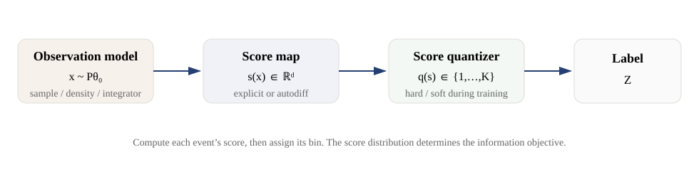

Information-optimal hard quantization of multivariate score space
Abstract
Binning simplifies a statistical analysis, but can discard information. We study how to assign events to a fixed number of bins while retaining Fisher information about model parameters. Each event is represented by its score: the gradient of its log likelihood at a reference parameter value.
A bin contributes information through its probability and its average score.
Our central question is whether good labels for a finite sample also define a rule for new events. For D-optimality, which maximizes the determinant of the retained information matrix, we prove that they do under precise conditions.
For positive weights, nonsingular retained information, and exactly \(K\) nonempty bins, merge identical score vectors. If no single-point move that leaves its source nonempty improves the objective at zero tolerance, every point is strictly closest to its own centre in a shared metric. The resulting nearest-centre rule reproduces the sample labels.
With nuisance parameters estimated from the bins, this conclusion can fail even at a global sample optimum. We establish conditional convergence results, show why their regularity conditions can cost information or fail, and give bounds that certify finite optimality when they meet.
Finally, we distinguish errors from estimated scores from uncertainty due to finite evaluation samples. For a fixed rule, we derive bounds on the former and an asymptotic error bar for the latter. These results separate what the bins optimize, what the prediction rule preserves, and what a reported information-retention value establishes.
1. Introduction
Many analyses replace each event with a histogram bin or category before fitting model parameters. The binning is useful only if it preserves the distinctions that matter for that fit. Here we ask how to choose \(K\) bins to retain Fisher information at a specified reference parameter value.
The score gives a natural representation of an event for this local problem. It records how the event's log likelihood changes when each parameter changes. Events with similar scores therefore have similar local effects on the fit.
After binning, the score of a label is the average score of events assigned to that bin. This turns information-preserving binning into a clustering problem whose objective is a matrix.
There are three distinct optimization tasks:
| Task | What is chosen | What the result provides |
|---|---|---|
| Assign a finite sample | One label for each weighted score vector | Bins for the supplied events |
| Fit a prediction rule | Parameters of a function \(q(s)\), using a training sample | A label for any new score vector |
| Optimize at the population level | A function \(q\) evaluated under a specified score distribution \(P_S\) | An ideal rule for that distribution |
The first task does not specify how to label a new event. The other two do, but their attainable sample objectives may differ from unrestricted label optimization. This distinction follows the empirical-versus-population analysis of Pollard [12] and the terminal-versus-Voronoi analysis of Telgarsky and Vattani [8].
It is the framework for our results, not a new theoremV8-02.
The matrix criterion matters. Maximizing Fisher-normalized trace is weighted \(k\)-means after whitening [1], [29], [3], [4]V8-03. D-optimality instead maximizes the determinant of the retained information. Its distance metric depends on the bins being optimized.
Profiled \(D_s\)-optimality also depends on how those bins constrain nuisance parameters.
The main finite-sample result is Theorem 2. For D-optimality, exact single-point exchange stability forces a nearest-centre rule that reproduces the training labels. The assumptions include positive weights, merged duplicate score vectors, a nonsingular information matrix, and exactly \(K\) nonempty bins.
This provides a prediction rule, but does not establish global or population optimality.
The corresponding result fails for profiled \(D_s\). We show what can still be proved: population stationarity, convergence under explicit regularity conditions, and finite optimality certificates. The scalar nuisance results explain why the regularity conditions are substantive.
An optimizer can gain information about the parameter of interest while losing the ability to estimate the nuisance from the bins.
A separate question arises after fitting. A rule may receive estimated scores, and its reported retention is itself estimated from data. We analyze these two errors separately. A small score error alone does not control relative retention error; independent true-score data support an asymptotic uncertainty interval under stated moment and rank conditions.
Sections 3–4 develop the information identity and the D result. Sections 5–6 explain nuisance parameters and finite certificates. Section 7 briefly treats alternative criteria and learned rules. Sections 8–9 cover evaluation and implementation. The appendices give technical statements, proofs, counterexamples, and claim-level attribution.
2. Prior work
The score representation and the information retained by a label are established results. Score-function quantization was developed in [1], [29], with scalar Fisher-optimal quantization in [2]. The conditional-score formulation and trace geometry appear in [3], [4]; [23] gives the scalar retained-information ratio.
We use these results to study full-matrix objectives and the relation between sample labels and prediction rules.
Exact point exchanges are also classical. Our finite D analysis combines scatter updates [24], [25] with a determinant-specific leverage argument. The closest geometric comparison is Hartigan versus Lloyd stability for squared-error clustering [8]. Theorem 2 establishes the corresponding implication for the retained-information determinant.
The literature search found no direct precedent; this is a search finding, not proof of priority.
For nuisance parameters, we use the classical \(D_s\) criterion [15], [16] and the variational characterization of the Schur complement [26], [46]–[48]. Population convergence draws on quantizer consistency and empirical-process methods [12], [33], [50]–[56]. The contribution lies in their application to hard partitions, including the conditions that fail and the explicit counterexamples.
Our evaluation results use log-determinant perturbation bounds [82], classification-margin comparisons [83], and the delta method [49]. The sampling theory is closely related to canonical-correlation influence functions [74]–[80]. We distinguish these inherited methods from the score-bin calculations and counterexamples developed here.
Appendix A.6 gives the detailed comparisons; Appendix H records attribution for each result.
3. Setting
3.1 Score space and the information retained by a label
Let \(P_\theta\) be a regular model for an observation \(X\), with parameter \(\theta\in\mathbb R^d\). All information statements are local to a fixed reference point \(\theta_0\). Define the score and full information matrix by \[ S=s(X)=\nabla_\theta\log p(X\mid\theta)\big|_{\theta_0},\qquad \mathbb E[S]=0,\qquad I_{\rm full}=\mathbb E[SS^\top]\succ0 . \] A hard quantizer assigns exactly one label to each score vector: \(q:\mathbb R^d\to\{1,\ldots,K\}\).
Write \(Z=q(S)\) for the label and \(Q(x)=q(s(x))\) for the complete observation-to-label map. The distribution of \(S\), denoted by \(P_S=s_\#P_{\theta_0}\), determines the optimization problem. It may be represented by a sample, a simulator, or an analytic integral.

For bin \(b\), let \(W_b=P(q(S)=b)\) be its probability, \(m_b=\mathbb E[S\,1_{\{q(S)=b\}}]\) its weighted score sum, and \(\mu_b=m_b/W_b\) its mean score. A bin label has score \(\mu_b\): once only the label is observed, the individual score is replaced by this conditional average.
Therefore \[ I_q=\sum_{b=1}^K W_b\mu_b\mu_b^\top=\sum_{b=1}^K\frac{m_bm_b^\top}{W_b}=\operatorname{Var}(\mathbb E[S\mid Z]), \qquad I_{\rm full}=I_q+\mathbb E[\operatorname{Cov}(S\mid Z)] . \tag{3.1} \] The second identity identifies the loss: score variation within a bin is no longer observable. Every objective below depends only on the bin probabilities and score sums \((W_b,m_b)\). This is the score-function quantization identity [1], in the geometric form of [3], [4] and the scalar form of [23]V8-01.
There are three immediate consequences. First, \(\sum_bm_b=0\) implies \(\operatorname{rank}I_q\le\min(d,K-1)\). Thus at least \(d+1\) bins are needed for nonsingular full D information [30]. Second, splitting bins cannot decrease information in any direction. Third, an invertible change of parameter coordinates preserves which partition is D-optimalV8-04.
The optimizer never subtracts the sample mean from the scores. The origin carries statistical meaning. Exact sample centering is used only in constructions or theorems that explicitly require it.
3.2 Why nearest-centre rules appear
Transfer a small probability mass \(d\varepsilon\) at score \(s\) from bin \(a\) to bin \(b\). The information changes by \([(s-\mu_a)(s-\mu_a)^\top-(s-\mu_b)(s-\mu_b)^\top]d\varepsilon\). For a differentiable objective \(F\), let \(G=\nabla_IF(I)\) be its symmetric matrix gradient. Then \[ \frac{dF}{d\varepsilon}=(s-\mu_a)^\top G(s-\mu_a)-(s-\mu_b)^\top G(s-\mu_b). \tag{3.2} \] If moving a boundary cannot improve the objective to first order, each point must prefer its assigned centre under this comparison.
For an atomless distribution, a regular local optimum therefore satisfies \(q(s)\in\arg\min_b(s-\mu_b)^\top G(s-\mu_b)\) almost everywhere, with the stated differentiability and zero-probability tie conditions. This applies the first variation of centroidal Voronoi energies [13] and directional derivatives of design criteria [15] to (3.1)V8-07.
Using the same symmetric matrix \(G\) for all bins cancels \(s^\top Gs\) in each pairwise comparison. Every bin is therefore an intersection of affine halfspaces.
When \(G\succeq0\), this is a Mahalanobis Voronoi rule: assign to the nearest centre using the quadratic distance defined by \(G\). Singular \(G\) leaves some directions unmeasured, so the cells extend along those directions. The rule can equivalently be written as \(q(s)=\arg\max_b(a_b^\top s+c_b)\), an affine-max classifierV8-08.
Proposition 1 transfers the Lloyd/CVT necessary condition [13] to a partition-dependent Mahalanobis metric; polyhedral cells for trace-type criteria are already in [3], [4]. This is a necessary local condition. It does not identify a global optimum.
3.3 Choosing what to preserve
D-optimality maximizes \(F_D(I)=\log\det I\), with gradient \(G_D=I^{-1}\). At a regular population stationary rule, \(q(s)=\arg\min_b(s-\mu_b)^\top I_q^{-1}(s-\mu_b)\). Both the centres and the metric are computed from the resulting bins. This is what we mean by self-consistent. The condition does not imply global optimality.
Profiled \(D_s\)-optimality targets selected parameters while estimating nuisance parameters from the same labels. Write \(\theta=(\psi,\lambda)\), where \(\psi\in\mathbb R^{d_\psi}\) is of interest and \(\lambda\in\mathbb R^{d_\lambda}\) is nuisance. Partition the information matrix as \(I=\begin{pmatrix}A&B\\B^\top&C\end{pmatrix}\). The information remaining for \(\psi\) after profiling is \(S_\psi(I)=A-BC^{-1}B^\top\), and the objective is \[ F_s(I)=\log\det S_\psi(I)=\log\det I-\log\det C . \tag{3.3} \] This is the classical \(D_s\) criterion [37], [38], [41], [39], [16], [15], with the nuisance-hardened interpretation of [27]V8-21.
Experimental-design equivalence theorems do not automatically apply: choosing hard partitions gives a different feasible set.
The gradient is \[ G_s=I^{-1}-E_\lambda C^{-1}E_\lambda^\top=L^\top S_\psi(I)^{-1}L\succeq0,\qquad L=[\,I_{d_\psi},-BC^{-1}\,], \tag{3.4} \] where \(E_\lambda\) selects the nuisance coordinates, so \(E_\lambda^\top IE_\lambda=C\). The matrix has rank \(d_\psi\). It compares events through the projected score \(e_q(s)=s_\psi-BC^{-1}s_\lambda\), called the binned efficient score. The projection depends on the bins, unlike a projection computed from full-data information.
Equations (3.2) and (3.4) give a nearest-centre rule in this projected space [16], [15]V8-22. Section 5 explains why distinct bins may have the same projected centre.
A-optimality minimizes the trace of the inverse information: \(F_A(I)=-\operatorname{tr}(I^{-1})\), \(G_A=I^{-2}\), differentiable and concave on the cone.
E-optimality maximizes information in the weakest direction: \(F_E(I)=\lambda_{\min}(I)\), concave and Loewner-monotone but nonsmooth at eigenvalue multiplicities. At a simple smallest eigenvalue with unit eigenvector \(v\), \(G_E=vv^\top\) and stationarity is the rank-one rule \(q(s)=\arg\min_b(v^\top(s-\mu_b))^2\): only the least-informed projection matters to first order.
Throughout \(\Phi_{D_s}(q)=\log\det S_\psi(I_q)\); at \(d_\psi=1\) we also write \(\Phi_s(q)=S_\psi(I_q)\), which orders quantizers identically, and \(\hat\Phi_s\) for its empirical value.
3.4 Access to the score law
The method needs scores, not necessarily densities. The identity \(s(x)=\nabla_\theta\log[p(x\mid\theta)/p(x\mid\theta_0)]|_{\theta_0}\) allows scores to be obtained from density ratios. Those ratios may come from analytic models, direct estimators, or classifiers with the required probability information [17], [21], [22].
A discriminant that supplies only a ranking is insufficientV8-05.
Estimated scores change the interpretation of the objective. If \(\hat s\ne s\), the proxy quantity \(\operatorname{Var}(\mathbb E[\hat s\mid q(\hat s)])\) differs from the true retained information \(\operatorname{Var}(\mathbb E[s\mid q(\hat s)])\). Score-estimation error and binning loss are separate [17], [27], [28]V8-06. Section 8 quantifies this distinction.
A score function alone does not specify how often scores occur. Optimization also needs a sample, reference distribution, importance weights, or an integration procedure. Appendix A gives the input constructions.
4. D-optimality: from sample labels to a prediction rule
4.1 Computing the gain from moving one point
Move a point \((s,w)\) of a weighted score table from a non-singleton cell \(a\) to \(b\), and let \[ u_a=s-\mu_a,\quad u_b=s-\mu_b,\quad \alpha=\frac{wW_a}{W_a-w},\quad \beta=\frac{wW_b}{W_b+w}. \tag{4.1} \] The exact change of retained information is one positive and one negative rank-one update, \[ \Delta I=\alpha u_au_a^\top-\beta u_bu_b^\top . \tag{4.2} \] The direct \(ss^\top\) terms cancel. Appendix B derives the remaining two terms.
With \(H=I^{-1}\), \(q_{aa}=u_a^\top Hu_a\), \(q_{bb}=u_b^\top Hu_b\), \(q_{ab}=u_a^\top Hu_b\), the matrix determinant lemma gives the closed gain \[ \Delta F_D=\log\!\left[(1+\alpha q_{aa})(1-\beta q_{bb})+\alpha\beta q_{ab}^2\right], \tag{4.3} \] so a candidate move costs three inverse-metric inner products. Identities (4.2)–(4.3) adapt the exchange-method scatter updates of Späth [24], [25], in the determinant-clustering tradition of [5], [6], from within-cluster scatter to the between-cell information matrix with centroid-coupled \(\alpha,\beta\)V8-09.
4.2 Why an exchange-stable partition defines a rule
An exchange-stable partition is one in which no admissible single-point move improves the objective. Under the assumptions below, a D-optimality exchange-stable partition must also obey a nearest-centre rule. The key is the following bound on distances between bin centres.
For a nonsingular partition, \[ (\mu_a-\mu_b)^\top I^{-1}(\mu_a-\mu_b)\le\frac1{W_a}+\frac1{W_b}, \tag{4.4} \] which follows from a projection-matrix bound on the columns \(\sqrt{W_b}\mu_b\) (Lemma B.1). This leverage inequality connects the distance comparison to the exact gainV8-10.
Merge coincident score rows into distinct vectors \(s_1,\ldots,s_N\in\mathbb R^d\) with positive weights \(w_i\). Partition them into exactly \(K\) nonempty bins and assume \(I\succ0\). A relocation is admissible whenever it leaves its source bin nonempty; impose no other move constraint.
Assume no admissible move has strictly positive exact \(\log\det I\) gain. This is exchange stability at zero tolerance. For an admissible move \(a\to b\) between distinct centres, suppose the point is at least as far from its own centre as from \(b\), so \(q_{aa}\ge q_{bb}\). Then \[ \Delta F_D\ge\log\!\left(1+\frac{\alpha\beta}4q_\delta^2\right)>0, \qquad q_\delta=(\mu_a-\mu_b)^\top I^{-1}(\mu_a-\mu_b). \tag{4.5} \] Such a move would contradict stability. Coincident centres also contradict stability unless duplicate atoms remain; those were excluded by merging. A singleton point is strictly closest to its own centre.
Consequently every training point is strictly closest to its assigned centre: \[ (s_i-\mu_{z_i})^\top I^{-1}(s_i-\mu_{z_i})<(s_i-\mu_b)^\top I^{-1}(s_i-\mu_b)\qquad\text{for every }i\text{ and every }b\ne z_i . \] This is a strict self-consistent Mahalanobis Voronoi partitionV8-11.
Proof idea. The determinant update (4.3) and leverage bound (4.4) together give the positive lower bound (4.5). Thus a point that prefers another centre would admit an improving move. Appendix B gives the algebra and the separate arguments for coincident centres and singletons. \(\square\)
The merged-atom hypothesis cannot be dropped. Scalar scores \((1,1,-1)\) with weights \((1/4,1/4,1/2)\), each in its own singleton cell with \(K=3\), admit no nonempty-preserving relocation, so the labeling is vacuously exchange-stable; yet two centroids coincide and no deterministic score-only rule reproduces the split labels (fixture G3).
The resolution is to merge coincident atoms before optimization, after which the theorem forces distinct centroids.V8-12
The converse fails: self-consistent nearest-centroid assignment under the current D metric is strictly weaker than exchange stability. An exact \(N=4\), \(d=1\), \(K=2\) D-Voronoi fixed point admits a strictly improving relocation (fixture G2), as did 35 of 100 random Lloyd/Voronoi fixed points, the determinant analogue of Lloyd fixed points that are not Hartigan-stable [8]; the chain global optimum \(\Rightarrow\) exchange-stable \(\Rightarrow\) strict D-Voronoi is strict in both arrowsV8-13.
The result supplies a rule for new scores: \[ \widehat q_D(s)=\arg\min_b(s-\mu_b)^\top\widehat I^{-1}(s-\mu_b). \tag{4.6} \] Under Theorem 2's assumptions, this rule reproduces all merged-atom training labels strictly. Original duplicate rows inherit their merged label. New scores may require a tie-breaking convention.
A numerical solver stopping at positive tolerance \(\varepsilon\) has a weaker guarantee. Only admissible individual prediction-disagreement moves are bounded by \(\varepsilon\), each evaluated against the original partition. Compilation also requires every positive-weight disagreement to be admissible: a singleton tie can force refusal.
The bound does not control simultaneous reassignment or population lossV8-14.
Every positive-definite global finite D optimum on merged atoms is exchange-stable. It therefore has the form (4.6), and restricting optimization to realizable affine-max labelings preserves the optimum value. The converse does not follow: a self-consistent rule can be suboptimalV8-15.

4.3 Exchange, Lloyd proposals, and global search
Accepting only strictly positive exact gains must terminate because the finite label set cannot contain an infinite improving sequence. Under Theorem 2's assumptions, the final state defines the predictor (4.6) [24], [7], [40]V8-16.
Updating all labels at once is different. Freezing \(I^{-1}\), assigning every point to its nearest centre, and recomputing \(I\) can decrease the objective. Concavity gives an upper tangent bound, not a lower bound on improvement.
Evaluate the actual objective before accepting a batch proposal. The example below demonstrates the failure; no novelty claim is made for it [8]V8-17.


The geometry also restricts global search. For fixed \((d,K)\), enumerating realizable affine-max labelings gives an \(N^{O(Kd)}\) exact algorithm [9]. Its exponent depends on \(d\) and \(K\); it is XP, not known to be fixed-parameter tractableV8-19.
For branch-and-bound, give every unassigned point its own temporary bin. This refinement has at least as much information as any completion, so it supplies an upper bound for D and other information-monotone criteria, including EV8-20.
Appendix B.6 gives the details.


5. What changes when nuisance parameters are fitted
When nuisance parameters are fitted from the bins, preserving interest-parameter information is no longer the same objective as preserving the full determinant. Improving the full information can be offset by the change in the nuisance block.
Theorem 2's cancellation no longer applies.
Two projections must be distinguished. The binned projection uses \(B_q^*=I_{\psi\lambda}I_{\lambda\lambda}^{-1}\), with projected bin centres \(e_b=\mu_{b\psi}-B_q^*\mu_{b\lambda}\). The full-data projection uses \(B^*=I^{\rm full}_{\psi\lambda}(I^{\rm full}_{\lambda\lambda})^{-1}\), giving the efficient score \(\widehat S=S_\psi-B^*S_\lambda\). In this section the hat denotes that projection, not an estimated score.
5.1 A sample optimum need not follow its nearest-centre rule
The rank-two update (4.2) still computes the exact change. The profiled gain is \(\Delta F_s=\Delta\log\det I-\Delta\log\det I_{\lambda\lambda}\), provided both matrices remain nonsingularV8-23. Positive-gain exchanges still terminate on the finite label set [24], [7], [40]V8-16.
We use the in-bin convention: the nuisance must remain estimable from the bins. A move must leave its source nonempty and the resulting nuisance block nonsingular. Section 5.9 shows why allowing singular blocks with a pseudo-inverse is a different problem.
A point's preference under the projected distance no longer determines the sign of its exact gain. The following bound gives a weaker relation.
At a one-point-exchange-stable \(D_s\) partition with nonsingular blocks, let \(s_{aa}=u_a^\top G_su_a\), \(s_{bb}=u_b^\top G_su_b\), and \(q_{aa}=u_a^\top I^{-1}u_a\). For any admissible move of a point of weight \(w_i\), \[ \left[s_{aa}-s_{bb}\right]_+\le w_iq_{aa}\Bigl(\frac1{W_a}+\frac1{W_b}\Bigr). \] Under uniform weights \(w_i=1/N\) and cell masses of order \(1/K\), the relative violation is \(O(K/N)\).
V8-24
Proof in Appendix C; Proposition 6 needs neither balanced masses nor a mass floor.
The failure is not a local-search artifact. On a centered equal-weight \(N=8\), \(d=2\), \(K=3\) table, exhaustive enumeration of all 966 three-cell partitions gives a unique global \(D_s\) optimum violating the nearest-cell rule of its own \(G_s\) semimetric (fixture G4): unrestricted finite \(D_s\) assignment and self-consistent inductive \(D_s\) fitting are genuinely different problems, a counterexample, not a novelty claimV8-25.
A second witness has a unique non-geometric optimum (fixture G5)DS12-4.
5.2 Binning the full-data efficient score gives an upper bound
Let \(S_\psi^+(I)=I_{\psi\psi}-I_{\psi\lambda}I_{\lambda\lambda}^+I_{\lambda\psi}\), with the Moore–Penrose pseudo-inverse, which is the Schur complement when \(I_{\lambda\lambda}\succ0\).
For any partition \(Z=q(S)\) with centered scores, \[ S_\psi^+(I_q)=\min_B\operatorname{Var}\!\bigl(\mathbb E[S_\psi-BS_\lambda\mid Z]\bigr) =\min_B\sum_bW_b(\mu_{b\psi}-B\mu_{b\lambda})(\mu_{b\psi}-B\mu_{b\lambda})^\top, \tag{5.1} \] a Loewner minimum over \(d_\psi\times d_\lambda\) matrices, attained exactly at the solutions of \(BI_{\lambda\lambda}=I_{\psi\lambda}\), in particular at \(B_q^*=I_{\psi\lambda}I_{\lambda\lambda}^+\) [46], [47], [26].DS11-1
Lemma 4 is the classical variational characterization of the generalized Schur complement [46], [47], [48], [26], interpreted through efficient scores [49], [42]. The minimum is in matrix order: its value is no larger in any direction than the value at another \(B\).
The pseudo-inverse allows a singular nuisance block, but that extends the feasible domain. Its value can exceed the best value attainable when the nuisance must be estimated from the bins.
Evaluating (5.1) at \(B^*\) gives the domination bound: for every quantizer, \[ S_\psi(I_q)\preceq\operatorname{Var}\!\bigl(\mathbb E[\widehat S\mid q(S)]\bigr), \qquad \operatorname{Var}\!\bigl(\mathbb E[\widehat S\mid q]\bigr)-S_\psi^+(I_q)=(B^*-B_q^*)\,I^q_{\lambda\lambda}\,(B^*-B_q^*)^\top\succeq0 , \tag{5.2} \] Thus binning the full-data efficient score gives an upper bound on the best profiled value [26], [42], [27]V8-27. The two problems use different nuisance projections, and (5.2) measures the cost of that difference.
Proposition C.1 gives the equality condition, the limit under refinement, and the characterization of information-neutral splitsDS11-3DS11-2. Neutral splits can create multiple optima: one exact eight-point example has 31 optimal labelings (fixture G6)DS11-4, DS11-5.
With one interest parameter and an atomless efficient-score distribution, the optimal projected bins are intervals [43]. On a sorted finite sample, their value can be computed by dynamic programming in \(O(KN)\) operations [44], [45]. Appendix D.1 handles exact tiesV8-29.
Let \(J^*\) denote the optimal \(K\)-interval rule for \(\widehat S\), and let \[ v_K=\sup_q S_\psi^+(I_q) \] be the best profiled value over measurable \(K\)-bin rules. Equation (5.2) bounds \(v_K\) by \(\operatorname{Var}(\mathbb E[\widehat S\mid J^*(\widehat S)])\). Theorem 8 states when equality holds.
The empirical interval optimum, denoted by \(\hat v_K\), is therefore an upper bound and an initialization for the profiled problem. It is not generally a solution of that problem.
5.3 The population rule uses a bin-dependent projection
At the population level, stationarity means that moving a vanishingly small region cannot improve the objective to first order. Let \(P\) be atomless with \(\mathbb E[S]=0\), \(\mathbb E\|S\|^2<\infty\), and \(q\) have \(W_b>0\), \(I_q\succ0\). Relabeling \(E\subseteq A_a\) of mass \(\varepsilon\) and barycenter \(\bar s\) changes \(I_q\) as the rank-two relocation (4.2) at \((\bar s,\varepsilon)\).
Call \(q\) bounded-packet stationary if for every \(a\ne b\) and \(R>0\) \[ \limsup_{E\subseteq A_a\cap B(0,R),\ P(E)\to0}\ \frac{\Phi_{D_s}(q_{E\to b})-\Phi_{D_s}(q)}{P(E)}\le0 . \tag{5.3} \]
\(q\) is bounded-packet stationary iff for every \(a\), \(P\)-a.e. \(s\in A_a\) and every \(b\), \[ (s-\mu_a)^\top G_s(s-\mu_a)\le(s-\mu_b)^\top G_s(s-\mu_b), \qquad G_s=C^\top S_\psi(I_q)^{-1}C,\quad C=[\,\mathrm{Id}_{d_\psi},-B_q^*\,], \tag{5.4} \] that is, nearest projected centroid in the \(S_\psi(I_q)^{-1}\) metric with \(e(s)=Cs\). Sufficiency holds for every \(P\); necessity needs atomlessness. The nearest-projected-centroid correspondence is a.e. single-valued and reproduces \(q\) up to null sets iff (i) the \(e_b\) are pairwise distinct and (ii) \(P\) charges no tie hyperplane.
Stationarity does not force (i).DS12-1
Proof in Appendix C; it is the first-variation template of optimal design [15] in a solution-dependent semimetric, with [12], [33] as the \(k\)-means analogues; the witness of §5.1 violates (5.4). The theorem's last sentence is the population difference from D: under a nuisance-sign-symmetric law a \(\psi\)-threshold partition split by \(\operatorname{sign}(s_\lambda)\) is stationary with pairwise-coincident projected centroids and profiled-information-free cells (fixture G7)DS12-2, DS12-3.
No efficient-semimetric rule separates coincident cells, whereas finite D forces distinct centroids (Theorem 2); a deployable rule must merge them first.
5.4 How far sample labels can violate the population rule
Theorem 2 has no exact profiled counterpart. Proposition 6 nevertheless bounds a point's preference for another bin at an exchange-stable state. The bound is proportional to its weight and to two leverage factors, which measure distances in the inverse-information metric.
Small point weights help only if those factors remain controlled. Near-singular information can make them large. This is why a finite bound alone does not prove convergence to a population rule. The full inequality (5.5), its assumptions, and proof are in Appendix C.5.
5.5 When sample solutions approach a population rule
Theorem 7 gives a conditional answer. Consider independent, equally weighted samples and an exchange-stable labeling for each sample. Build a nearest-projected-centre rule from each labeling's own moments.
Five conditions control this sequence: an atomless distribution with finite second moments; bin probabilities bounded away from zero; information matrices bounded away from singularity; little probability near possible decision boundaries; and separated projected bin centres. These are (M1)–(M5), stated precisely in Appendix C.6.
Under these conditions, the fraction of sample labels that disagree with the associated rule tends to zero. Every convergent subsequence of rule parameters identifies a population-stationary rule. A global sample optimum has the stronger value conclusion stated in Theorem 7, within the specified margin-compatible class.
These are conditional results: the optimizer does not automatically supply the conditions.
5.6 Good interest-parameter bins can lose nuisance information
Consider one parameter of interest and one nuisance parameter. Suppose the nuisance score has conditional mean zero given the full-data efficient score. This condition, called (L), includes the Gaussian setting covered by the theorem. It is a property of the distribution, not an instruction to center sample scores.
Under the additional scalar regularity and swap conditions of Theorem 8, with exactly centered equal-weight samples and \(K\ge3\), global sample optima approach the best interval binning of the efficient score. Their information about the parameter of interest approaches the optimal value.
Their binned nuisance information tends to zero.
Thus the bin-mass condition survives, but the nonsingularity condition fails. The limiting rule solves the projected problem; it cannot estimate the nuisance from its bins. Appendix C.7 states the scalar scope and all assumptions, including the conditions needed for this limit.
5.7 Preserving nuisance information has a cost
Under Theorem 9's scalar assumptions, imposing a fixed positive lower bound on binned nuisance information keeps the best attainable value strictly below the efficient-score optimum. This loss applies to every feasible labeling, not just to exchange-stable solutions.
The theorem also shows that any sequence approaching the optimal value must lose nuisance information. The cost is therefore a property of the objective and distribution, rather than a failure of a particular optimizer. Its positive limiting size is proved to exist; no universal numerical value is supplied.
The observable sample comparison is the gap to the efficient-score upper bound.
Appendix C.8 gives the precise constrained values and qualifications. Its counterexamples also show that the efficient-score interval labels need not be exchange-stable for the profiled objective.
5.8 The regularity conditions can be incompatible
The obstruction goes beyond a loss in objective value. Under Theorem 10's scalar conditional-centering and boundary assumptions, sufficiently large samples almost surely admit no exchange-stable labeling satisfying all three fixed requirements: positive bin masses, nonsingular information, and separated projected centres.
Dropping centre separation can leave stationary configurations with several bins sharing a projected centre. Those bins cannot be distinguished by the projected nearest-centre rule. Merging them changes the nuisance information, so this is not a free repair of the original profiled problem.
Appendix C.9 gives the exact population and sample statements, the additional conditions for the merged configurations, and the counterexamples.
5.9 The obstruction is not universal
A distribution outside the conditional-centering class behaves differently. In the explicit example (5.7), three intervals of the interest score form the unique population optimum and retain positive nuisance information. Every sequence of exact global sample optima converges to that rule and eventually satisfies fixed regularity margins (Theorem 11).
This is an existence result for one distribution. It does not show that local exchange search finds those global optima. The example, convergence bound, and finite-sample boundary cases are in Appendix C.10. Together, Theorems 8–11 explain why profiled sample-to-population guarantees must name the distributional and selection assumptions.
6. Bounding and certifying the finite profiled optimum
A sample optimizer supplies a lower bound on the best attainable value. To certify global optimality, we also need an upper bound. For one interest parameter, Theorem 12 constructs such a bound by subtracting a linear combination of nuisance scores and solving the resulting scalar interval problem.
6.1 When the bounds meet
For each nuisance coefficient \(\beta\), compute the best interval labeling of the projected scores \(T_{\beta i}=s_{\psi i}-\beta s_{\lambda i}\). Minimizing that upper value over \(\beta\) gives a dual bound. A candidate labeling supplies the lower value by evaluating its actual profiled information.
The two bounds meet when a labeling is optimal at a minimizing \(\beta\) and that same labeling satisfies the nuisance normal equation (6.2). This pair is a saddle certificate. A nonsingular nuisance block certifies the ordinary in-bin problem.
A singular block certifies only the generalized problem that allows a pseudo-inverse.
Appendix D.1 gives Theorem 12, definitions (6.1), and the exact certificate. If several interval labelings tie, the normal equation must be checked for the actual labeling supplied. A deterministic tie policy can miss a closing certificate.
6.2 Why a nonzero bracket width needs interpretation
An open bracket is still a valid enclosure of the optimum. It does not prove a positive gap between the best primal and dual values: another tied labeling might close it. Conversely, exact counterexamples show that the optimal bounds can remain separated by a nonvanishing amount.
Appendix D.2 gives those examples, including (6.3). Appendix D.4 states the computational guarantees and explains why the multivariate-interest extension does not support the same convex outer optimization.
6.3 What a profiled terminal state establishes
Five observable states follow, with no novelty of their own [27], [39], [26], [56].DS16-3
| Observed state | What is established |
|---|---|
| exhibited regular saddle pair (6.2) | finite global in-bin optimality of that labeling; a singular saddle certifies only the generalized problem |
| open reported bracket | the interval \([p_{\rm reg},d]\) or \([p^+,d]\); neither optimality nor a gap |
| projected efficient-score interval rule (§5.2) | the only established unconditional route, with nuisance information supplied externally |
| companion rule of Theorem 7 | backed only along sequences satisfying (M1)–(M5) |
| any other profiled terminal | no inductive rule is asserted |
These are the guarantees established here. The scalar obstruction requires the assumptions of Theorems 9–10; it is not universal. Theorem 11 proves convergence for global optimizers on one other distribution, without guaranteeing that local search finds them.
7. Other criteria and learned quantizers
7.1 E-optimality
E-optimality maximizes the smallest information eigenvalue. If that eigenvalue is repeated, no unique first-order distance metric exists [15]V8-30. In that case, single-transfer first-order stability can hold automaticallyV8-31.
The D conclusion also fails when the smallest eigenvalue is simple. A numerically verified global E optimum disagrees with its own nearest-centre rule (fixture G19)V8-33. Positive first-order preference need not imply positive exact gainV8-32.
Concavity still supplies a safe test for rejecting non-improving movesV8-34. Appendix E.1–E.2 gives the formulas and evidence.
7.2 A-optimality
A-optimality minimizes \(\operatorname{tr}(I^{-1})\). Its exact single-point gain can be computed in \(O(d^2)\), and strictly improving exchanges terminate [68]–[71], [24]A1-1A1-2.
The D proof mechanism fails: one exact example has a positive nearest-centre preference but negative A gain. This is a counterexample for a move, not an exhibited exchange-stable non-Voronoi partitionA2-1, A2-2. A concavity-based rejection test remains valid [15], [38], [70]A3-1.
Appendix E.3 gives both results. A-optimality is not implemented in the reference library.
7.3 Learning a rule through soft assignments
On a finite sample, moving a hard decision boundary changes nothing until an event crosses it. The empirical objective is therefore piecewise constant, with ordinary gradients zero almost everywhere [18], [20]V8-35. Population shape derivatives require different arguments; no complete differentiability-and-convergence result is established here [13], [14]V8-36.
Soft assignments replace each label by bin probabilities. With the randomization fixed in the statistical parameter, their moment matrix is the information of a randomized quantizer [3], [18], [20]V8-37. Its gradient uses the same centre comparisons [18]V8-38.
At fixed temperature and away from empty bins and singular matrices, standard smooth optimization supports stationary-point guarantees [18]V8-39. This does not guarantee an optimal hard rule after rounding.
For an atomless score distribution, a deterministic rule exists with the same bin moments as any randomized rule [10], [11]V8-28. This existence theorem neither describes how to find it nor covers finite atomic samples.
Appendix F gives the construction, gradient, and qualifications.
7.4 Learning within a specified rule family
Proposition F.1 gives a standard consistency result for a compact family of affine-max rules. With the stated score, bin-mass, and nonsingularity conditions, empirical objectives converge uniformly. Approximate empirical maximizers then approach the best population value in that family [12], [54]V8-40.
This concerns optimization within the specified family. It neither certifies an arbitrary local training solution nor settles unrestricted D consistency.
8. Evaluating a fitted rule
A fitted rule faces two distinct sources of error. It may receive estimated scores, and its retention is measured on finitely many events. Throughout this section, a frozen rule means that fitting has finished and neither the rule nor its provider changes during evaluation.
Sections 8.1–8.3 concern score error. Section 8.4 concerns independent-sample uncertainty. Appendix I gives the precise statements and proofs; Appendix G records counterexamples identified during the independent audits.
8.1 A retention value computed from estimated scores can be misleading
Fix a rule \(q\) and labels \(Z=q(\hat s)\), where \(\hat s=s+e\) is an estimated score. There are two information matrices for these same labels. The true one uses the bin means of \(s\); the reported one uses the bin means of \(\hat s\).
Each retention ratio also uses its corresponding full-score matrix.
Theorem 13 separates the log ratio of reported to true retention into an alignment term, a quadratic score-error term, and a controlled remainder. Alignment describes how score errors correlate with the signal retained by the bins.
The quadratic term compares cell-averaged score error with total score error. Neither term alone determines the reporting error.
The weakest retained direction matters. A modest score error can produce a large relative retention error if the rule retains almost no information in that direction. An exact example keeps the normalized score error near \(16\%\) while the reported-to-true ratio grows from about \(1.75\) to \(42.8\).
Both retention values still lie in \([0,1]\).
Appendix I.1 gives the expansion (8.2), the error scales, and the small-error and nonsingularity conditions. The result concerns one fixed set of labels. It supplies no uniform guarantee over fitted rules, and its error budgets require information about the true score.
8.2 Estimated scores can also change labels
A second error occurs when \(q(\hat s)\ne q(s)\). A score perturbation changes a label only if it can reach the boundary of the original bin. Proposition 14 therefore bounds the disagreement probability using score error and the probability mass near bin boundaries.
This boundary condition is essential. If a bin boundary contains an atom of positive probability, arbitrarily small perturbations can change a fixed fraction of labels. Moreover, few changed labels do not by themselves imply a small information loss: the scores of those events matter.
The proposition combines a disagreement bound with bounds on the resulting information change. Moment conditions control the trace loss; determinant bounds additionally depend on the smallest retained eigenvalue. Appendix I.2 gives the precise bounds and a boundary counterexample.
8.3 Calibration and ranking do not certify retention
Classifier probabilities can be converted into mixture scores. Proposition 15 bounds score error by posterior-probability error for an interior reference mixture, with constants depending on the mixture and score coordinates.
Calibration measures only part of posterior error. A calibrated prediction can omit distinctions present in the true posterior. Conversely, a miscalibrated prediction can rescale scores without changing the retention ratio. Ranking measures such as AUC do not control the score-error budget either: monotone distortions preserve ranking while changing reported retention.
Appendix I.3 gives the conversion bound and counterexamples. These results explain why calibration or ranking checks cannot replace validation of the scores used by the binning objective.
8.4 Estimating uncertainty on independent data
Freeze the rule, score provider, reference parameter, and number of bins. Then evaluate the labels on an independent, equally weighted sample of true scores. The provider used to assign labels may still be approximate; the information calculation here uses the true scores.
Let \(p_b\) and \(c_b=E[S\mid Z=b]\) be the bin probabilities and true mean scores. Write \(V=E[SS^\top]\), \(I_Z=\sum_bp_bc_bc_b^\top\), and \(\eta_D=(\det I_Z/\det V)^{1/d}\). Hats denote the same quantities computed from the evaluation sample, without centering scores. Empty-bin contributions are zero; the estimator is defined as zero if \(\hat V\) is singular.
The assumptions are positive bin probabilities (A1), finite fourth score moment (A2), \(V\succ0\) (A3), and \(I_Z\succ0\) (A3′). At the reference law, the last condition requires at least \(d+1\) bins.
Under (A1)–(A3′), conditionally on the rule, \[ \sqrt n\,(\hat\eta_D-\eta_D)\Rightarrow N(0,\sigma^2),\qquad \sigma^2=E[\psi(S,Z)^2],\qquad \psi(S,Z)=\frac{\eta_D}d\Big[2S^\top I_Z^{-1}c_Z-c_Z^\top I_Z^{-1}c_Z-S^\top V^{-1}S\Big], \tag{8.5} \] with \(E\psi=0\). The plug-in \(\hat\psi_i\) (hats on every population object) satisfies \(\sum_i\hat\psi_i=0\) whenever \(\hat I_Z,\hat V\succ0\), and \(\hat\sigma^2=n^{-1}\sum_i\hat\psi_i^2\to\sigma^2\) almost surely. If moreover (A4) \(\sigma^2>0\), the Wald interval \(\hat\eta_D\pm z_{1-\alpha/2}\hat\sigma/\sqrt n\) has asymptotic level \(1-\alpha\).
At \(d=1\), \(\psi=((1-\eta)S^2-(S-c_Z)^2)/v\) and \(\hat\eta=1-\sum_i(S_i-\hat c_{Z_i})^2/\sum_iS_i^2\).
This gives an asymptotic error bar for the true retention of the fixed labels. It uses the delta method and canonical-correlation influence-function theory, specialized to uncentered bin moments [49], [73]–[80].
The qualifications matter. A zero influence-function variance does not justify a Wald interval. A singular retained matrix requires different asymptotics. Heavy-tailed scores can make the large-sample approximation inaccurate at practical sample sizes. Propositions 17–18 and the measured coverage examples are in Appendix I.4; none establishes coverage for a rule refitted on its evaluation sample.
8.5 What is measured and what is not
Three quantities should be reported separately: the retention computed from the supplied scores, any bound on its difference from true retention, and sampling uncertainty. Increasing the evaluation sample reduces sampling uncertainty; it does not remove score-estimation bias.
Under Theorem 16's conditions, true-score evaluation gives an interval for true retention. Applying the same calculation to proxy scores instead targets proxy retention. On the reported classifier example, the true-retention interval covers the proxy value only \(0.046\) of the time at \(n=100\), and never at the larger tested sizesO6-5, O7-10.
Theorem 13 and Proposition 14 can also compare a proxy-fitted rule with another rule, but only with error budgets for both and the required proxy-objective comparison. Exchange stability alone supplies neither. Appendix I.1 states that comparison precisely.
Finally, geometric-mean retention and its interval do not characterize the weakest retained direction; the full retention spectrum remains useful.
9. Implementation and verification
The reference library separates the two tasks explicitly. optimize_partition returns labels and diagnostics for a fixed score table. fit_quantizer returns a reusable rule with predict_scores. Observation-to-score conversion remains a separate step. Appendix A.4 describes the interfaces and their statistical meaning.
For D, the exact theorem supports compilation under its stated assumptions. Positive numerical tolerance permits individual admissible disagreements, with the additional singleton guard described in §4.2. It does not imply exact label reproduction or a bound on changing all labels at once.
Profiled exchange remains a sample optimizer. The mathematical bracket of §6 certifies finite labels when its conditions hold; it does not supply a general profiled predictor or mean that the library implements profiled certification. A projected efficient-score rule with externally supplied nuisance information solves a different statistical problem.
The normalized retention matrix is \(R=I_{\rm full}^{-1/2}I_qI_{\rm full}^{-1/2}\). Its eigenvalues lie in \([0,1]\) by (3.1) [1], [3]I1-2. The geometric mean \(\eta_D=(\det R)^{1/d}\) is the standard D-efficiency [15], [72], with [23] covering the scalar caseI1-1. Profiled efficiency compares the corresponding Schur complements and requires nonsingular nuisance blocks [16], [37], [15], [27]I2-1.
Report the spectrum as well as its geometric mean. The ordering \(\lambda_{\min}(R)\le\eta_D\le\operatorname{tr}R/d\) shows why the mean does not summarize the weakest direction [41], [15]I3-1. Numerically singular full-information directions are projected out, never replaced by a ridge.
Estimated-score outputs retain their proxy interpretation.
The independent-sample diagnostic computes Theorem 16's influence-function variance. It withholds the interval when the rank or variance conditions fail. It does not replace a singular full matrix by a projected surrogate for that interval. Appendix I.4 explains the exceptional cases; Appendix A.5 describes the normalized outputs.
Verification compares update formulas with direct recomputation and preserves counterexamples as deterministic tests. The small exhaustive D benchmark in §4 checks against the actual global optimum. Formal proofs cover selected mathematical statements, not the Python implementation.
Appendix G separates exact fixtures, floating-point checks, and measured benchmarks.
10. Discussion and open problems
10.1 What the results establish
The strongest finite result is the D assignment-to-rule theorem. It makes local exchange optimization useful for constructing a predictor, while leaving global search and population consistency as separate questions.
The profiled results explain why this reasoning cannot simply be reused with nuisance parameters. A well-conditioned sample solution is not automatically a statistically preferable one. Conversely, a high profiled objective may approach a limit at which the nuisance can no longer be fitted from the bins.
The scalar convergence and obstruction results apply only under their stated distributional assumptions. Vector nuisance parameters, multiple interest parameters, generic selection by local search, and the E consistency question remain unresolvedV8-41.
10.2 Open problems and future work
This paper records the established results and their limits. Owner review and research freeze remain pending. The questions below are registered follow-up topics, not claims settled by this manuscriptV8-42.
The most immediate extensions concern rules trained on estimated scores, weighted or reused evaluation samples, and template-likelihood fits. The separate HEP assessment will examine count and shape information, nuisance constraints, and finite-template statistics. It is follow-up research, not a capability established here.
Other questions concern bin-count tradeoffs, unrestricted population consistency, and stronger optimization certificates. Appendix F.6 retains the complete list and its registry identifiers. Selected finite D statements are machine-checked; the remaining formal obligations are parked. Neither this editorial revision nor automated checks constitute research freeze or publication acceptance.
11. Conclusion
Information-preserving binning has two outputs that should be distinguished: labels for a sample and a rule for future events. For D-optimality, exact single-point exchange stability connects them. Under the merged-atom, positive-weight, nonempty-bin, and nonsingularity assumptions, the sample labels obey a strict nearest-centre rule.
This gives a reusable predictor without claiming that local search found the global optimum.
Profiling nuisance parameters changes the conclusion. Even globally optimal sample labels can fail their own projected nearest-centre rule. Population convergence needs additional conditions, and the scalar results show why those conditions can fail or cost information.
Finite upper and lower bounds still provide useful certificates when they meet.
Evaluation requires another distinction. Retention computed from estimated scores need not equal true retained information. Independent true-score data quantify sampling uncertainty for a fixed rule under the stated conditions. Keeping these guarantees separate makes both the optimization result and its reported performance interpretable.
References
- P. Venkitasubramaniam, L. Tong, and A. Swami. “Score-Function Quantization for Distributed Estimation.” CISS, 2006. doi:10.1109/CISS.2006.286494.
- R. C. Farias and J.-M. Brossier. “Optimal Scalar Quantization for Parameter Estimation.” 2013. arXiv:1310.6945.
- L. P. Barnes, Y. Han, and A. Özgür. “A Geometric Characterization of Fisher Information from Quantized Samples with Applications to Distributed Statistical Estimation.” Allerton, 2018, 16–23. doi:10.1109/ALLERTON.2018.8635899.
- B. Dülek. “On the Optimality of Sufficient Statistics-Based Quantizers.” IEEE TPAMI 45(3), 3567–3573, 2023. doi:10.1109/TPAMI.2022.3172282.
- H. P. Friedman and J. Rubin. “On Some Invariant Criteria for Grouping Data.” JASA 62(320), 1159–1178, 1967. doi:10.1080/01621459.1967.10500923.
- A. J. Scott and M. J. Symons. “Clustering Methods Based on Likelihood Ratio Criteria.” Biometrics 27(2), 387–397, 1971. doi:10.2307/2529003.
- J. A. Hartigan. Clustering Algorithms. Wiley, 1975.
- M. Telgarsky and A. Vattani. “Hartigan’s Method: k-means Clustering without Voronoi.” AISTATS, PMLR 9, 820–827, 2010. PMLR.
- M. Inaba, N. Katoh, and H. Imai. “Applications of weighted Voronoi diagrams and randomization to variance-based k-clustering.” SoCG, 332–339, 1994. doi:10.1145/177424.178042.
- A. Dvoretzky, A. Wald, and J. Wolfowitz. “Elimination of Randomization in Certain Statistical Decision Procedures and Zero-Sum Two-Person Games.” Annals of Mathematical Statistics 22(1), 1–21, 1951. doi:10.1214/aoms/1177729689.
- M. A. Khan, K. P. Rath, and Y. Sun. “The Dvoretzky-Wald-Wolfowitz theorem and purification in atomless finite-action games.” International Journal of Game Theory 34, 91–104, 2006. doi:10.1007/s00182-005-0004-3.
- D. Pollard. “Strong Consistency of K-Means Clustering.” Annals of Statistics 9(1), 135–140, 1981. PDF.
- Q. Du, V. Faber, and M. Gunzburger. “Centroidal Voronoi Tessellations: Applications and Algorithms.” SIAM Review 41(4), 637–676, 1999. doi:10.1137/S0036144599352836.
- Q. Du, M. Emelianenko, and L. Ju. “Convergence of the Lloyd Algorithm for Computing Centroidal Voronoi Tessellations.” SIAM J. Numer. Anal. 44(1), 102–119, 2006. doi:10.1137/040617364.
- F. Pukelsheim. Optimal Design of Experiments. SIAM Classics in Applied Mathematics. See Ch. 7, General Equivalence Theorem. doi:10.1137/1.9780898719109.ch7.
- W. Näther and V. Reinsch. “D_s-optimality and Whittle’s equivalence theorem.” Series Statistics 12(3), 307–316, 1981. doi:10.1080/02331888108801591.
- J. Brehmer, G. Louppe, J. Pavez, and K. Cranmer. “Mining gold from implicit models to improve likelihood-free inference.” PNAS 117(10), 5242–5249, 2020. doi:10.1073/pnas.1915980117.
- P. de Castro and T. Dorigo. “INFERNO: Inference-Aware Neural Optimisation.” Computer Physics Communications 244, 170–179, 2019. doi:10.1016/j.cpc.2019.06.007.
- K. T. Matchev and P. Shyamsundar. “Optimal event selection and categorization in high energy physics. Part I. Signal discovery.” JHEP 03, 291, 2021. doi:10.1007/JHEP03(2021)291.
- J. Erdmann, N. K. Kasaraguppe, and F. Mausolf. “Learning to bin: differentiable and Bayesian optimization for multi-dimensional discriminants in high-energy physics.” 2026. arXiv:2601.07756.
- K. Cranmer, J. Pavez, and G. Louppe. “Approximating Likelihood Ratios with Calibrated Discriminative Classifiers.” 2015. arXiv:1506.02169.
- M. Sugiyama, T. Suzuki, and T. Kanamori. Density Ratio Estimation in Machine Learning. Cambridge University Press, 2012. doi:10.1017/CBO9781139035613.
- A. Valassi. Optimising HEP parameter fits via Monte Carlo weight derivative regression. EPJ Web of Conferences 245 (CHEP 2019), 06038, 2020; arXiv:2003.12853.
- H. Späth. “Computational experiences with the exchange method: Applied to four commonly used partitioning cluster analysis criteria.” European Journal of Operational Research 1(1), 23–31, 1977.
- H. Späth. Cluster Dissection and Analysis: Theory, FORTRAN Programs, Examples. Ellis Horwood, Chichester, 1985.
- C.-K. Li and R. Mathias. Extremal characterizations of the Schur complement and resulting inequalities. SIAM Review 42(2), 233–246, 2000.
- J. Alsing and B. Wandelt. Nuisance hardened data compression for fast likelihood-free inference. Monthly Notices of the Royal Astronomical Society 488(4), 5093–5103, 2019.
- T. Charnock, G. Lavaux, and B. D. Wandelt. “Automatic physical inference with information maximizing neural networks.” Physical Review D 97, 083004, 2018.
- P. Venkitasubramaniam, L. Tong, and A. Swami. “Quantization for Maximin ARE in Distributed Estimation.” IEEE Transactions on Signal Processing 55(7), 3596–3605, 2007.
- J. Zhang, R. S. Blum, L. M. Kaplan, and X. Lu. “A Fundamental Limitation on Maximum Parameter Dimension for Accurate Estimation With Quantized Data.” IEEE Transactions on Information Theory 64(9), 6180–6195, 2018.
- J. C. Kieffer. Uniqueness of locally optimal quantizer for log-concave density and convex error weighting function. IEEE Transactions on Information Theory 29(1), 42–47, 1983.
- D. Mease and V. N. Nair. Unique optimal partitions of distributions and connections to hazard rates and stochastic ordering. Statistica Sinica 16(4), 1299–1312, 2006.
- S. Graf and H. Luschgy. Foundations of Quantization for Probability Distributions. Lecture Notes in Mathematics 1730, Springer, 2000.
- C. Levrard. Nonasymptotic bounds for vector quantization in Hilbert spaces. Annals of Statistics 43(2), 592–619, 2015.
- S. D. Silvey. Optimal design measures with singular information matrices. Biometrika 65(3), 553–559, 1978.
- H. Wang, M. Yang and J. Stufken. Information-based optimal subdata selection for big data linear regression. Journal of the American Statistical Association 114(525), 393–405, 2019.
- H. P. Wynn. Results in the theory and construction of D-optimum experimental designs. Journal of the Royal Statistical Society, Series B 34(2), 133–147, 1972.
- P. Whittle. Some general points in the theory of optimal experimental design. Journal of the Royal Statistical Society, Series B 35(1), 123–130, 1973.
- S. D. Silvey and D. M. Titterington. A geometric approach to optimal design theory. Biometrika 60(1), 21–32, 1973.
- S. D. Silvey, D. M. Titterington and B. Torsney. An algorithm for optimal designs on a finite design space. Communications in Statistics — Theory and Methods 7(14), 1379–1389, 1978.
- J. Kiefer. General equivalence theory for optimum designs (approximate theory). Annals of Statistics 2(5), 849–879, 1974.
- P. J. Bickel, C. A. J. Klaassen, Y. Ritov, and J. A. Wellner. Efficient and Adaptive Estimation for Semiparametric Models. Johns Hopkins University Press, Baltimore, 1993.
- W. D. Fisher. On grouping for maximum homogeneity. Journal of the American Statistical Association 53(284), 789–798, 1958.
- H. Wang and M. Song. Ckmeans.1d.dp: optimal k-means clustering in one dimension by dynamic programming. The R Journal 3(2), 29–33, 2011.
- A. Grønlund, K. G. Larsen, A. Mathiasen, J. S. Nielsen, S. Schneider, and M. Song. “Fast Exact k-Means, k-Medians and Bregman Divergence Clustering in 1D.” 2017. arXiv:1701.07204.
- M. G. Krein. The theory of self-adjoint extensions of semi-bounded Hermitian transformations and its applications. I. Matematicheskii Sbornik 20(62), 431–495, 1947.
- W. N. Anderson, Jr. Shorted operators. SIAM Journal on Applied Mathematics 20(3), 520–525, 1971.
- W. N. Anderson, Jr. and G. E. Trapp. Shorted operators. II. SIAM Journal on Applied Mathematics 28(1), 60–71, 1975.
- A. W. van der Vaart. Asymptotic Statistics. Cambridge University Press, 1998 (§25.4).
- D. Pollard. Quantization and the method of k-means. IEEE Transactions on Information Theory 28(2), 199–205, 1982.
- M. J. Sabin and R. M. Gray. Global convergence and empirical consistency of the generalized Lloyd algorithm. IEEE Transactions on Information Theory 32(2), 148–155, 1986.
- A. W. van der Vaart and J. A. Wellner. Weak Convergence and Empirical Processes. Springer, 1996 (Theorem 2.4.3).
- D. Pollard. Convergence of Stochastic Processes. Springer, 1984.
- M. Blanchard, A. Jaffe and N. Zhivotovskiy. Consistency and inconsistency in k-means clustering. arXiv:2507.06226, 2025.
- E. V. Haynsworth. Determination of the inertia of a partitioned Hermitian matrix. Linear Algebra and its Applications 1(1), 73–81, 1968. doi:10.1016/0024-3795(68)90050-5.
- A. Rakhlin and A. Caponnetto. Stability of K-means clustering. Advances in Neural Information Processing Systems 19, MIT Press, 2007 (NIPS 2006).
- T. Tarpey and B. Flury. Self-consistency: a fundamental concept in statistics. Statistical Science 11(3), 229–243, 1996.
- R. J. Serinko and G. J. Babu. Weak limit theorems for univariate k-mean clustering under a nonregular condition. Journal of Multivariate Analysis 41(2), 273–296, 1992.
- A. Jakubowski. A complement to the Chebyshev integral inequality. Statistics & Probability Letters 168, 108934, 2021. doi:10.1016/j.spl.2020.108934.
- T. Tarpey, L. Li and B. Flury. Principal points and self-consistent points of elliptical distributions. Annals of Statistics 23(1), 103–112, 1995.
- T. Hastie and W. Stuetzle. Principal curves. Journal of the American Statistical Association 84(406), 502–516, 1989.
- T. Tarpey and N. Loperfido. Self-consistency and a generalized principal subspace theorem. Journal of Multivariate Analysis 133, 27–37, 2015.
- F. Pukelsheim and D. M. Titterington. General differential and Lagrangian theory for optimal experimental design. Annals of Statistics 11(4), 1060–1068, 1983.
- N. Megiddo. Applying parallel computation algorithms in the design of serial algorithms. Journal of the ACM 30(4), 852–865, 1983.
- S. Toledo. Maximizing non-linear concave functions in fixed dimension. In Complexity in Numerical Optimization (P. M. Pardalos, ed.), World Scientific, 429–447, 1993 (extended abstract: FOCS 1992).
- K. Gajjar and J. Radhakrishnan. Parametric shortest paths in planar graphs. Proceedings of the 60th IEEE Symposium on Foundations of Computer Science (FOCS), 876–895, 2019.
- P. J. Carstensen. Complexity of some parametric integer and network programming problems. Ph.D. thesis, University of Michigan, 1983.
- J. Sherman and W. J. Morrison. Adjustment of an inverse matrix corresponding to a change in one element of a given matrix. Annals of Mathematical Statistics 21(1), 124–127, 1950.
- M. A. Woodbury. Inverting modified matrices. Memorandum Report 42, Statistical Research Group, Princeton University, 1950.
- V. V. Fedorov. Theory of Optimal Experiments. Academic Press, 1972.
- N.-K. Nguyen and A. J. Miller. A review of some exchange algorithms for constructing discrete D-optimal designs. Computational Statistics & Data Analysis 14(4), 489–498, 1992.
- A. C. Atkinson, A. N. Donev and R. D. Tobias. Optimum Experimental Designs, with SAS. Oxford University Press, 2007.
- J. R. Magnus and H. Neudecker. Matrix Differential Calculus with Applications in Statistics and Econometrics. Wiley, revised edition, 1999 (§8.3–8.4).
- M. Romanazzi. Influence in canonical correlation analysis. Psychometrika 57(2), 237–259, 1992.
- R. Radhakrishnan and A. M. Kshirsagar. Influence functions for certain parameters in multivariate analysis. Communications in Statistics — Theory and Methods 10(6), 515–529, 1981.
- R. J. Muirhead and C. M. Waternaux. Asymptotic distributions in canonical correlation analysis and other multivariate procedures for nonnormal populations. Biometrika 67(1), 31–43, 1980.
- C. Fang and P. R. Krishnaiah. Asymptotic distributions of functions of the eigenvalues of some random matrices for nonnormal populations. Journal of Multivariate Analysis 12(1), 39–63, 1982.
- T. Seo, T. Kanda and Y. Fujikoshi. The effects of nonnormality on tests for dimensionality in canonical correlation and MANOVA models. Journal of Multivariate Analysis 52(2), 325–337, 1995.
- J.-M. Robin and R. J. Smith. Tests of rank. Econometric Theory 16(2), 151–175, 2000.
- S. Taskinen, C. Croux, A. Kankainen, E. Ollila and H. Oja. Influence functions and efficiencies of the canonical correlation and canonical vectors estimates. Journal of Multivariate Analysis 97(2), 359–384, 2006.
- M. G. Kendall and A. Stuart. The Advanced Theory of Statistics, Vol. 2: Inference and Relationship. Griffin, 1961 (Chapter 26).
- S. Boyd and L. Vandenberghe. Convex Optimization. Cambridge University Press, 2004 (§3.1.5).
- J.-Y. Audibert and A. B. Tsybakov. Fast learning rates for plug-in classifiers. Annals of Statistics 35(2), 608–633, 2007 (§5).
- J. Bröcker. Reliability, sufficiency, and the decomposition of proper scores. Quarterly Journal of the Royal Meteorological Society 135(643), 1512–1519, 2009.
- P. L. Hsu. On the limiting distribution of the canonical correlations. Biometrika 32(1), 38–45, 1941. Cited from secondary sources; the primary text was not opened.
- W. J. Glynn and R. J. Muirhead. Inference in canonical correlation analysis. Journal of Multivariate Analysis 8(3), 468–478, 1978. Cited from secondary sources; the primary text was not opened.
Appendix A. Computational access to the score law
This appendix describes inputs, density-ratio constructions, interfaces, and retention diagnostics. Section A.6 gives the detailed literature comparisons.
As in §3, \(S=s(X)=\nabla_\theta\log p(X\mid\theta)|_{\theta_0}\), \(Z=q(S)\), and \(I_q=\sum_bW_b\mu_b\mu_b^\top=\operatorname{Var}(\mathbb E[S\mid Z])\). The reference-law identity gives \(I_q\preceq I_{\rm full}=\mathbb E[SS^\top]\).
A.1 Ways to supply scores and their distribution
The optimization depends on the original statistical model only through the push-forward score law \(P_S=s_\#P_{\theta_0}\), which may be represented by a finite table, generated from an observation-space simulator, sampled directly in score space, or integrated analytically. The table lists the inputs that determine it and what each supports.
| Available input | What can be computed | Natural use |
|---|---|---|
| Weighted scores \((s_i,w_i)\) | Empirical \(W_b,m_b,I_q\) | Finite assignment and empirical inductive fitting |
Observations \((x_i,w_i)\) + exact/autodiff score(x) |
Scores are evaluated once, then the same empirical problems | Model-aware datasets with evaluable local likelihood derivatives |
| Density-ratio oracle \(r(x;\theta,\theta_0)\) + reference source | Exact or estimated local score without evaluating either density separately | Analytic ratios, simulator-based inference, learned ratio models |
| Component density ratios \(\phi_\alpha/\phi_{\rm ref}\) + reference coefficients | Exact mixture/intensity score coordinates | Template/component models where only relative shapes are available |
| Samples + direct density-ratio estimator | Estimated ratios, then estimated score coordinates | High-dimensional models where separate density estimation is undesirable |
| Observations or simulator + classifier ratio estimator | Estimated likelihood/component ratios and score table | Implicit models, detector-level simulation, data/MC components |
| Sampler \(X\sim P_{\theta_0}\) + score/ratio provider | Monte-Carlo estimates of population moments, stochastic gradients | Simulation-based population quantizer learning |
| Proposal sampler \(X\sim G\) + importance ratio \(dP_{\theta_0}/dG\) | Reference expectations by weighted Monte Carlo | Reuse of off-reference or component-wise samples |
| Direct score sampler \(S\sim P_S\) | Same as above without materializing observation space | Models whose score law is directly available |
| Density/integrator + score map | Quadrature or analytic cell moments; potentially deterministic population objective | Low-dimensional analytic models |
| Moment oracle for a proposed quantizer | Returns \(W_b,m_b\) directly, optionally derivatives | Specialized analytic backends |
Knowing \(s(x)\), or enough density ratios to construct it, is sufficient to apply an already learned score-space quantizer. Population optimization additionally requires the reference measure \(P_{\theta_0}\), a sample from it, importance weights relative to a proposal measure, or an equivalent integration oracle.
A.2 Density ratios are sufficient for the local score
The full likelihood is more information than this framework needs. Fix a reference parameter \(\theta_0\) and define \[ r(x;\theta,\theta_0)=\frac{p(x\mid\theta)}{p(x\mid\theta_0)}. \] Because the denominator is independent of \(\theta\), \[ s(x)=\nabla_\theta\log p(x\mid\theta)\big|_{\theta_0} =\nabla_\theta\log r(x;\theta,\theta_0)\big|_{\theta_0}. \tag{A.1} \] Thus an exact local family of density ratios is an exact score oracle.
Neither density needs to be available separately. For coordinate \(j\), one may use a central derivative of the log ratio, or directly estimate the ratio between the two nearby hypotheses \(\theta_0\pm\delta e_j\). This makes density-ratio estimation, rather than density estimation, the natural upstream inference problem.
Direct ratio methods explicitly exploit this asymmetry: estimating \(p/q\) from samples can be preferable to estimating \(p\) and \(q\) independently and dividing the estimates [22].
The statement is especially strong for the linear component model \[ \lambda(x;\theta)=\sum_{\alpha=1}^d\theta_\alpha\phi_\alpha(x). \] Choose a reference component \(0\) and define only \[ r_\alpha(x)=\frac{\phi_\alpha(x)}{\phi_0(x)},\qquad r_0(x)=1. \] For the eventwise extended-intensity score, \[ s_\alpha(x)=\frac{\phi_\alpha(x)}{\lambda(x;\theta_0)} =\frac{r_\alpha(x)}{\sum_\beta\theta_{0\beta}r_\beta(x)}. \tag{A.2} \] The unknown common factor \(\phi_0(x)\) cancels exactly. Hence a programmatic PDF for every component is unnecessary: ratios to one reference component, or any connected set of pairwise component ratios, are sufficient.
Normalized mixtures require the usual normalization or constrained-weight correction, but this correction also depends only on ratios plus known component normalizations. These are bridges over published identities: the local score as the derivative of a log likelihood ratio is the basis of score-based likelihood-free inference [17], the classifier route is the calibrated-classifier likelihood-ratio trick [21], and direct ratio estimation is surveyed in [22]V8-05 (RATIO-LOCAL-SCORE, MIXTURE-RATIO-SCORE).
The cancellation is a statement about numerical density ratios, not arbitrary monotone discriminants. A ranking-only classifier output is generally insufficient for Fisher-optimal quantization. The output must be calibrated to posterior odds / likelihood ratios, or replaced by a direct ratio estimator.
A.3 Estimating density ratios: classifiers and direct methods
A probabilistic classifier is one convenient density-ratio estimator, but not the only one. If \(D(x)\) distinguishes samples from \(p_1\) and \(p_0\) with training priors \(\pi_1,\pi_0\), then at the Bayes optimum \[ \frac{p_1(x)}{p_0(x)}=\frac{D(x)}{1-D(x)}\frac{\pi_0}{\pi_1}. \] This is the likelihood-ratio trick used in likelihood-free inference [21].
For nearby hypotheses, \[ \hat s_j(x)=\frac{1}{2\delta_j} \left[\operatorname{logit}D_j(x)-\log\frac{\pi_1}{\pi_0}\right], \tag{A.3} \] with central finite-difference bias \(O(\delta_j^2)\) before ratio-estimation error.
For a multiclass component classifier with posterior probabilities \(\eta_\alpha(x)=P(C=\alpha\mid x)\) and training priors \(\pi_\alpha\), Bayes' rule gives \[ \frac{\phi_\alpha(x)}{\phi_\beta(x)}= \frac{\eta_\alpha(x)/\pi_\alpha}{\eta_\beta(x)/\pi_\beta}. \] Combining this with the mixture-score formula (A.2) avoids reconstructing any component density: \[ s_\alpha(x)= \frac{\eta_\alpha(x)/\pi_\alpha} {\sum_\beta\theta_{0\beta}\,\eta_\beta(x)/\pi_\beta}. \tag{A.4} \] When \(\pi_\alpha\propto\theta_{0\alpha}\), this simplifies to \(s_\alpha(x)=\eta_\alpha(x)/\theta_{0\alpha}\) for the extended-intensity parameterization. This is the direct mathematical basis of the component-classifier workflow.
Section 8 and Appendix I propagate posterior and score errors for a fixed rule. Calibration alone is insufficient; guarantees uniform over fitted rules remain open (§10.2).
Classifier odds are only one backend. Direct density-ratio estimators such as KLIEP or uLSIF fit \(p_1/p_0\) from samples without estimating either density separately [22]. Analytic ratio callbacks, parameterized neural ratio estimators trained elsewhere, and pairwise component-ratio functions are equally valid inputs.
The software should expose one ratio-provider abstraction and convert ratios to score coordinates through model-specific algebra.
The retained-information identity \(I_q=\operatorname{Var}(\mathbb E[S\mid q(S)])\) of §3 is exact for the true score \(s\). If estimated ratios produce \(\hat s\neq s\), then \(\operatorname{Var}(\mathbb E[\hat s\mid q(\hat s)])\) is a surrogate objective; the true retained Fisher information is \(\operatorname{Var}(\mathbb E[s\mid q(\hat s)])\), and score-estimation error separates from quantization error.
This is the estimated-summary reading of Brehmer et al. [17], Alsing and Wandelt [27], and Charnock, Lavaux, and Wandelt [28]V8-06 (PROXY-TRUE-RETAINED-FI, REPRESENTATION-QUANTIZATION-LOSS). Ratio-estimator provenance, class priors, calibration/direct-ratio validation, and held-out or cross-fitted evaluation should therefore be retained.
The fixed-rule bounds are in Appendix I. Uniform guarantees over learned rules remain open (§10.2).
Density ratios have a second, independent role. If population moments are evaluated from a proposal law \(G\neq P_{\theta_0}\), reference expectations can be obtained with importance weights \(dP_{\theta_0}/dG\). Again the absolute reference density is unnecessary; only its ratio to the sampling law is required.
A.4 Sample results and prediction rules
The theory naturally supports two top-level output types and several interchangeable sources of score information.
Input: a fixed weighted score table. Output: labels, cell moments, criterion value, exchange stability, exact move diagnostics, information-efficiency outputs, and optional global certificate. No prediction semantics are implied unless a criterion-specific theorem or an explicit extension rule is requested.
Input: a score law representation or finite training source plus a geometric/functional quantizer family. Output: a serializable \(q(s)\) with predict_scores; observation-space prediction composes it with a supplied score function.
A reference library should therefore separate the observation/source model, score provider, optimization target, criterion, and solver. The same criterion can be applied to a finite partition or to a parameterized quantizer, while score coordinates may come from exact functions, automatic differentiation, or a trained classifier-based estimator.
Quantizer training can then consume an empirical score table, an observation sampler plus score provider, a direct score sampler, or a moment oracle. This avoids embedding assumptions about analytic probability densities into the core algorithms and keeps score-estimation uncertainty distinct from quantization error.
| Criterion | Finite assignment | Inductive quantizer | Theory-backed relationship |
|---|---|---|---|
| D | Exact rank-two exchange; exhaustive/B&B options (Appendix B.6) | Mahalanobis or affine/soft fitting | Every terminal exact zero-tolerance one-exchange-stable finite state on merged atoms compiles to its final self-consistent Mahalanobis predictor (Theorem 2); at positive tolerance the compile guarantee is tolerance-stamped (Appendix B.5) |
| Profiled \(D_s\) | Exact exchange; scalar-interest tilt bounds (Appendices C.1 and D) | Projected or affine families; efficient-score interval initialization | In-bin and externally supplied nuisance information define different problems. The interval seed need not be stable (fixture G10, CE-DS-INTERVAL-SEED-UNSTABLE-001). Theorem 7 requires margins; Theorems 9–10 limit them. Theorem 12 certifies finite optimality, not a predictor. |
| A | Exact rank-two gain and rejection test (Appendix E.3) | Affine/soft fitting with \(G=I^{-2}\) | The recorded move-level counterexample invalidates the D proof mechanism. No finite compilation theorem is established here. |
| E | Exact eigenvalue exchange plus supergradient screening (Appendix E.2) | Subgradient/smooth spectral geometric fitting | No exact finite bridge; multiplicity makes first-order geometry nonunique (Appendix E.1) |
A.5 Interpreting retention diagnostics
Every fitted result reports the retained information of §3 in normalized form. With \(I_{\rm full}\succ0\), the retention operator \[ R=I_{\rm full}^{-1/2}I_qI_{\rm full}^{-1/2},\qquad 0\preceq R\preceq \mathrm{Id}, \tag{A.5} \] has every eigenvalue in \([0,1]\); this is the law of total covariance already used in §3 [1][3] and nothing more.
I1-2 The \(D\)-efficiency \[ \eta_D=\Bigl(\frac{\det I_q}{\det I_{\rm full}}\Bigr)^{1/d}=(\det R)^{1/d} \] is the standard design efficiency of \(I_q\) against \(I_{\rm full}\) [15][72], the geometric mean of retained Fisher information over normalized parameter directions. Valassi's scalar figure of merit [23] is prior art for the restriction \(d=1\) only; the determinant normalization is neither claimed as new nor attributed to that source.
I1-1 For the profiled criterion the corresponding output is \[ \eta_{D_s}=\Bigl(\frac{\det S_\psi(I_q)}{\det S_\psi(I_{\rm full})}\Bigr)^{1/d_\psi}, \] the parameter-subsystem efficiency of design theory [16][37][15] in the nuisance-hardened reading of [27]. It requires nonsingular nuisance blocks of both matrices and is undefined for in-bin profiling at \(K\le d\), where \(\operatorname{rank}I_q\le K-1\) (Appendix C.2); it is not reported where the Schur complement is singular.
I2-1 Theorem 8 gives the reading on class (L): the in-bin \(\eta_{D_s}\) of a margin-certified rule is bounded by \(1-\delta(\kappa)/v_K\) relative to the \(K\)-cell ceiling, and Theorem 11 records \(\eta_{D_s}=8/9\) for the off-class rule of Appendix C.10.
Because \(D\) optimization does not equalize directions, each result also reports the spectrum of \(R\) with three summaries, the minimum \(\lambda_{\min}(R)\), the geometric mean \((\det R)^{1/d}=\eta_D\), and the arithmetic mean \(\operatorname{tr}R/d\): the minimum, geometric, and arithmetic matrix means \(\phi_{-\infty},\phi_0,\phi_1\) of Kiefer's criterion family [41][15], ordered \(\lambda_{\min}(R)\le\eta_D\le\operatorname{tr}R/d\) by the arithmetic–geometric mean inequality. The caution that \(D\) does not equalize directions is a diagnostic, not a theorem.
I3-1
All four outputs are computed from the whitened representation of §3, in which \(I_{\rm full}\) is the identity and \(R\) is the retained information itself, so no additional factorization is needed; numerically singular directions of \(I_{\rm full}\) are projected out before whitening and never repaired by a ridge, and the reported dimension is the rank of the informative subspace. When scores are estimated rather than exact, the same quantities are reported against the estimated reference and carry no exact Fisher semantics.
For the profiled criterion the finite bracket of §6 and Appendix D supplements \(\eta_{D_s}\) with a train-sample value interval, \([p_{\rm reg},d]\) on the in-bin domain, which is a statement about the optimization, not about held-out or population retention.
Two questions attached to these outputs are open. OP14 asks for distribution-dependent or distribution-free bounds on \(\eta_D(K)=\sup_{|q|=K}(\det I_q/\det I_{\rm full})^{1/d}\) and for inversion rules giving the bin count required for a target efficiency; no required-\(K\) rule or rate is stated here, and the population-level high-rate question is its sibling.
I1-3 OP16 asks whether \(\eta_D\) controls the worst direction: only the trivial ordering above is available, and any sharper link between \(\eta_D\) and \(\lambda_{\min}(R)\) requires assumptions not yet formulated.I3-2 Registry: INFO-RETENTION-SPECTRUM, INFO-D-EFFICIENCY, INFO-DS-EFFICIENCY, INFO-DIRECTIONAL-DIAGNOSTICS, OPEN-D-EFFICIENCY-VS-K, OPEN-D-DIRECTIONAL-BOUND.
A.6 Detailed relation to prior work
Fisher-information quantization. Score-function quantizers for distributed estimation were introduced by Venkitasubramaniam, Tong, and Swami [1], [29]; Farias and Brossier analyzed Fisher-optimal scalar quantization [2]. Barnes, Han, and Özgür showed that the Fisher information of a quantized observation is the scatter of the conditional score means and derived trace bounds [3]; Dülek proved that trace-optimal sufficient-statistic quantizers in exponential families have polytopal cells [4].
Zhang, Blum, Kaplan, and Lu established the alphabet-size obstruction on the rank of quantized Fisher information [30]. Valassi's weight-derivative regression states the scalar retained-information ratio [23]. They supply the score representation and trace geometry used here; our focus is the full-matrix criteria, the finite relocation structure, and the finite-to-population question.
Determinant clustering, exchange methods, and Voronoi structure. Determinant-based clustering criteria go back to Friedman and Rubin [5] and Scott and Symons [6], with the determinant of within-cluster scatter; above dimension one, minimizing \(\det W\) is not equivalent to maximizing \(\det B\). Exact point-relocation search has a long history: Hartigan's local search [7], Späth's exchange method [24], [25], and the exchange algorithms for discrete D-optimal designs [71] in the tradition of Fedorov [70], resting on rank-one inverse updates [68], [69] and monotone weight algorithms [40].
Telgarsky and Vattani showed Hartigan stability to be stronger than Lloyd stationarity for \(k\)-means [8]. Inaba, Katoh, and Imai used Voronoi realizability and arrangement enumeration for fixed-parameter exact clustering [9]. Theorem 2 has the flavor of these comparisons but rests on a determinant-specific leverage identity, and the template of [9] gives the algorithm of §4.3.
Population quantization and consistency. Centroidal Voronoi tessellations give the population picture for squared-error quantization and Lloyd-type algorithms [13], [14]; [33] gives existence and stationarity of optimal quantizers. Pollard's strong consistency theorem for \(k\)-means [12], its quantization form [50], and Sabin and Gray's generalized-Lloyd consistency [51] are the empirical-to-population templates, with the uniform laws of empirical-process theory [52], [53] as the engine; [54] shows \(k\)-means consistency failing and restored by constraints, and Rakhlin and Caponnetto give the rigidity of almost-minimizing codebooks [56].
In one dimension Fisher's contiguity theorem [43] and the dynamic programmes of [44], [45] solve the grouping problem exactly, and [31], [32] give uniqueness of locally optimal quantizers for log-concave laws; [58] treats the nonregular univariate case. Levrard's margin condition [34] is a hypothesis for fast rates; §5 finds an analogous margin failing at global optima.
Self-consistency [57], principal points of elliptical laws [60], the principal-curve origin of the term [61], and the generalized principal-subspace theorem [62] are the comparators for §5.8's coincident-centroid phenomena. None optimizes a hard-partition matrix information criterion.
Density-ratio estimation and learned scores. Direct density-ratio estimation fits \(p_1/p_0\) from samples without estimating either density [22]; calibrated probabilistic classifiers recover the same ratio up to known prior odds [21]. Differentiating a ratio between nearby hypotheses gives the local score, the principle of score-based likelihood-free inference [17].
Nuisance-hardened compression [27] and information-maximizing neural summaries [28] are the continuous-summary precedents. Inference-aware methods learn summaries or categories by differentiating through an inference objective [18], [19], [20]. Neither density-ratio estimation nor differentiable binning is claimed here; what is claimed is the information-quantization problem and its structure given a score.
Profiled designs, Schur complements, and tilt duality. Optimal-design equivalence theory gives the convex-analytic language for D, \(D_s\), A and E: Kiefer [41], Whittle [38], Wynn [37], Silvey and Titterington [39], Näther and Reinsch's \(D_s\) equivalence theorem [16], Pukelsheim's monograph with the nondifferentiable E criterion and the matrix means \(\phi_p\) [15], the duality theory of Pukelsheim and Titterington [63], and the efficiency conventions of [72]. Silvey's singular \(D_s\)-optimal design measures [35] and information-based subdata selection [36] frame the design-side reading of §5's nuisance-degenerate limits.
The profiled information is a Schur complement, whose extremal characterization is due to Krein [46] and Anderson [47], [48] in the form of Li and Mathias [26]; Haynsworth's inertia formula [55] gives rank additivity; the statistical reading is the efficient score [42], [49]. Purification of randomized rules under atomless laws is the Dvoretzky–Wald–Wolfowitz theorem [10], [11].
The tilt dual of §6 is the partition-side form of design duality, computed through Megiddo's parametric search [64], Toledo's fixed-dimension concave maximization [65], and parametric-envelope lower bounds [67], [66]; Chebyshev's covariance inequality [59] enters the centering obstruction of §5.8.
Plug-in asymptotics and estimated scores. The delta method [49] and matrix differential calculus [73] describe smooth functions of sample moments. Radhakrishnan and Kshirsagar [75] and Romanazzi [74] give influence functions for Wilks-type, generalized-variance, and canonical-correlation parameters; Taskinen et al. [80] restate these results.
Muirhead and Waternaux [76] and Fang and Krishnaiah [77] establish asymptotic normality of the relevant eigenvalue functions under finite fourth moments, without normality. The within/between decomposition is classical [81]. At a zero population canonical correlation the sample coefficients are \(O_p(n^{-1/2})\) with a known limit, from Hsu [85] through the dimensionality tests of Glynn and Muirhead [86], Seo, Kanda and Fujikoshi [78] and the rank tests of Robin and Smith [79]. §8.4 is the fixed-partition, uncentred instance of this theory, with one block a cell indicator that is a fixed map of a different variable.
For estimated scores, log-determinant concavity [82] and the margin comparison method of Audibert and Tsybakov [83] supply the machinery of §8.1–§8.2, and Bröcker's decomposition of proper scores [84] the calibration chain of §8.3, together with the classifier-ratio construction [21]. None states the reporting expansion of Theorem 13, which is recorded as a search gap.
Appendix B. D-optimality: auxiliary results
This appendix gives the finite D update, the proof of the assignment-to-rule result, and its boundaries. It also records the search algorithms and small exhaustive benchmark. Throughout, \(F_D(I)=\log\det I\) and \(G_D=I^{-1}\).
B.1 Exact finite relocation
For a weighted empirical score table, move a point \((s,w)\) from a non-singleton source cell \(a\) to destination \(b\). Let \[ u_a=s-\mu_a,\quad u_b=s-\mu_b,\quad \alpha=\frac{wW_a}{W_a-w},\quad \beta=\frac{wW_b}{W_b+w}. \tag{B.1} \] The exact change of retained information collapses to one positive and one negative rank-one update, \[ \Delta I=\alpha u_au_a^\top-\beta u_bu_b^\top. \tag{B.2} \] With \(H=I^{-1}\) and \(q_{aa}=u_a^\top Hu_a\), \(q_{bb}=u_b^\top Hu_b\), \(q_{ab}=u_a^\top Hu_b\), the determinant lemma gives \[ \Delta F_D=\log\!\left[(1+\alpha q_{aa})(1-\beta q_{bb})+\alpha\beta q_{ab}^2\right]. \tag{B.3} \] The candidate move therefore requires only three inverse-metric inner products once the current factorization is available.
Identities (B.2)–(B.3) adapt the exchange-method scatter updates of Späth [24], [25], in the determinant-clustering tradition of Friedman and Rubin [5] and Scott and Symons [6], from within-cluster scatter to the between-cell information matrix with centroid-coupled \(\alpha,\beta\); the determinant step is the matrix determinant lemmaV8-09 (D-RANK2-MOVE, D-LOGDET-GAIN). The identity \((\alpha-\beta)/(\alpha\beta)=1/W_a+1/W_b\), immediate from (B.1), is what couples the relocation algebra to the leverage bound below.
B.2 The leverage bound
For a nonsingular partition, \[ (\mu_a-\mu_b)^\top I^{-1}(\mu_a-\mu_b)\le \frac1{W_a}+\frac1{W_b}. \tag{B.4} \] It follows from the projection matrix associated with \([\sqrt{W_1}\mu_1,\ldots,\sqrt{W_K}\mu_K]\). This is the standard hat-matrix/projection leverage inequality applied to the columns \(\sqrt{W_b}\mu_b\); its role here is to bridge infinitesimal D geometry to exact finite gains.
V8-10
Proof. Let \(M=[\sqrt{W_1}\mu_1,\ldots,\sqrt{W_K}\mu_K]\in\mathbb R^{d\times K}\), so that \(I=\sum_bW_b\mu_b\mu_b^\top=MM^\top\succ0\). The matrix \(\Pi=M^\top I^{-1}M\in\mathbb R^{K\times K}\) is symmetric and idempotent, \(\Pi^2=M^\top I^{-1}(MM^\top)I^{-1}M=\Pi\), hence an orthogonal projection with \(\Pi\preceq\mathrm{Id}_K\). For the vector \(x=e_a/\sqrt{W_a}-e_b/\sqrt{W_b}\in\mathbb R^K\) one has \(Mx=\mu_a-\mu_b\), hence \[ x^\top\Pi x=(Mx)^\top I^{-1}(Mx)=(\mu_a-\mu_b)^\top I^{-1}(\mu_a-\mu_b), \] while \(\|x\|^2=1/W_a+1/W_b\). Since \(x^\top\Pi x\le\|x\|^2\), (B.4) follows. \(\square\)
B.3 Proof sketch of Theorem 2
Theorem 2 (§4) is stated for distinct score atoms obtained after merging coincident rows, strictly positive weights, exactly \(K\) nonempty cells, \(I\succ0\), one-atom relocations constrained only by nonemptiness of the source, and exchange stability with zero gain tolerance. It asserts that for an admissible move \(a\to b\) between distinct centroids with \(q_{aa}\ge q_{bb}\), \[ \Delta F_D\ge \log\!\left(1+\frac{\alpha\beta}4q_\delta^2\right)>0, \qquad q_\delta=(\mu_a-\mu_b)^\top I^{-1}(\mu_a-\mu_b), \tag{B.5} \] that distinct centroids are forced by stability rather than assumed, and consequently that every one-point-exchange-stable finite D partition under these hypotheses is a strict self-consistent \(I^{-1}\)-Mahalanobis Voronoi partition on the merged atoms, \((s_i-\mu_{z_i})^\top I^{-1}(s_i-\mu_{z_i})<(s_i-\mu_b)^\top I^{-1}(s_i-\mu_b)\) for every \(i\) and every \(b\ne z_i\).
V8-11
Proof sketch. Write \(\det(I+\Delta I)/\det I=1+E\). Combining (B.3) and (B.4) gives \(E\ge\frac{\alpha\beta}{4}[q_\delta^2+(q_{aa}-q_{bb})^2]\) when \(q_{aa}\ge q_{bb}\). The identity \((\alpha-\beta)/(\alpha\beta)=1/W_a+1/W_b\) connects the leverage bound to the exact gain.
It remains to exclude coincident centres. If \(\mu_a=\mu_b\) and either bin is non-singleton, move a non-centroid atom between them. The determinant ratio is \(1+(\alpha-\beta)q_{aa}>1\), contradicting stability. If both bins are singletons, equal centres would be duplicate atoms.
Merging has excluded that case.
Every singleton is then strictly closest to its own centre. Together these arguments cover ties, singletons, and duplicates. The full audited proof is recorded under D-EXCHANGE-IMPLIES-VORONOI and D-EXCHANGE-VIOLATION-LOWER-BOUND. \(\square\)
We found no direct precedent; the nearest prior art is the Hartigan-versus-Lloyd analysis of Telgarsky and Vattani [8], which for squared error reaches the opposite conclusion, together with the exchange traditions of Hartigan [7], Späth [24], and Friedman and Rubin [5]. A numerical stress test on 15,000 random \(N=12,d=2,K=3\) configurations found, among 5,547 moves satisfying the premise of Theorem 2, no violation of the exact lower bound (B.5); the smallest observed slack above the bound was \(2.04\times10^{-4}\) nat (fig-02 in §4).
B.4 Boundary of Theorem 2
The merged-atom hypothesis cannot be dropped. Take scalar scores \((1,1,-1)\) with weights \((1/4,1/4,1/2)\) and put each row in one of \(K=3\) singleton cells. Then \(I_q=1\), all cells are nonempty, and no nonempty-preserving relocation exists, so the labeling is vacuously exchange-stable; yet the first two centroids coincide, strict assignment fails, and no deterministic score-only rule can reproduce the split labels.
This is the exact-rational fixture G3 (CE-D-UNMERGED-DUPLICATES-001, D-UNMERGED-DUPLICATES-FAIL). The resolution is to merge coincident score atoms before optimization, or to require labels to be constant on each duplicate class, after which the theorem forces distinct centroids and strict assignment.
V8-12
Self-consistent nearest-centroid assignment under the current D metric is strictly weaker than one-point exact exchange stability. An exact \(N=4\), \(d=1\), \(K=2\) witness is a D-Voronoi fixed point whose \(\det I\) rises from \(25/48\) to \(9/16\) under one admissible relocation (fixture G2, CE-D-VORONOI-CONVERSE-001, D-VORONOI-NOT-EXCHANGE); in a random suite, 35 of 100 Lloyd/Voronoi fixed points still admitted an exact improving one-point move.
This is the analogue, for the determinant criterion, of Lloyd fixed points that are not Hartigan-stable in squared-error clustering [8]. The chain is therefore strict: global finite optimum \(\Rightarrow\) exchange-stable \(\Rightarrow\) strict D-Voronoi, with neither arrow reversible.
V8-13
B.5 Canonical extension and global realizability
Theorem 2 closes the finite-assignment/quantizer gap for D in a strong sense. An exchange solver may pass through arbitrary labelings, but once it reaches exact one-point stability the final state has the canonical inductive extension \[ \widehat q_D(s)=\arg\min_b(s-\mu_b)^\top \widehat I^{-1}(s-\mu_b), \tag{B.6} \] which reproduces every merged-atom training label strictly, without a tie breaker; original duplicate rows inherit the label of their merged atom.
At positive gain tolerance \(\varepsilon>0\), only admissible individual disagreement moves are bounded by \(\varepsilon\), each evaluated against the original partition. Compilation separately refuses positive-weight singleton disagreements. Strict reproduction and a bound on simultaneous reassignment do not followV8-14 (D-FINITE-INDUCTIVE-CLOSURE).
Every positive-definite global finite D optimum on merged atoms is exchange-stable and therefore geometrically realizable in the canonical form (B.6); consequently unrestricted finite D assignment and optimization over realizable affine-max/D-Voronoi labelings have the same optimum value. This does not say that every D-Voronoi fixed point is globally optimalV8-15 (D-GLOBAL-GEOMETRIC-REALIZABILITY).
Nor does it imply population optimality or statistical consistency; it only proves that finite D optimization does not destroy the natural score-space geometry.
B.6 Exact exchange, Lloyd proposals, enumeration, and the exhaustive benchmark
Accepting only moves with positive exact gain yields a strictly monotone finite algorithm. Since there are finitely many labelings, it terminates at a one-point exchange-stable state, which by Theorem 2 compiles to (B.6). This is strict ascent on a finite labeling set, as in Späth's exchange method [24], Hartigan's local search [7], and the monotone finite-design algorithms of Silvey, Titterington, and Torsney [40]V8-16 (D-EXCHANGE-TERMINATES).
The tempting batch iteration that freezes \(I^{-1}\), reassigns all points to nearest current centroids, and recomputes \(I\) is not monotone: the tangent inequality for concave \(\log\det\) is an upper bound, not a minorizer. A batch proposal should therefore be guarded by exact objective evaluation.
The non-monotonicity is presented as a witness, not as a novelty; adaptive-metric Lloyd steps have not been prior-art searched, and the squared-error analogue is the Lloyd-versus-Hartigan comparison of [8]V8-17 (D-LLOYD-NONMONOTONE, D-GUARDED-LLOYD). The witness is fixture G1 (CE-D-LLOYD-001), an explicit \(N=8,K=3,d=2\) state in exact rationals (fig-03 and fig-04 in §4, where crosses mark Euclidean centroids only for visualization while the assignment itself uses the current \(I^{-1}\) metric): after one adaptive-Mahalanobis Lloyd reassignment, on the rounded coordinates reproduced there, \(\log\det I\) falls from \(-3.810643\) to \(-3.947164\), that is by \(0.136521\) nat.
V8-18
The finite geometry also restricts global optima to affine-max labelings. For fixed \((d,K)\), arrangement enumeration therefore gives an \(N^{O(Kd)}\) exact algorithm, an application of the fixed-parameter Voronoi-enumeration template of Inaba, Katoh, and Imai [9] to the D criterion; it is XP, not known to be FPT, and the parameterized complexity remains open (§10)V8-19 (D-GLOBAL-XP).
A practical branch-and-bound upper bound follows from refinement monotonicity: treating every unassigned point as a singleton produces an information matrix that Loewner-dominates every completion, so \(\log\det\) of the partial-plus-singleton matrix bounds every completion; the same bound serves any Loewner-monotone criterion, E included (E-BB-APPLIES)V8-20 (D-BB-SINGLETON-BOUND).
The exhaustive small-sample benchmark of §4 (fig-05 and fig-06) was run as follows. Each point cloud was centered and Fisher-whitened; the exhaustive search enumerated all \(S(10,3)=9{,}330\) nonempty unlabeled partitions. Ten-restart Euclidean \(k\)-means was globally D-optimal on 25/30 instances.
Exact exchange repaired every miss in this particular seed; ten exchange starts also reached 30/30. The largest \(k\)-means log-determinant gap to the exhaustive optimum over the 30 independent instances was \(0.1397\) nat, and exact exchange from the selected \(k\)-means initialization closed all gaps for this run.
This is a small benchmark, not a general global-optimality guarantee.
Appendix C. Profiled \(D_s\): proofs and auxiliary results
This appendix carries the proofs and auxiliary results behind §5. The parameter is \(\theta=(\psi,\lambda)\), \(\psi\in\mathbb R^{d_\psi}\) of interest and \(\lambda\) nuisance; the binned information is written in blocks \[ I_q=\begin{pmatrix}I_{\psi\psi}&I_{\psi\lambda}\\ I_{\lambda\psi}&I_{\lambda\lambda}\end{pmatrix},\qquad S_\psi(I)=I_{\psi\psi}-I_{\psi\lambda}I_{\lambda\lambda}^{-1}I_{\lambda\psi},\qquad F_s(I)=\log\det S_\psi(I)=\log\det I-\log\det I_{\lambda\lambda}, \] with matrix gradient \(G_s=I^{-1}-E_\lambda I_{\lambda\lambda}^{-1}E_\lambda^\top=L^\top S_\psi(I)^{-1}L\succeq0\), \(L=[\mathrm{Id}_{d_\psi},-I_{\psi\lambda}I_{\lambda\lambda}^{-1}]\), of rank \(d_\psi\), and binned efficient score \(e_q(s)=s_\psi-I_{\psi\lambda}I_{\lambda\lambda}^{-1}s_\lambda\) (§3).
We write \(B_q^*=I_{\psi\lambda}I_{\lambda\lambda}^{-1}\) for the binned blocks of \(I_q\) and \(e_b=\mu_{b\psi}-B_q^*\mu_{b\lambda}\) for the projected centroids. Two feasibility conventions recur: the in-bin convention, under which a relocation is admissible only if its source cell stays nonempty and its destination keeps a nonsingular binned nuisance block, and the pseudo-inverse (generalized) convention of Appendix C.3, under which the value is \(S_\psi^+(I)=I_{\psi\psi}-I_{\psi\lambda}I_{\lambda\lambda}^+I_{\lambda\psi}\).
Relocation quantities \(u_a,u_b,\alpha,\beta\) are those of (B.1). Appendices C.1–C.6 hold in the dimensions stated; C.7–C.10 are scalar, \(d_\psi=d_\lambda=1\).
C.1 Finite exchange for \(D_s\) and the non-geometric global optimum
The rank-two update (B.2) remains valid for any criterion. For \(D_s\), the exact finite gain is the difference between two determinant-lemma gains, one for the full information matrix and one for the nuisance block,
\[
\Delta F_s=\Delta\log\det I-\Delta\log\det I_{\lambda\lambda},
\tag{C.1}
\]
each evaluable by low-rank determinant algebra provided both blocks remain nonsingular before and after the moveV8-23 (DS-EXACT-MOVE-ORACLE).
Positive-gain exchange is therefore still strictly monotone and terminates finitely on the finite labeling set, exactly as for D [24], [7], [40]V8-16 (DS-EXCHANGE-TERMINATES); the feasibility convention matters, and throughout we use the in-bin convention (DS-PROJECTED-K-REQUIREMENT; fixture G14 in Appendix C.10 is a witness that the pseudo-inverse and in-bin conventions differ). What fails is the D-specific implication from a first-order geometric violation to a positive finite gain: the nuisance determinant can improve enough to offset the full determinant in a way invisible to the efficient semimetric.
Proposition 3 (§5) states that at a one-point-exchange-stable \(D_s\) partition with nonsingular blocks, with \(s_{aa}=u_a^\top G_su_a\), \(s_{bb}=u_b^\top G_su_b\) and \(q_{aa}=u_a^\top I^{-1}u_a\), every admissible move of a point of weight \(w_i\) satisfies \[ \left[s_{aa}-s_{bb}\right]_+ \le w_i q_{aa}\left(\frac1{W_a}+\frac1{W_b}\right), \tag{C.2} \] and that under uniform weights \(w_i=1/N\) and cell masses bounded below on the order of \(1/K\) the relative violation is \(O(K/N)\).V8-24
Proof sketch of Proposition 3. Routine from the exact oracle (C.1) and concavity of \(\log\det\) (DS-OKN-BOUND). \(\square\)
Proposition 6 gives an exact profiled leverage bound at exchange-stable states, \(s_{aa}-s_{bb}\le\beta_i\,q_{aa}q_{bb}\), which needs neither balanced masses nor a mass margin and supersedes (C.2) as the finite input to the bridge (Appendix C.5). The bound (C.2) explains how finite exchange-stable solutions can approach the population efficient-Voronoi geometry as individual observation weights vanish.
It is not by itself a consistency theorem: convergence of global finite optima, control of cell masses, and stability of the profiled information blocks require additional assumptions, which are exactly the margins of Theorem 7 and the price and obstruction results of Theorems 9 and 10.
There exists a centered equal-weight \(N=8,d=2,d_\psi=1,K=3\) score table for which exhaustive enumeration of all 966 unlabeled nonempty three-cell partitions produces a unique global \(D_s\) optimum that violates the nearest-cell rule induced by its own \(G_s\) semimetric. In one exact-rational construction the best profiled scalar information is \(6241/984\), the second-best value is \(4232/669\), and two observations have strictly positive self-induced efficient-Voronoi violation margins \(2862/3239\) and \(618/3239\).
Therefore the discrepancy is not a local-search artifact: unrestricted finite \(D_s\) assignment and self-consistent inductive \(D_s\) quantizer fitting are genuinely different finite problems. The witness is presented as a counterexample, not as a novelty claim; no literature search for criterion-separation counterexamples has been recorded.
V8-25 (DS-GLOBAL-NONGEOMETRIC, DS-FINITE-GEOMETRY-FAILS)
Exact data of fixture G4 (CE-DS-GLOBAL-GEOMETRY-001). Before exact centering, take the eight score vectors
( 2, 1)
( 1, 7)
(-4, 5)
( 3, -8)
(-2, 6)
( 1, -8)
( 5, 4)
( 6, -6)
with equal weights and \(d_\psi=1\). "Centered" here means exact sample-mean subtraction in the construction of this fixture only. The unique optimum up to permutation of cell labels is [0,0,1,0,0,1,2,2]. The optimum-induced efficient projection is \(e_q(s)=s_1+(16/123)s_2\).
V8-26
A second exact witness of a unique non-geometric global optimum, fixture G5, and a global optimum that is a 31-fold exact tie class with coincident projected centroids, fixture G6, are given in Appendices C.4 and C.3; both postdate fixture G4.
C.2 Efficient-score domination and the projected problem
Let the full-data efficient score be
\[
\widehat S=S_\psi-B^*S_\lambda,\qquad
B^*=I_{\psi\lambda}^{\mathrm{full}}(I_{\lambda\lambda}^{\mathrm{full}})^{-1}.
\tag{C.3}
\]
For every quantizer \(q\), the extremal characterization of the Schur complement gives the pointwise matrix bound
\[
S_\psi(I_q)\preceq \operatorname{Var}\!\left(\mathbb E[\widehat S\mid q(S)]\right).
\tag{C.4}
\]
Inequality (C.4) is the binned transfer of the extremal (Loewner-minimum) characterization of the Schur complement, which is due to Krein and Anderson and is stated in the form used here by Li and Mathias [26]; its statistical reading is the efficient-score variance of semiparametric theory [42] and the nuisance-hardened compression of Alsing and Wandelt [27]. Only the binned transfer is the project's; the identity itself is not claimedV8-27 (DS-EFFICIENT-SCORE-DOMINATION, DS-EFFICIENT-SCORE-GLOBAL-UPPER, DS-PROFILED-VARIATIONAL).
Consequently the best profiled \(D_s\) value is upper-bounded by the best D value obtainable by quantizing the lower-dimensional efficient score, allowing randomized quantization of \(\widehat S\). Proposition C.1(ii) gives the exact gap in (C.4), the equality condition, and the sense in which the gap vanishes along refining sequences.
If the law of \(\widehat S\) is atomless, Dvoretzky–Wald–Wolfowitz purification reduces that upper problem to deterministic hard quantizers of \(\widehat S\) [10], [11]V8-28 (SOFT-HARD-ATOMLESS-EQUIVALENCE). The atomlessness condition belongs to the efficient-score law itself; atomlessness of the original score law does not automatically imply it under an arbitrary dimension-reducing projection.
For \(d_\psi=1\), deterministic D-optimal quantization of an atomless scalar efficient score has ordered interval cells, by the contiguity argument of Fisher [43], and can be solved exactly on a finite sample by dynamic programming in \(O(KN)\) time after sorting [44], [45]; exact ties among tilted values with unequal weights require the tie lemma of Appendix D.1V8-29 (DS-SCALAR-EFFICIENT-DP). This makes (C.4) an initializer and an upper certificate for the profiled problem.
It does not make the interval labeling a terminal state: an exact \(N=8\) witness, fixture G10 (CE-DS-INTERVAL-SEED-UNSTABLE-001, Appendix C.8), shows that the efficient-score interval seed admits a relocation with profiled gain \(0.447\) that grows the nuisance block 27-fold, so the interval initialization is not exchange-stable and not seed-stable. It also clarifies the case \(K\le d\): full in-bin profiling is singular because \(\operatorname{rank}I_q\le K-1\) (DS-FULL-PROFILE-K-LE-D-SINGULAR), while a lower-dimensional efficient-score compression may remain well posed if nuisance information is supplied externally (DS-PROJECTED-K-REQUIREMENT).
These are different statistical formulations and should be exposed as such rather than conflated.
C.3 The variational form, refinement, and the exact domination gap
Lemma 4 (§5) is the variational form of the generalized profiled information: for any partition \(Z=q(S)\) with centered scores, \[ S_\psi^+(I_q) =\min_B\operatorname{Var}\!\bigl(\mathbb E[S_\psi-BS_\lambda\mid Z]\bigr) =\min_B\sum_bW_b(\mu_{b\psi}-B\mu_{b\lambda})(\mu_{b\psi}-B\mu_{b\lambda})^\top, \tag{C.5} \] a Loewner minimum over \(d_\psi\times d_\lambda\) matrices, attained exactly at the solutions of \(BI_{\lambda\lambda}=I_{\psi\lambda}\), in particular at \(B_q^*=I_{\psi\lambda}I_{\lambda\lambda}^+\) [46][47][26].DS11-1 This is the extremal characterization of the generalized Schur complement (Krein [46]; Anderson's shorted operator [47][48]; Li–Mathias, Theorem 2.2, with the Loewner order, pseudo-inverse and attainment set [26]), and its statistical reading is textbook semiparametrics [49][42]; the variance reading needs \(\mathbb E[S]=0\).
Only the transfer to binned information and the consequences below are project-level. One caveat governs this appendix: at a singular nuisance block the pseudo-inverse value leaves the in-bin formulation of Appendix C.2 and can strictly exceed the feasible in-bin optimum.
(i) Splitting a cell \(M\) into \((x,y)\), for every \(B\), with \(e_b(B)=\mu_{b\psi}-B\mu_{b\lambda}\) and \(V(B;\cdot)\) the minimand of (C.5), \[ V(B;\text{split})=V(B;\text{merged})+\frac{W_xW_y}{W_M}\bigl(e_x(B)-e_y(B)\bigr)\bigl(e_x(B)-e_y(B)\bigr)^\top . \tag{C.6} \] Hence \(S_\psi^+\) never decreases under refinement, and a split is profiled-information-neutral iff some minimizer of the merged problem equalizes \(e_x(B)=e_y(B)\); this holds for every \(d_\psi\ge1\) [26].DS11-2
(ii) With \(\widehat S\) and \(B^*_{\rm full}=B^*\) as in (C.3), \[ \operatorname{Var}\!\bigl(\mathbb E[\widehat S\mid q]\bigr)-S_\psi^+(I_q) =(B^*_{\rm full}-B^*_q)\,I^q_{\lambda\lambda}\,(B^*_{\rm full}-B^*_q)^\top\succeq0, \tag{C.7} \] with equality for fixed \(q\) iff \((B^*_{\rm full}-B^*_q)I^q_{\lambda\lambda}=0\); along any refining sequence generating the Borel \(\sigma\)-field, provided \(I^{\rm full}_{\lambda\lambda}\succ0\), the gap vanishes [26].DS11-3
Proof sketch. Both parts evaluate (C.5) [26]: (i) is the classical between-group variance decomposition with Loewner sandwiching; (ii) evaluates at \(B^*_{\rm full}\) and sharpens the domination bound (C.4) to the exact cost of estimating the nuisance projection from bins, with Lévy upward martingale convergence for \(K\to\infty\). The nonsingular-limit hypothesis is essential, the pseudo-inverse being discontinuous at rank drops.
Vanishing of the gap at global optima is asserted only where Theorem 8 proves it. Registry: DS-PROFILED-VARIATIONAL, OPEN-DS-DOMINATION-EQUALITY. \(\square\)
By (C.6), if a merged configuration is entirely nuisance-degenerate (every \(\mu_{b\lambda}=0\)), every split with distinct sub-cell nuisance means is exactly neutral, whereas a split with equal nuisance means and distinct interest means increases \(S_\psi^+\) but keeps the nuisance block singular. The objective is invariant under neutral splits, so a finite global optimum is identified only up to the reduced configuration \(\{(W_b,e_b(B_q^*))\}\), which determines the projected prediction rule.
Fixture G6 (CE-DS-DEGENERATE-GLOBAL-TIE-001): a centered equal-weight \(N=8,d=2,d_\psi=1,K=3\) sample whose exact global in-bin optimum \(1083/4096\) is attained by 31 distinct labelings, the feasible refinements of one reduced bipartition, each with two exactly coincident projected centroids; the unique nuisance-mean-equal refinement is infeasible, with generalized value \(1191/4096\).DS11-4, DS11-5
The witness refutes uniqueness, separation and reproducibility of finite global optima; zero first-order violations do not yield an inductive rule (DS-GLOBAL-TIE-DEGENERACY). The tie is an atomic-grid artifact: the fine-grid audit of Appendix C.7 found zero exact ties on atomless-emulating samples.
C.4 Proof of Theorem 5: population stationarity is efficient-Voronoi geometry
Let \(P\) be atomless with \(\mathbb E[S]=0\), \(\mathbb E\|S\|^2<\infty\), and let \(q\) have \(W_b>0\) and \(I_q\succ0\). Relabeling a measurable \(E\subseteq A_a\) of mass \(\varepsilon\) and barycenter \(\bar s\) changes \(I_q\) exactly as the rank-two relocation (B.2) applied to \((\bar s,\varepsilon)\).
Call \(q\) bounded-packet stationary if for every \(a\ne b\) and \(R>0\) \[ \limsup_{E\subseteq A_a\cap B(0,R),\ P(E)\to0}\ \frac{\Phi_{D_s}(q_{E\to b})-\Phi_{D_s}(q)}{P(E)}\le0 . \tag{C.8} \] Theorem 5 (§5) states that \(q\) is bounded-packet stationary iff for every \(a\), \(P\)-a.e. \(s\in A_a\) and every \(b\), \[ (s-\mu_a)^\top G_s(s-\mu_a)\le(s-\mu_b)^\top G_s(s-\mu_b), \qquad G_s=C^\top S_\psi(I_q)^{-1}C,\quad C=[\,\mathrm{Id}_{d_\psi},-B_q^*\,], \tag{C.9} \] that is, \(q(s)\in\arg\min_b(e(s)-e_b)^\top S_\psi(I_q)^{-1}(e(s)-e_b)\) a.e. with \(e(s)=Cs\); that sufficiency holds for every \(P\) while necessity needs atomlessness; and that the nearest-projected-centroid correspondence is a.e. single-valued and reproduces \(q\) up to null sets iff (i) the \(e_b\) are pairwise distinct and (ii) \(P\) charges no tie hyperplane, stationarity not forcing (i).
DS12-1
Proof sketch of Theorem 5. The pairwise first-variation function is affine in \(s\) (Proposition 1, §3), \(\nabla F(I_q)=G_s\), and the packet gain is \(P(E)\,\delta_{ab}(\bar s)+O(P(E)^2)\); atomlessness supplies small packets inside any violating set. This is the first-variation template of optimal design [15] and the \(D\) population statement of Appendix F.2 adapted to the solution-dependent semimetric; the k-means analogues are [12][33].
For a finitely atomic law necessity is vacuous and the witness of Appendix C.1 (fixture G4) violates (C.9). Registry: OPEN-DS-POP-COMMON-METRIC. \(\square\)
Under a nuisance-sign-symmetric law, a \(\psi\)-threshold partition split by \(\operatorname{sign}(s_\lambda)\) is exactly stationary with pairwise-coincident projected centroids and profiled-information-free cells, and its coarsening has an exactly singular nuisance block. Fixture G7 (CE-DS-POP-WASTED-CELLS-001) verifies this in exact rational quadrature on an 8-atom symmetric law with \(K=4\): profiled information \(4\), zero violations, nuisance block \(9/4\) at \(K=4\) and exactly \(0\) at the \(K=2\) coarsening.
DS12-2, DS12-3
No efficient-semimetric rule separates the coincident cells (DS-POP-WASTED-CELLS), in contrast to finite \(D\), where Theorem 2 forces distinct centroids; a deployable rule must merge coincident projected centroids first. A second exact witness of the phenomenon of Appendix C.1, fixture G5 (CE-DS-GLOBAL-GEOMETRY-002; row 6 violates the self-induced rule by \(8/195\)), lies in the same atomic-law boundary family and postdates the published instance.
DS12-4
C.5 Proof of Proposition 6: the profiled leverage bound
The finite input to the bridge is an exact inequality needing no balance.
Finite level, positive weights, \(I\) and \(I_{\lambda\lambda}\) nonsingular. At a one-point exchange-stable profiled \(D_s\) state, for every \((s_i,w_i)\) in a non-singleton cell \(a\) with \(W_a>w_i\) and every \(b\ne a\), \[ s_{aa}-s_{bb}\le\beta_i\,q_{aa}q_{bb}\le w_i\,q_{aa}q_{bb}, \qquad \beta_i=\frac{w_iW_b}{W_b+w_i}, \tag{5.5} \] with \(s_{xx}=u_x^\top G_su_x\), \(q_{xx}=u_x^\top I^{-1}u_x\), \(u_x=s_i-\mu_x\). No merged-atom, balancedness or mass-margin hypothesis is used; moves with a singular destination are covered.
DS13-1
We found no direct precedent; the nearest cousin is the leverage inequality (4.4). Proof in Appendix C. Unlike Proposition 3, (5.5) surfaces ill-conditioned cells through leverage factors rather than a mass floor; exact moves at 171 stable states gave no violation.
Proposition 6 (§5) is a finite-level statement with positive weights and \(I\), \(I_{\lambda\lambda}\) nonsingular: at a one-point exchange-stable profiled \(D_s\) state, for every \((s_i,w_i)\) in a non-singleton cell \(a\) with \(W_a>w_i\) and every \(b\ne a\), \[ s_{aa}-s_{bb}\le\beta_i\,q_{aa}q_{bb}\le w_i\,q_{aa}q_{bb}, \qquad \beta_i=\frac{w_iW_b}{W_b+w_i}, \tag{C.10} \] with \(s_{xx}=u_x^\top G_su_x\), \(q_{xx}=u_x^\top I^{-1}u_x\), \(u_x=s_i-\mu_x\); no merged-atom, balancedness or mass-margin hypothesis is used, and moves with a singular destination are covered.DS13-1
We found no direct precedent; the nearest cousin is the \(D\)-side leverage inequality, Lemma B.1. Proof sketch of Proposition 6. The exact gain is a difference of two determinant-lemma ratios (C.1); with \(s_{xx}=q_{xx}-r_{xx}\), \(r\) the nuisance-block inner products, non-positivity expands to \(\alpha s_{aa}-\beta s_{bb}\le\alpha\beta[(q_{aa}q_{bb}-q_{ab}^2)-(r_{aa}r_{bb}-r_{ab}^2)]\le\alpha\beta q_{aa}q_{bb}\), and \(\beta\le w_i\le\alpha\).
A singular destination nuisance block forces singular \(I'\) (Fischer), where the inequality needs no stability input. Registry: DS-EXCHANGE-LEVERAGE-BOUND. \(\square\) In verification, 2,706 and, independently, 1,748 exact moves at all 171 stable states of five adversarial tables gave zero violations.
Beside Proposition 3, (C.10) lets ill-conditioned cells surface through leverage factors rather than a mass floor.
C.6 Proof of Theorem 7: the conditional bridge
With the population geometry (Theorem 5) and the leverage bound (Proposition 6) in hand, the finite-to-population question can be posed conditionally: which hypotheses on a sequence of exchange-stable labelings make its companion rules converge to that geometry? These five conditions control the proof.
Theorems 8–10 examine whether they hold. Let \(S_1,\ldots,S_N\) be i.i.d. from \(P\) with equal weights, \(z^{(N)}\) one-point exchange-stable \(K\)-cell labelings, and \(\rho_N\) the companion nearest-projected-centroid rule from the labeling's own binned quantities. The margins are (M1) \(P\) atomless, \(\mathbb E[S]=0\), \(\mathbb E\|S\|^2<\infty\); (M2) \(\min_b\hat W_b\ge c_0>0\); (M3) \(\lambda_{\min}(\hat I_N)\ge\kappa>0\); (M4) \(\sup_{\|v\|=1,c}P(|v^\top S-c|\le t)\le\varphi(t)\downarrow0\); (M5) \(\min_{b\ne b'}\|\hat e_b-\hat e_{b'}\|\ge\gamma>0\); (M2), (M3), (M5) along the sequence almost surely eventually.
Almost surely: (1) \(P_N(z^{(N)}\ne\rho_N)\to0\); (2) along any subsequence with converging rule parameters, \(\rho_N\to q^*\) \(P\)-a.e., \(q^*\) a self-consistent efficient-Voronoi quantizer, hence bounded-packet stationary by Theorem 5, with \(\hat I_N\to I_{q^*}\) and \(\hat\Phi_s(z^{(N)})\to\Phi_s^{\rm pop}(q^*)\); (3) if each \(z^{(N)}\) is a global finite optimum, \(\hat\Phi_s(z^{(N)})\to v^*\), the supremum over the compact class of efficient-Voronoi rules compatible with \((c_0,\kappa,\gamma)\), attained by every subsequential limit. Without (M5) the same holds for the reduced rule obtained by merging cells whose projected-centroid separation vanishes.
DS14-1
Proof in Appendix C. The proof combines uniform convergence with continuity of the assignment rule. Pollard [12], [50], Sabin and Gray [51], and [33], [52], [53] supply the relevant templates. The new ingredients are the bin-dependent projection and the finite leverage bound.
Proof sketch of Theorem 7. Proposition 6 bounds each violation by \(q_{aa}q_{bb}/N\). Possible disagreements lie in \(\binom K2\) slabs from a fixed VC class, whose probability is controlled by (M4). Uniform moment convergence identifies the limiting centres and metric.
Their common origin in the labeling establishes self-consistency. For global optima, compare with every fixed rule in the margin-compatible class. Registry: OPEN-DS-FINITE-POP-BRIDGE. \(\square\)
Theorem 8 shows why the conditions need checking: on class (L), global optima lose the conditioning margin. Theorem 7 does not assert that sequences satisfying all margins exist there.
The independent audit re-derived Lemma 4 through Theorem 7. It checked 1,748 moves at 171 stable states, 400 singular-block variational instances, and an exact \(N=10\) margin scan. AUDIT-DS-POPULATION-BRIDGE is verification evidenceDS14-2.
For the proof, the companion rule is \(\rho_N(s)=\arg\min_b(\hat e(s)-\hat e_b)^\top S_\psi(\hat I_N)^{-1}(\hat e(s)-\hat e_b)\). All quantities come from the sample labeling. The assumptions and conclusions are those of Theorem 7 above.
The skeleton is Pollard's uniform law plus argmin continuity [12][50] in the empirical-fixed-point shape of Sabin and Gray [51], with [33] and the VC Glivenko–Cantelli theorem [52][53]; the changes are the solution-dependent semimetric, the Schur self-consistency step, and the leverage route replacing the Voronoi geometry that fixture G4 forbids. Proof sketch of Theorem 7. Proposition 6 bounds every violation by \(q_{aa}q_{bb}/N\); the gap band lies in \(\binom K2\) members of a fixed VC class of slabs whose mass (M4) controls; moments identify over the compact affine-max class; the limit rule is built from its own centroids and metric; the global variant is a sandwich against every fixed margin-compatible rule.
Registry: OPEN-DS-FINITE-POP-BRIDGE. \(\square\) The margins are hypotheses: Theorem 8 shows that on class (L) the conditioning margin (M3) fails at free global optima, so Theorem 7 governs margin-certified, necessarily \(\delta(\kappa)\)-suboptimal solutions there. Lemma 4 through Theorem 7 were independently re-derived and exhaustively attacked (1,748 moves at 171 stable states, 400 singular-block variational instances, an exact \(N=10\) margin scan); AUDIT-DS-POPULATION-BRIDGE is cited as verification evidence only.
DS14-2
C.7 The scalar dichotomy: auxiliaries and proof of Theorem 8
Let \(d_\psi=d_\lambda=1\), \(\mathbb E S=0\), \(I\succ0\), \(\hat s=S_\psi-B^*S_\lambda\), and consider (L) conditional centering, \(\mathbb E[S_\lambda\mid\hat s]=0\) a.s. (Gaussian and elliptical laws); (S) scalar regularity, \(\operatorname{law}(\hat s)\) atomless with positive density near the optimal boundaries and a unique optimal \(K\)-point squared-error quantizer \(J^*\) (log-concavity suffices [31], [32]); (R) swap richness, both nuisance signs of bounded magnitude available there. With \(J^*\) and \(v_K\) as in §5.2, samples are exactly centered, weights equal, and \(K\ge3=d_\lambda+2\), which is essential.
Let \(z^{(N)}\) be exact global finite \(D_s\) optima over feasible \(K\)-cell labelings of i.i.d. samples from \(P\) satisfying (L)+(S)+(R). Almost surely: (1) \(\hat\Phi_s(z^{(N)})\to v_K=\sup_qS_\psi^+(I_q)\), the supremum over all measurable \(K\)-cell quantizers, attained at \(J^*\) and at nothing else, and \(J^*\) is fully nuisance-degenerate, hence in-bin infeasible; (2) \(\min_b\hat W_b\to\min_bw_b^*>0\): (M2) holds and singleton cells die out; (3) \(\hat I_{\lambda\lambda},\hat I_{\psi\lambda}\to0\), hence \(\lambda_{\min}(\hat I_N)\to0\): (M3) fails for every \(\kappa>0\) and every law in the class; (4) \(v^*(\kappa)=\sup\{\Phi_s(q):\lambda_{\min}(I_q)\ge\kappa\}<v_K\) for every \(\kappa>0\); (5) the gap (5.2) at \(z^{(N)}\) tends to \(0\).
DS15-1
We found no direct precedent; the nearest prior art is scalar quantizer consistency and uniqueness [12], [31], [33], [32], Levrard's margin-as-hypothesis viewpoint [34], and singular \(D_s\)-optimal designs [35], [36]. The theorem is stated for \(d_\lambda=1\) only, its (M3) failure not extended beyond (L).
Proof in Appendix C. The upper half is an exact empirical sandwich \(\hat\Phi_s(z)\le\mathrm{btw}(\hat s_N;z)\le\hat v_K\), where \(\mathrm{btw}(\hat s_N;z)\) is the empirical between-cell variance of the efficient scores under the labeling \(z\) and \(\hat v_K\) its maximum over \(K\)-cell labelings, with \(\hat v_K\to v_K\) a.s. [43], [12], [26] (Proposition C.2)DS15-3; the lower half is achievability, feasible labelings almost surely reaching \(\hat v_K-O\bigl(N^{-3/4}\sqrt{\log\log N}\bigr)\) by single-point swaps steering the binned nuisance moment onto the constraint plane (Proposition C.3)DS15-2.
Global optimality squeezes \(z^{(N)}\), and rigidity forces the cells toward \(J^*\). The condition \(K\ge d_\lambda+2\) is sharp [55] (fixture G8)DS15-4. The restriction to \(d_\lambda=1\) is the outcome of an independent re-derivationDS15-6.
The limit \(J^*\) is the optimal binning of the projected efficient score, with exactly singular binned nuisance block: the free optimizer sheds its own feasibility margin [35]. On class (L) at \(d_\psi=1\) the theorem-backed target is the scalar efficient-score interval rule with the nuisance estimated unbinned, a margin-certified in-bin rule costing at least \(\delta(\kappa)=v_K-v^*(\kappa)>0\).
Let \(d_\psi=d_\lambda=1\), \(\mathbb E S=0\), \(I=\mathbb E[SS^\top]\succ0\), \(\hat s=S_\psi-B^*S_\lambda\), and consider (L) conditional centering, \(\mathbb E[S_\lambda\mid\hat s]=0\) a.s. (jointly Gaussian and elliptical laws in particular); (S) scalar regularity, \(\operatorname{law}(\hat s)\) atomless with positive density near the optimal boundaries and a unique optimal \(K\)-point squared-error quantizer \(J^*\) (log-concavity suffices [31][32]); (R) swap richness, both nuisance signs of bounded magnitude available conditionally near those boundaries. Let \(v_K=\sigma_s^2-W_K\) be the between-value of \(J^*\).
Samples are exactly centered, weights equal, and \(K\ge3=d_\lambda+2\), which is essential (rank vacuity below).
For every sample and feasible labeling \(z\), with \(\hat s_N\) built from the full-sample regression \(\hat B^*_N\), \[ \hat\Phi_s(z)=\mathrm{btw}(\hat s_N;z)-\hat c(z)^\top\hat I^{z\,-1}_{\lambda\lambda}\hat c(z)\le\mathrm{btw}(\hat s_N;z)\le\hat v_K, \tag{C.11} \] where \(\mathrm{btw}(x;z)=\sum_b(\sum_{i\in b}wx_i)^2/\hat W_b\), \(\hat c(z)\) is the binned cross-moment of \(\hat s\) and \(s_\lambda\), and \(\hat v_K\) is the exact optimal \(K\)-grouping value of \(\hat s_N\), attained by intervals of the sorted sample. Almost surely \(\hat v_K\to v_K\) [43][12][26].
DS15-3
The identity is finite algebra from Lemma 4 at \(\hat B^*_N\) [26], contiguity is Fisher's [43], and value convergence needs no uniqueness [12], absorbing \(\hat B^*_N\to B^*\) through a uniform-in-labelings Lipschitz bound in the tilt. Verified in exact rational arithmetic on 112/112 and 20/20 exact optima; the original \(N\ge14\) trend instances remain uncertified.
Under (L)+(S)+(R), almost surely there are feasible labelings \(z'_N\) with \(\hat\Phi_s(z'_N)\ge\hat v_K-O\bigl(N^{-3/4}\sqrt{\log\log N}\bigr)\).DS15-2
The almost-sure rate carries \(\sqrt{\log\log N}\); \(O(N^{-3/4})\) holds only in probability. Proof sketch. In the coordinates \(x_b=m_{\hat s,b}/\hat W_b^{1/2}\), \(y_b=m_{\lambda,b}/\hat W_b^{1/2}\), (C.11) reads \(\hat\Phi_s=|x|^2-\langle x,y\rangle^2/|y|^2\); at the interval labeling both \(\langle x,y\rangle\) and \(|y|\) fluctuate at scale \(N^{-1/2}\), so the tax is a \(\Theta_p(1)\) ratio.
Single-point swaps between adjacent cells, drawn from boundary slabs of width \(N^{-1/4}\) with prescribed nuisance sign, steer \(y\) in two directions of its constraint plane (nonempty for \(K\ge3\)) to a target with \(\langle x,y^*\rangle=0\), \(|y^*|=N^{-1/2}\); boundary consistency is argmin consistency under (S) [12], the swap budget a VC law of the iterated logarithm. No published swap-steering-to-constraint theorem was found; the nearest structure [54] is to be engaged before submission. \(\square\)
Proof sketch of Theorem 8. Upper bound by Proposition C.2, lower bound by global optimality against Proposition C.3. For every measurable \(q\), \(\Phi(q)\le\sum_bW_b\mathbb E[\hat s\mid b]^2\le v_K\) by (C.5) at \(B^*\) and nearest-mean reassignment; under (L) every \(\hat s\)-measurable partition has zero cell nuisance means, so \(J^*\) attains \(v_K\), uniquely by (S).
A rigidity lemma (near-optimal between-value forces cells close to \(J^*\) in measure) yields (2)–(3), the data-dependent slope being absorbed by a Glivenko–Cantelli law over the fixed class of tilted half-planes with (S)-atomlessness, not (M4)–(M5); (4) is rigidity against a margin; (5) is the tax identity. Registry: OPEN-DS-MARGINS-AT-OPTIMA. \(\square\)
Fixture G8 (CE-DS-MARGINS-RANK-VACUITY-001): \(N=4\), \(d_\lambda=2\), \(K=3\); all six feasible labelings have profiled value exactly \(0\) while \(v_K=81/50>0\). Exact centering gives \(\sum_bm_b=0\), hence \(\operatorname{rank}(I_z)\le K-1\), so a nonvacuous profiled value needs \(K\ge d_\lambda+2\); at \(d_\lambda=1\) this makes \(K=2\) vacuous [55].
DS15-4
The mechanism is classical rank additivity of the Schur complement [55]; it refutes the theorem as originally registered for general \(d_\lambda\).
Theorem 8 says the free in-bin optimizer sheds its own feasibility margin: its limit \(J^*\) is the optimal binning of the projected efficient score of Appendix C.2, whose binned nuisance block is exactly singular; the two formulations Appendix C.2 keeps separate merge at the optimum, which is why the margins fail, the partition-side analogue of singular \(D_s\)-optimal designs [35]. On class (L) at \(d_\psi=1\) the theorem-backed deployment target is therefore the scalar efficient-score interval rule with the nuisance estimated unbinned, while a margin-certified in-bin rule under Theorem 7 costs at least \(\delta(\kappa)=v_K-v^*(\kappa)>0\).
The dichotomy beyond this class is open (OP29, OPEN-DS-MARGINS-NONCENTERED): for non-centered laws the tax has a \(\Theta(1)\) population component on \(\hat s\)-intervals and the margins may hold (Appendix C.10 exhibits one law); for \(d_\psi>1\) the uniqueness and rigidity theory of vector-\(D\) quantization of the efficient score is needed first; for \(d_\lambda\ge2\), \(K\ge d_\lambda+2\), a vector-(R) steering construction must be built or refuted.DS15-5 As verification evidence, AUDIT-DS-MARGINS-AT-OPTIMA re-derived the theorem, closed Proposition C.3 from a sketch, refuted the \(d_\lambda\)-generality, corrected the Glivenko–Cantelli import in (3), and certified 20 exact global optima at \(N=12\)–\(16\) (about \(42.6\)M exact evaluations, zero full-lattice ties).
DS15-6
C.8 Proof of Theorem 9: the margin price, and the stable-state census
The next theorem prices the margin for every labeling at once, so Theorem 8's degeneracy belongs to the value, not the optimizer. The setting of §5.6 continues, feasible labelings having \(\hat I_{\lambda\lambda}>0\).
Under (L)+(S), \(d_\psi=d_\lambda=1\), \(K\ge3\), equal weights, on one probability-one event, simultaneously over every labeling at every \(N\):
(Price) for every \(\kappa>0\) there is \(\delta(\kappa)>0\), depending only on \((P,K,\kappa)\), with \[ \limsup_N\ \sup\bigl\{\hat\Phi_s(z):z\ \text{feasible},\ \hat I_{\lambda\lambda}(z)\ge\kappa\bigr\} \le\limsup_N\ \sup\bigl\{\mathrm{btw}(\hat s_N;z):\hat I_{\lambda\lambda}(z)\ge\kappa\bigr\} \le v_K-\delta(\kappa), \tag{5.6} \] the supremum of an empty set being \(-\infty\); since \(\lambda_{\min}(\hat I_N)\le\hat I_{\lambda\lambda}\), the same cap holds under (M3). The hypothesis is a margin, not stability or optimality.
(Funnel) any feasible sequence with \(\hat\Phi_s(z^{(N)})\to v_K\), stable or not, has cells converging in sample measure to \(J^*\), \(\min_b\hat W_b\to\min_bw_b^*>0\), and \(\hat I_{\lambda\lambda},\hat I_{\psi\lambda},\lambda_{\min}(\hat I_N)\to0\); the degeneracy of Theorem 8 is value-topological.
(Floor) for every fixed measurable \(q\) with \(W_b>0\) and \(I_{q,\lambda\lambda}>\kappa\), labeling raw rows by \(q(S_i)\) gives eventually feasible labelings with \(\hat I_{\lambda\lambda}\ge\kappa\) and \(\hat\Phi_s\to\Phi_s(q)\); hence the supremum in (5.6) is asymptotically at least \(v^{*+}(\kappa)=\sup\{\Phi_s(q):I_{q,\lambda\lambda}>\kappa\}\), and \(v^*(\kappa)\le v^{*+}(\kappa)\le v_K-\delta(\kappa)\). Neither attainment nor one-sided continuity in \(\kappa\) of either constrained value is asserted.
DS16-1
We found no direct precedent; the load-bearing ingredient is almost-minimizer codebook rigidity [56], with [12], [33], [35]. Proof in Appendix C; the conclusion is pathwise, covering any data-dependent selection. The reportable quantity is the gap \(\hat v_K-\hat\Phi_s\); \(\delta(\kappa)\) is existential.
The distinction between \(v^{*+}\) and \(v^*\) came out of an independent re-derivation [56], [8], [54]DS16-4.
Which regime a solver occupies is measured, not proved. An exact full-lattice census at \(N=10\)–\(14\), \(K=3\) finds exchange-stable states plentiful, overwhelmingly non-global, and margin-retaining in every instance of a centered grid law at a \(\Theta(1)\) price, with near-coincident projected centroids, so (M5) must be checked; larger runs terminate at the \(K/N\) nuisance scale there and at \(\lambda_{\min}\approx1.7\) on a non-centered law; these are observations, not a basin-selection lawDS16-2.
Two exact \(N=8\), \(K=3\) witnesses: an exchange-stable non-global state \(7.7\%\) below \(\hat v_K\) shows that exchange stability prices the degeneracy of Theorem 8 rather than forcing it (fixture G9)DS16-5; and the efficient-score interval labeling is not exchange-stable, so the interval dynamic programme is an initializer and an upper certificate, never a terminal state (fixture G10)DS16-6. We found no direct precedent for either witness.
Theorem 8 concerns exact global optima. An exchange solver returns one-point exchange-stable, generally non-global states, and the deployment question is what those states retain: whether the margins of Theorem 7 are priced, which regime the terminal states occupy, and whether the margin-certified branch is inhabited at all.
Appendices C.8–C.9 answer the three questions on the scalar class of Appendix C.7 (\(d_\psi=d_\lambda=1\), \(K\ge3\), equal weights, exact scores) and Appendix C.10 exhibits one law outside that class on which the branch is inhabited. Throughout, empirical information is computed from exactly centered rows, feasible labelings have \(\hat I_{\lambda\lambda}>0\), and \(v_K\), \(J^*\), \(\hat v_K\), \(\mathrm{btw}\) are as in Proposition C.2.
The cardinality \(K\ge3\) is the centered-sample condition \(K\ge d_\psi+d_\lambda+1\) of Appendix C.7 at \(d_\psi=1\).
Theorem 9 (§5) states, under (L)+(S), \(d_\psi=d_\lambda=1\), \(K\ge3\), equal weights, on one probability-one event, simultaneously over every labeling at every \(N\): (Price) for every \(\kappa>0\) there is \(\delta(\kappa)>0\), depending only on \((P,K,\kappa)\), with \[ \limsup_N\ \sup\bigl\{\hat\Phi_s(z):z\ \text{feasible},\ \hat I_{\lambda\lambda}(z)\ge\kappa\bigr\} \le\limsup_N\ \sup\bigl\{\mathrm{btw}(\hat s_N;z):\hat I_{\lambda\lambda}(z)\ge\kappa\bigr\} \le v_K-\delta(\kappa), \tag{C.12} \] the supremum of an empty set being \(-\infty\), the same cap holding under (M3) since \(\lambda_{\min}(\hat I_N)\le\hat I_{\lambda\lambda}\), the hypothesis being a margin rather than stability or optimality; (Funnel) any feasible sequence with \(\hat\Phi_s(z^{(N)})\to v_K\), from any seed, stable or not, has cells converging in sample measure to \(J^*\), \(\min_b\hat W_b\to\min_bw_b^*>0\), and \(\hat I_{\lambda\lambda},\hat I_{\psi\lambda},\lambda_{\min}(\hat I_N)\to0\), so the degeneracy of Theorem 8 is value-topological; (Floor) for every fixed measurable \(q\) with \(W_b>0\) and \(I_{q,\lambda\lambda}>\kappa\), labeling raw rows by \(q(S_i)\) gives eventually feasible labelings with \(\hat I_{\lambda\lambda}\ge\kappa\) and \(\hat\Phi_s\to\Phi(q)\), hence the supremum in (C.12) is asymptotically at least \(v^{*+}(\kappa)=\sup\{\Phi(q):I_{q,\lambda\lambda}>\kappa\}\), and \(v^*(\kappa)\le v^{*+}(\kappa)\le v_K-\delta(\kappa)\), neither attainment nor one-sided continuity in \(\kappa\) of either constrained value being asserted.DS16-1
We found no direct precedent; the load-bearing ingredient is the almost-minimizer rigidity of codebooks of Rakhlin and Caponnetto [56], with [12][33] and, on the design side, [35]. Proof sketch of Theorem 9. The first inequality is (C.11).
Near-optimal between-value forces every grouping, not only measurable partitions, close to \(J^*\) in sample measure; the uniform step is a strong law over compact tilt-codebook sets, \(\sup_{\beta,C}|(P_N-P)\min_c(S_\psi-\beta S_\lambda-c)^2|\to0\), never a pointwise law at a data-dependent centroid limit. Cauchy–Schwarz over the symmetric differences and a signed weighted Glivenko–Cantelli law over all tilted half-planes, with (L), make the cell nuisance moments small, contradicting the margin; intersecting the uniform-law events over rational constants makes the conclusion pathwise over all labelings, so it covers any data-dependent selection.
Registry: DS-STABLE-MARGINS-PRICE. \(\square\) The reportable quantity is the observable gap \(\hat v_K-\hat\Phi_s\); \(\delta(\kappa)\) is existential and cannot be reported numerically without a law-specific bound. Theorem 9 neither needs nor delivers the existence of margin-carrying exchange-stable sequences; that inhabitation question is Appendix C.9.
Which regime the solver actually occupies is a measured question (DS-STABLE-STATE-SELECTION). An exact full-lattice census at \(N=10\)–\(14\), \(K=3\), on a centered and a non-centered grid law finds exchange-stable states plentiful (5–944 per instance) and overwhelmingly non-global; on the centered law their nuisance blocks span \(10^{-5}\) to \(0.57\) with value gap and nuisance block anti-correlated (\(-0.27\) to \(-0.83\) per instance), margin-retaining non-global stable states occur in every instance at a \(\Theta(1)\) price, and near-coincident projected centroids occur, so (M5) must be checked.
Small-\(N\) ascent is seed-dependent. In library runs at \(N=100\)–\(1000\) every seeding on the centered law terminates with the nuisance block at the \(K/N\) scale and near-optimal value (the reported \(0.004\)–\(0.046\) log-gaps to the interval-DP ceiling are an aggregate summary, and an independent seed reached \(0.075\)), while on the non-centered law every seeding keeps \(\lambda_{\min}\approx1.7\).
These are observations, not an asymptotic basin-selection law.DS16-2 The nearest published frame is one-point relocation for ordinary k-means [8] and the monotone weight algorithms of [40].
Fixture G9 (CE-DS-STABLE-MARGIN-RETAINING-001): an exchange-stable non-global state with \(\hat I_{\lambda\lambda}\approx0.523\), \(\lambda_{\min}\ge0.1397\), minimum mass \(1/4\), separation \(0.325\), and value \(7.7\%\) below \(\hat v_K\); exchange stability does not force the degeneracy of Theorem 8, it prices it.DS16-5 We found no direct precedent for this witness.
Fixture G10 (CE-DS-INTERVAL-SEED-UNSTABLE-001): the efficient-score interval labeling is not exchange-stable; one relocation gains \(0.447\) by growing the nuisance block 27-fold. The interval DP is an initializer and an upper certificate, never a terminal state.DS16-6 We found no direct precedent for this witness.
Both are pre-asymptotic atomic samples; Appendix C.9 shows the margin-retaining branch eventually empty on class (L). The relocation precedent is [8]. The audit AUDIT-DS-STABLE-MARGINS-COMPILE hardened all three statements of Theorem 9, supplied the uniform-law repair and the \(v^{*+}/v^*\) distinction, and corrected the census range; it is cited as verification only [56][8][54].
DS16-4
C.9 The conditional-centering obstruction: Lemma C.4, Theorem 10, Proposition C.5
For \(\beta\in\mathbb R\) write \(T_\beta=S_\psi-\beta S_\lambda\); a strip rule at tilt \(\beta\) is a \(K\)-cell interval partition of \(T_\beta\) with positive masses. Neither (S) nor (R) is assumed, and (L) does not authorize centering of sample rows.
Lemma C.4 supplies the gate: regular self-consistency of a strip rule decomposes into Lloyd stationarity of the cuts for \(\operatorname{law}(T_\beta)\) plus the root equation \(\mathbb E[h(T_\beta)S_\lambda]=0\), \(h\) the step function of cell means; as a necessary condition only, exchange-stable sequences inhabiting the full margin triple on an atomless law with (M4) require a population root meeting \((c_0,\kappa,\gamma)\) [57], [58], [59]DS17-3. A root does not establish existence of a corresponding sample sequence.
Let \(P\) be atomless, in class (L), with \(\mathbb E S=0\), \(\mathbb E\|S\|^2<\infty\), \(I\succ0\). (Population) Every root-consistent strip rule has \(I_{q,\lambda\lambda}=0\), at every tilt and every \(K\ge2\); equivalently no regular tilt-consistent strip rule exists, and no full-rank bounded-packet stationary rule has pairwise-distinct projected centroids. (Empirical) If (M4) also holds, then almost surely, for every rational \(\kappa,c_0,\gamma>0\) there is \(N_0<\infty\) such that for all \(N\ge N_0\) no one-point exchange-stable \(K\)-cell labeling of the sample satisfies (M2)+(M3)+(M5) at \((c_0,\kappa,\gamma)\).DS17-1
No direct precedent was found for the compound statement; its ingredients are efficient-score orthogonality [42], Chebyshev's covariance inequality [59], and self-consistency [57]. Proof in Appendix C: conditionally on \(\hat s\) an association inequality signs \(\mathbb E[h(T_\beta)S_\lambda\mid\hat s]\), (L) kills the product of conditional means, and a root forces \(\hat s\)-measurable cells with zero nuisance means.
Gaussian and atomless elliptical laws satisfy (L) and (M4).
What remains when (M5) is dropped is a merged branch. On atomless laws with tie-nullity and linear conditional means, a bounded-packet stationary \(q\) with \(I_q\succ0\) has non-distinct projected centroids; merging coincident groups yields a \(T_{B_q^*}\)-interval rule with at most \(K-1\) cells, vanishing nuisance margin and \(\Phi_s(q)\le v_K\); on \(N(0,I_2)\) the sign-split family is stationary with \(\lambda_{\min}\) up to \(1/\pi\), so the class defining \(v^*(\kappa)\) is nonempty for \(\kappa\le1/\pi\) [57], [60], [61], [62] (Proposition C.5)DS17-2.
An exact 8-atom \(K=3\) sign-split rule shows margins surviving only as wasted cells (fixture G11)DS17-7; the \(N=K=3\) boundary is the algebraic minimum (fixture G12)DS17-8. Off (L) the gate is a diagnostic only: scans found no gate-admissible root on eight (L)-laws, while a non-centered control had one root matching the efficient interval optimum, so a margin may cost little on a particular lawDS17-4.
All four statements were independently re-derived under these hypotheses [42], [59], [60], [57], [62]DS17-6.
For \(\beta\in\mathbb R\) write \(T_\beta=S_\psi-\beta S_\lambda\); a strip rule at tilt \(\beta\) is a \(K\)-cell interval partition of \(T_\beta\) with positive masses. Neither (S) nor (R) is assumed in this subsection; (L) is the population condition of Appendix C.7 and is not, and does not authorize, centering of sample rows.
For any partition \(q\) with masses \(W_b>0\), centroids \((\mu_{\psi,b},\mu_{\lambda,b})\), and any \(\beta\), with \(t_b=\mu_{\psi,b}-\beta\mu_{\lambda,b}\), \[ \sum_bW_bt_b\mu_{\lambda,b}=I_{\psi\lambda}(q)-\beta I_{\lambda\lambda}(q), \tag{C.13} \] so \(B^*(I_q)-\beta\) is the left side divided by \(I_{\lambda\lambda}(q)\) whenever that block is positive, and only the numerator identity is meaningful when it is zero. For a strip rule the numerator is \(\mathbb E[h(T_\beta)S_\lambda]\) with \(h\) the non-decreasing step function of cell means; regular self-consistency decomposes into Lloyd stationarity of the cuts for \(\operatorname{law}(T_\beta)\) plus the root equation \(\mathbb E[h(T_\beta)S_\lambda]=0\).
Necessity only: for any atomless law with (M4), inhabitation of the full margin triple at \((\kappa,c_0,\gamma)\) by exchange-stable sequences requires a population root with \(|\beta|\le2M/\kappa\), \(\lambda_{\min}(I_q)\ge\kappa\), masses \(\ge c_0\), and \(t\)-mean separation \(\ge\gamma\) [57][58][59].DS17-3
This is routine algebra from the normal equation of Lemma 4 and Lloyd self-consistency [57], with the scalar interval asymptotics of [58] and the covariance equality of [59] as comparators. A root does not establish existence of a corresponding sample sequence; the scan window must be tied to a declared \(\kappa\); finite root searches are probes, not decisions or uniqueness proofs.
We found no direct precedent for the compound statement; its ingredients are efficient-score orthogonality [42], the equality case of Chebyshev's covariance inequality [59], and self-consistency [57]. Proof sketch of Theorem 10. With \(\delta=\beta-B^*\), \(x\mapsto h(\hat s-\delta x)\) is monotone, so conditionally on \(\hat s\) the association inequality gives \(\mathbb E[h(T_\beta)S_\lambda\mid\hat s]\le0\) (or \(\ge0\)), with (L) killing the product of conditional means; a root forces equality, hence \(h(T_\beta)\) a.s. constant given \(\hat s\), hence \(\hat s\)-measurable cells and zero cell nuisance means.
The root equation is valid at a singular nuisance block; \(B^*(I_q)=\beta\) needs \(I_{\lambda\lambda}>0\). The empirical half runs Theorem 7 pathwise on one selection-independent event (its uniform laws are over fixed classes) and uses its self-consistency identification, not bare Theorem 5, to exclude coincident centroids under (M5); at \(d_\psi=1\) the limit is a genuinely tilt-consistent strip rule, contradicting the population half.
Registry: DS-STABLE-BASINS-CENTERED-OBSTRUCTION. \(\square\) Jointly Gaussian and atomless elliptical laws satisfy (L) and (M4), so the canonical law is covered; the population statement is about the law and never a permission to center samples.
Let \(P\) be atomless with tie-nullity and linear conditional means on the relevant tilt range, and let \(q\) be bounded-packet stationary with \(W_b>0\), \(I_q\succ0\) ((M5) dropped). Then (1) the projected centroids are not pairwise distinct; (2) the reduced rule obtained by merging coincident groups is a genuine \(T_{B_q^*}\)-interval rule with \(K'\le K-1\) cells and \(\operatorname{rank}(I_{\rm reduced})\le1\), so its nuisance margin vanishes; (3) \(\Phi(q)\) equals the between-value of \(e_q(S)=S_\psi-B_q^*S_\lambda\) on the reduced intervals, at most \(v_K\); (4) on \(N(0,I_2)\) the sign-split family (threshold cell \(\{S_\psi\ge0\}\) plus any nontrivial nuisance-measurable split of the left half) is stationary with \(B_q^*=0\), value exactly \(2/\pi\) for every member and \(\lambda_{\min}\) up to \(1/\pi\), so the population class \(\{\lambda_{\min}(I_q)\ge\kappa\}\) defining \(v^*(\kappa)\) is nonempty for \(\kappa\le1/\pi\).
The non-distinct-centroid conclusion overlaps the self-consistency-to-eigenspace theorems of Tarpey and Flury [57][60], the term originating with Hastie and Stuetzle [61] and extended beyond elliptical laws by [62]; the profiled rank and value conclusions are project-level and scoped to linear conditional means. Nonemptiness proves neither attainment nor continuity of \(v^*(\kappa)\); the loss \(v_3-v_2\approx0.1732\) of the explicit Gaussian family is numerical, not universal.
Registry: DS-STABLE-BASINS-LCM-CLASSIFICATION.
Fixture G11 (CE-DS-LCM-SIGNSPLIT-MARGIN-001): the exact 8-atom \(K=3\) sign-split sibling of the wasted-cell law of Appendix C.4, stationary with \(I_q=\operatorname{diag}(4,9/8)\), coincident projected centroids \((-2,-2,2)\), value \(4\) equal to the \(K'=2\) group between-value, and a merged rule with zero nuisance block: margins that survive only as wasted cells and never yield an inductive rule; its population version lives on \(N(0,I_2)\) with value \(2/\pi\).DS17-7
Fixture G12 (CE-DS-LCM-SIGNSPLIT-MINIMAL-001): the support-minimal \(N=K=3\) atomic boundary with the same mechanism; (M4) and (M5) fail and stability is vacuous on singleton atoms. It refutes nothing and is cited only as the algebraic wasted-cell minimum.
DS17-8
The first witness is a self-consistent configuration in the sense of [57]. Off class (L) the gate of Lemma C.4 is a necessary diagnostic only. Measured scans (DS-STABLE-BASINS-GATE-SCANS) found no gate-admissible root on eight (L)-laws in three structural families within \(\beta\in[-2.5,2.5]\) and at most three tracked Lloyd branches, windowed finite-search evidence rather than proof; on the non-centered control one root was found, at \(\beta=0\) with cuts \(\pm1.00476\), \(\lambda_{\min}\approx1.7364\), and value equal to the efficient interval optimum to the reported tolerance, so a margin may have negligible price on a particular law.
Nothing here asserts free certification off (L).DS17-4 The comparators are [58][62]. Two questions remain open (OP30, OPEN-DS-STABLE-BASINS): whether ordinary exchange-stable sequences can track (M5)-free wasted-cell configurations, and whether \(v^*(\kappa)\) and \(v^{*+}(\kappa)\) are attained or one-sided continuous under their distinct conventions.
DS17-5 The audit AUDIT-DS-STABLE-BASINS hardened all four statements of this subsection, separated the root equation from regular tilt consistency, narrowed the linear-conditional-mean scope, and added the three-atom boundary; it is cited as verification only [42][59][60][57][62].DS17-6
C.10 The off-class law: proof of Theorem 11 and boundary fixtures
Two gaps remain off class (L): a regular root with fixed margins, and an empirical sequence inhabiting it. Both close on one law. Let \(X,Z\) be i.i.d. uniform on \([-1,1]\) and \[ S_\psi=X,\qquad S_\lambda=3X^2-1+Z,\qquad I_{\rm full}=\operatorname{diag}(1/3,\,17/15),\qquad B^*=0,\qquad \hat s=X . \tag{5.7} \] The law is atomless, bounded, satisfies (M4), and lies outside (L) since \(\mathbb E[S_\lambda\mid\hat s]=3X^2-1\).
Let \(q^*\) be the three-cell \(X\)-interval rule with cuts \(\pm1/3\), \[ I_{q^*}=\operatorname{diag}(8/27,\,32/81),\qquad \Phi_s(q^*)=8/27,\qquad \eta_{D_s}=8/9 . \tag{5.8} \] Lloyd-stationary for \(T_0=X\), it is a regular root at \(\beta=0\) with margins \((1/3,\,8/27,\,2/3)\).
(1) Among all measurable three-cell quantizers of (5.7), \(q^*\) is the unique population \(D_s\) maximizer, almost surely up to labels and null sets, and it is strictly isolated: for every \(\varepsilon>0\) there is \(\delta(\varepsilon)>0\) with \(\min_\pi\sum_bP(A_b\triangle A^*_{\pi(b)})\ge\varepsilon\Rightarrow\Phi_s(q)\le8/27-\delta(\varepsilon)\). (2) For i.i.d. equal-weight samples without sample centering, on one selection-independent probability-one event, every sequence \(z^{(N)}\) of exact global maximizers of in-bin profiled \(D_s\) over labelings with three nonempty cells satisfies, after relabeling, \(P_N(z^{(N)}\ne q^*)\to0\), \(\hat I_N\to I_{q^*}\), \(\hat\Phi_s\to8/27\), at the computable rate \(P_N(z^{(N)}\ne q^*)\le3\Delta_N/\eta+P_N(|X\mp1/3|\le\eta)\) with \(\Delta_N=\hat v_{3,N}-\hat\Phi_s(z^*_N)\); every such optimum is exact ordinary one-point exchange-stable under the in-bin feasibility convention, and satisfies (M2)+(M3)+(M5) at \((1/4,1/4,1/2)\) eventually, with (M3) read as \(\lambda_{\min}(\hat I_N)\ge\kappa\).DS18-1
Uniqueness and isolation rest on [31], [32], consistency on Pollard [12], rigidity on [56], one-point stability on [8]. Proof in Appendix C: \(\Phi_s(q)\le I_{\psi\psi}(q)\le v_3=8/27\) under both conventions, equality forcing the codebook \(\{-2/3,0,2/3\}\), and empirically the uncentered sandwich squeezes every global optimum.
It is existential through exact global optimizers: it does not prove that exchange ascent finds the basin, and carries no deployment consequence. Two fixtures mark its edges: on a support-minimal \(N=4\) sample the raw \(q^*\) labels admit an improving relocation, so boundary effects at scale \(1/N\) are real, bypassed by global selection [8] (fixture G13)DS18-4; and on four exactly centered rows of the law's support the global regular optimum reaches a nuisance-singular labeling by one relocation, not exchange-stable under the pseudo-inverse domain of Lemma 4 and infeasible in-bin, so the convention must be named (fixture G14)DS18-5.
We found no direct precedent for this witness. The self-contained proof in Appendix C was independently re-derived [31], [32], [12], [56], [18]DS18-3.
Theorem 10 leaves two gaps off class (L): exhibit a regular root with fixed margins, and show that an empirical sequence inhabits it despite boundary-scale one-point gains. Both close on one explicit law. Let \(X,Z\) be i.i.d. uniform on \([-1,1]\) and \[ S_\psi=X,\qquad S_\lambda=3X^2-1+Z,\qquad I_{\rm full}=\operatorname{diag}(1/3,\,17/15),\qquad B^*=0,\qquad \hat s=X . \tag{C.14} \] The law is atomless, bounded, satisfies (M4) with \(\varphi(t)=\min(1,\sqrt{29}\,t/2)\), and is strictly outside (L) since \(\mathbb E[S_\lambda\mid\hat s]=3X^2-1\).
Let \(q^*\) be the three-cell \(X\)-interval rule with cuts \(\pm1/3\): \(W_b=1/3\), \(\mu_{\psi,b}=(-2/3,0,2/3)\), \(\mu_{\lambda,b}=(4/9,-8/9,4/9)\), \[ I_{q^*}=\operatorname{diag}(8/27,\,32/81),\qquad \Phi_s(q^*)=8/27,\qquad \eta_{D_s}=8/9 . \tag{C.15} \] It is Lloyd-stationary for \(T_0=X\) with \(I_{\psi\lambda}(q^*)=0\), a regular root of Lemma C.4 at \(\beta=0\), with margins \((1/3,\,8/27,\,2/3)\).
The scalar uniqueness and isolation rest on Kieffer [31] and Mease–Nair [32] (the three-level uniform optimum has distortion Hessian \(\lambda_{\min}=1/6\)), selection-independent consistency on Pollard [12], rigidity on [56], and the one-point stability notion on [8]. Proof sketch of Theorem 11. At \(d_\lambda=1\), \(\Phi_s(q)\le I_{\psi\psi}(q)\le\sum_bW_b\mathbb E[X\mid b]^2\le v_3=8/27\) for arbitrary measurable cells, under both feasibility conventions; equality forces the codebook \(\{-2/3,0,2/3\}\) and nearest-codepoint cells.
Empirically, the fixed-cut labeling attains \(8/27\) in the limit, the uncentered sandwich \(\hat\Phi_s\le\mathrm{btw}_N(X;z)\le\hat v_{3,N}\to8/27\) squeezes every global optimum, and own-codebook excess \(\le\Delta_N\) gives the disagreement bound. Regularity is almost surely vacuous because a zero binned nuisance block forces \(\sum_iS_{\lambda,i}=0\).
Registry: DS-NONCENTERED-GLOBAL-BASIN-TRANSFER. \(\square\) The theorem is existential through exact global optimizers: it does not prove that raw population labels are finite terminals, that exchange ascent finds the basin, that every root persists, or robustness to law or score estimation, and it carries no deployment consequence.
Fixture G13 (CE-DS-NONCENTERED-POPULATION-CUT-UNSTABLE-001): on a support-minimal \(N=4\) sample the raw \(q^*\) labels admit an improving relocation of exact gain \(37/14608\); boundary effects at scale \(1/N\) are real, and Theorem 11 bypasses them by global selection. Precedent for the relocation notion: [8].
DS18-4
Fixture G14 (CE-DS-NONCENTERED-SINGULAR-DESTINATION-001): on four exactly centered rows of the law's own support, \(X=(-1,0,\tfrac12,\tfrac12)\), \(Z=(-1,1,-\tfrac34,\tfrac14)\), the exact global regular value \(1/12\) is attained twice, and both attainers reach the nuisance-singular labeling by one relocation of pseudo-inverse value \(3/32\), gain \(1/96\); under the pseudo-inverse domain of Lemma 4 no global regular optimum is exchange-stable, under the in-bin convention the move is infeasible. Such tables are null under the law, but the convention must be named.
DS18-5 We found no direct precedent for this witness.
The audit AUDIT-DS-NONCENTERED-GLOBAL-BASIN-TRANSFER supplied the self-contained proof (no import of Theorem 8's lemmas, which are registered for class (L)), the explicit event, the finite-\(N\) bound and the exact Hessian, and repaired two attribution defects; verification, not promotion [31][32][12][56][18].DS18-3 The vector-parameter branches of OP29 remain open: uniqueness and rigidity of vector-\(D\) quantization for \(d_\psi>1\), vector-(R) steering for \(d_\lambda\ge2\), always with \(K\ge d_\psi+d_\lambda+1\); the vector dichotomy is not to be inferred from the scalar results of this appendix.
DS18-2
Appendix D. Certified brackets: consistency and complexity
This appendix supports §6. Take \(d_\psi=1\), \(d_\lambda\ge1\), a finite score table with strictly positive rational weights, exactly \(K\) nonempty cells, and all second moments about the score-space origin (no sample centering). For \(\beta\in\mathbb R^{d_\lambda}\) put \[ T_{\beta i}=s_{\psi i}-\beta s_{\lambda i},\qquad V_z(\beta)=\sum_b\frac{\bigl(\sum_{i:z_i=b}w_iT_{\beta i}\bigr)^2}{\sum_{i:z_i=b}w_i},\qquad v_K(\beta)=\max_zV_z(\beta), \tag{D.1} \] so that Lemma 4, in the form (C.5), reads \(\Phi^+(z)=\min_\beta V_z(\beta)\).
The generalized comparison domain uses the pseudo-inverse value \(\Phi^+\); the ordinary in-bin domain is its subset with nonsingular nuisance block. Let \(g^+=\max_z\Phi^+(z)\), \(g_{\rm reg}\) the in-bin global value, \(d=\min_\beta v_K(\beta)\), and, with \(\mathcal D(\beta)\) the set of labelings optimal at tilt \(\beta\), \(p^+=\max_{\beta,z\in\mathcal D(\beta)}\Phi^+(z)\) and \(p_{\rm reg}\) its regular restriction.
By scalar contiguity [43], \(v_K(\beta)\) is the value of the exact interval dynamic programme on the sorted \(T_\beta\).
D.1 The bracket and its closure gate: proof sketch of Theorem 12
What can be certified about a finite profiled optimum from the sample alone? By Lemma 4, each labeling has a value obtained by minimizing over nuisance coefficients. The best labeling maximizes these minima; exchanging the two operations gives a dual that is a plain scalar interval problem at each tilt, hence computable, and weak duality makes its value a ceiling.
Take \(d_\psi=1\), a score table with positive rational weights, exactly \(K\) nonempty cells, and moments about the origin. For \(\beta\in\mathbb R^{d_\lambda}\) put \[ T_{\beta i}=s_{\psi i}-\beta s_{\lambda i},\qquad V_z(\beta)=\sum_b\frac{\bigl(\sum_{i:z_i=b}w_iT_{\beta i}\bigr)^2}{\sum_{i:z_i=b}w_i},\qquad v_K(\beta)=\max_zV_z(\beta), \tag{6.1} \] so Lemma 4 reads \(\Phi^+(z)=\min_\beta V_z(\beta)\). The generalized domain uses \(\Phi^+\), the in-bin domain its subset with nonsingular binned nuisance block; labelings, roots and optima in that subset are called regular.
Let \(g^+=\max_z\Phi^+(z)\), \(g_{\rm reg}\) the in-bin global value, \(d=\min_\beta v_K(\beta)\) the dual value (the bare letter \(d\) means this value throughout §6 and Appendix D; dimensions keep their subscripts \(d_\psi,d_\lambda\)), and, with \(\mathcal D(\beta)\) the labelings optimal at tilt \(\beta\), \(p^+=\max_{\beta,z\in\mathcal D(\beta)}\Phi^+(z)\), \(p_{\rm reg}\) its regular restriction. By scalar contiguity [43], \(v_K(\beta)\) is the exact interval dynamic programme on the sorted \(T_\beta\), so the dual is computable.
On the generalized domain \(p^+\le g^+\le d\); on the in-bin domain \(p_{\rm reg}\le g_{\rm reg}\le g^+\le d\). The dual \(d\) is attained after quotienting the common nuisance-null directions, and a singular interval-DP state is a generalized but not an in-bin lower bound.
The generalized bracket closes, \(p^+=g^+=d\), iff there are \((\beta^*,z^*)\) with \[ z^*\in\mathcal D(\beta^*),\qquad \beta^*I_{\lambda\lambda}(z^*)=I_{\psi\lambda}(z^*), \tag{6.2} \] a saddle pair; if moreover \(I_{\lambda\lambda}(z^*)\succ0\), (6.2) certifies \(z^*\) as an in-bin global optimum. The gate is set-valued: a closure certificate must exhibit the concrete labeling whose normal equation is checked.
For a supplied rational \(\beta\), \(v_K(\beta)\), one active labeling and the primal values cost \(O(KN)\) rational operations after sorting, tolerating exact ties in every order.DS19-1
The certificate is the partition-side form of design duality [63], [39] on the fixed-partition minimization of [26]; the fixed-tilt evaluation is the classical grouping programme [44], [45], [64], [65]. Proof in Appendix D. The gate applies to a set: an \(N=3\), \(K=2\) table has a closing bracket, yet a deterministic tie policy returns a non-closing member of \(\mathcal D(\beta^*)\) in 362 of 6,688 integer tables (fixture G17)DS19-10.
Theorem 12 (§6) states: on the generalized domain \(p^+\le g^+\le d\); on the in-bin domain \(p_{\rm reg}\le g_{\rm reg}\le g^+\le d\); the dual \(d\) is attained after quotienting the common nuisance-null directions; a singular interval-DP state is a generalized lower bound but not an in-bin lower bound; the generalized bracket closes, \(p^+=g^+=d\), iff there are \((\beta^*,z^*)\) with \[ z^*\in\mathcal D(\beta^*),\qquad \beta^*I_{\lambda\lambda}(z^*)=I_{\psi\lambda}(z^*), \tag{D.2} \] a saddle pair; if moreover \(I_{\lambda\lambda}(z^*)\succ0\), (D.2) certifies \(z^*\) as an in-bin global optimum; the gate is set-valued, so a closure certificate must exhibit the concrete labeling whose normal equation is checked; and for a supplied rational \(\beta\), \(v_K(\beta)\), one active labeling, its exact one-sided derivatives and the primal values cost \(O(KN^2)\) rational operations, \(O(KN)\) after sorting, and tolerate exact ties in every tie order.DS19-1
The certificate is the partition-side form of design duality [63][39] built on the fixed-partition minimization of [26]; the fixed-tilt evaluation is the classical one-dimensional grouping programme [44][45], and the parametric-search background is [64][65]. Proof sketch of Theorem 12. \(\Phi^+(z)\le V_z(\beta)\le v_K(\beta)\) for every \(z,\beta\); maxima and minimum give weak duality; if \(g^+=d\) then a primal maximizer is optimal at a dual minimizer and the attainment set of Lemma 4 gives (D.2).
The tie lemma (each mixed cell's term is convex in the tied mass it receives) makes the interval value tie-order independent. Registry: DS-TILT-DUAL-CERTIFICATE. \(\square\) An open reported bracket encloses the optimum. Its width alone does not prove a strictly positive optimal primal-dual gap.
Fixture G17 (CE-DS-TILT-DUAL-TIE-MASK-001): an \(N=3\), \(K=2\) table with pairwise-distinct tilted values on which the bracket closes, \(g^+=d=2/9\), yet a deterministic tie policy of the dynamic programme returns a non-closing member of \(\mathcal D(\beta^*)\); 362 of 6,688 integer tables show the effect.DS19-10
D.2 The bracket is not generically exact
Minimax interchange fails on the finite nonconvex feasible set [63]; the contribution is the witnesses. On an equal-weight \(N=4\), \(K=3\) table with all six partitions regular, a mixture of two active partition quadratics certifies \[ d-g\ge\frac{105329256}{154014175}>0.68 , \tag{6.3} \] at \(\beta^*=-8/23\); since \(p^+\le g\), the bracket has at least this gap.
The witness is support-minimal for \(K=3\), and an augmentation family with vanishing added mass keeps the gap \(\Theta(1)\) (fixture G15).DS19-2, DS19-8 The support minimum is \(N=3\), \(K=2\), with \(g^+=1/3\), \(d=1/2\); 884 of 2,300 integer tables show gaps (fixture G16).
DS19-9
The gap falsifies strong duality, not the ceiling; Appendix D records what is computable. On the off-class law (5.7) the \(\beta=0\) interval labeling is almost surely regular eventually with \(\Delta_N\to0\), so the finite-\(N\) bound of Theorem 11 applies [12], [43], [45] (Proposition D.1), a value statement implying neither stability nor deploymentDS19-3.
Rational bounds on \(d\) of width \(\varepsilon\) cost time polynomial in the input bits and \(\log(1/\varepsilon)\); exact minimization is bit-polynomial at \(d_\lambda=1\) and arithmetically polynomial for fixed \(d_\lambda\ge2\) [65], [45], [64], [66] (Proposition D.2)DS19-5. For \(d_\psi>1\) weak duality persists but the outer log-determinant map need not be quasiconvex, killing convex outer minimization though the upper bound stays valid [26] (fixture G18)DS19-4, DS19-11.
The bracket was checked exhaustively over 125,491 partitions [64], [45], [65], [44]DS19-7.
Minimax interchange fails on the finite nonconvex feasible set, as expected from the convex-set duality of [63]; the contribution is the exact witnesses. Fixture G15 (CE-DS-TILT-DUAL-GAP-001): the equal-weight \(N=4\), \(K=3\) table \((-11/2,39/8),(3/2,-65/8),(7/2,31/8),(9/2,-49/8)\), all six partitions regular, so the two domains coincide; \(g=116805/11816\), while a convex mixture of two active partition quadratics with weight \(14/25\) certifies \(d\ge61717893/5839400\), whence
\[
d-g\ge\frac{105329256}{154014175}>0.68 ,
\tag{D.3}
\]
the exact dual minimum being \(44729/4232\) at \(\beta^*=-8/23\).
Since \(p^+\le g\), the primal-dual bracket has at least this gap. The witness is support-minimal for \(K=3\); a positive-weight augmentation family with vanishing added mass keeps the gap bounded below, so it is \(\Theta(1)\).DS19-2, DS19-8
Fixture G16 (CE-DS-TILT-DUAL-GAP-002): the overall support minimum, \(N=3\), \(K=2\), rows \((-1,0),(0,-1),(1,0)\) with equal weights; \(g^+=1/3\) and \(d=1/2\) exactly at \(\beta^*=0\) by the mixture \(\tfrac16\beta^2+\tfrac12\), gap \(1/6\); 884 of 2,300 integer tables show gaps.DS19-9
Registry: DS-TILT-DUAL-STRONG-DUALITY-FAILS. The gap falsifies universal strong duality, not the validity of the ceiling.
D.3 Value consistency of the interval programme on the off-class law
On the law (C.14) of Appendix C.10 let \(\tilde z_N\) be the exact three-interval labeling of the uncentered values \(X_i=T_{0,i}\), computable in polynomial time. Almost surely \(\tilde z_N\) is regular eventually and \[ 0\le\Delta_N=\hat v_{3,N}(X)-\hat\Phi_{D_s}(\tilde z_N)=\frac{\hat I_{\psi\lambda}(\tilde z_N)^2}{\hat I_{\lambda\lambda}(\tilde z_N)}\longrightarrow0, \tag{D.4} \] so the finite-\(N\) disagreement bound of Theorem 11 applies to \(\tilde z_N\) [12][43][45].
DS19-3
This follows from Theorem 11 and empirical three-means consistency [12]: the uncentered between-value equals the centered one plus \(\bar x^2\), so \(\tilde z_N\) is the empirical three-means labeling of the \(X_i\) [43][45] and the selection-independent event of Appendix C.10 applies. It is a value statement only: it implies no exchange stability (the interval seed can be unstable, fixture G10), no selection by ascent, no robustness, and no deployment authorization.
Verified exactly on dyadic samples up to \(N=4096\). Registry: DS-STRIP-DP-DELTA-CONSISTENCY.
D.4 Complexity and the multivariate outer problem
With rational input and a requested rational tolerance \(\varepsilon\), certified rational bounds on \(d\) of width \(\varepsilon\) are computable in time polynomial in the input bits and \(\log(1/\varepsilon)\), by a subgradient separation oracle on the convex map \(v_K\) with an observable coercivity radius and a cutting-plane lower certificate. Exact minimization of \(d\) is polynomial in bit complexity at \(d_\lambda=1\) for every \(K\) (root-separation bisection on the one-sided derivatives; output rational or quadratic-irrational), and polynomial in arithmetic operations for fixed \(d_\lambda\ge2\) with variable \(K\) by parametric search.
Exact computation is not described as fixed-\((K,d_\lambda)\) only [65][45][64][66].DS19-5
The fixed-tilt programme is \(O(KN)\) after sorting [45]; the fixed-dimension arithmetic bound is Toledo's [65] building on Megiddo [64]; the warning that the parametric envelope must not be materialized is [66]. Registry: OPEN-DS-PRACTICAL-CERTIFIED-SOLVER, an umbrella carrying no independent novelty.
What remains is OP31 (OPEN-DS-TILT-DUAL-EXACT-COMPLEXITY): a polynomial bit bound for fixed \(d_\lambda\ge2\) with variable \(K\), and any exact statement or hardness obstruction for variable \(d_\lambda\); parametric-envelope lower bounds [67][66] do not transfer automatically to the scalar grouping programme, and Megiddo–Toledo search shows the envelope need not be materialized.DS19-6
For \(d_\psi>1\) weak duality persists, but the outer log-determinant map need not be convex or even quasiconvex. Fixture G18 (CE-DS-MATRIX-TILT-NONQUASICONVEX-001): eight centered equal-weight rows \(\pm2e_j\), \(d_\psi=d_\lambda=2\), \(K=N=8\), so the singleton partition is the only one and
\[
f(B)=\log\det(I_2+BB^\top),\qquad
\det:\ 17,\ 17,\ 25\ \text{at}\ B_0=\operatorname{diag}(4,0),\ B_1=\operatorname{diag}(0,4),\ \tfrac12(B_0+B_1).
\tag{D.5}
\]
The fixed-partition inner value is the minimization of Lemma 4 [26].
DS19-4, DS19-11
The witness rules out the proposed convex or quasiconvex outer optimization. The upper bound remains valid (680 exact checks), but gives no approximation guarantee [26]. Registry: DS-MATRIX-TILT-NONQUASICONVEX. The audit AUDIT-DS-PRACTICAL-CERTIFIED-SOLVER verified the bracket with hardened assumptions over 125,491 canonical partitions with zero violations, supplied the tie lemma and the \(d_\lambda=1\) bit-polynomial algorithm, and corrected the minimality wording; verification only [64][45][65][44].
DS19-7
Appendix E. E- and A-optimality
This appendix carries the E and A material summarized in §7. Relocation quantities \(u_a,u_b,\alpha,\beta\) and the rank-two update \(\Delta I=\alpha u_au_a^\top-\beta u_bu_b^\top\) are those of (B.1)–(B.2).
E.1 E-optimality: gradient and repeated minimum eigenvalues
For \(F_E(I)=\lambda_\min(I)\) the objective is concave and Loewner-monotone but nonsmooth at eigenvalue multiplicities. If the smallest eigenvalue is simple with unit eigenvector \(v\), one gradient is \(G_E=vv^\top\), so regular population stationarity reduces locally to a rank-one semimetric, \[ q(s)=\arg\min_b\big(v^\top(s-\mu_b)\big)^2 . \] Only the current least-informed projection matters to first order.
If the minimum eigenspace has orthonormal basis \(V\in\mathbb R^{d\times r}\), then the superdifferential of the concave function \(\lambda_\min\) is
\[
\partial^+\lambda_\min(I)=\{VHV^\top:H\succeq0,\ \operatorname{tr}H=1\}.
\tag{E.1}
\]
The gradient \(vv^\top\) in the simple case and the superdifferential (E.1) at multiplicity are standard convex analysis of \(\lambda_\min\), in the form used by E-optimal design theory [15]V8-30 (E-SUPERGRADIENT). There is no unique metric.
More strongly, for a one-point infinitesimal transfer \(\Delta I=aa^\top-bb^\top\),
\[
d\lambda_\min(I;\Delta I)=\lambda_\min\!\left(V^\top\Delta I V\right)\le0
\]
whenever \(r\ge2\): the projected update is a difference of two rank-one matrices in \(r\ge2\) dimensions and necessarily has a nonpositive minimum eigenvalue. Thus single-transfer first-order stability can become automatic at the very points where E-optimality equalizes weak directions; this is elementary from (E.1) and the E-equivalence theory of [15]V8-31 (E-REPEATED-EIGEN-DEGENERACY).
A useful global first-order characterization may require a common supergradient satisfying all transfer inequalities simultaneously, in the spirit of E-optimal experimental-design equivalence theory [15], but this remains to be established for the nonconvex quantizer set (OPEN-E-COMMON-SUPERGRADIENT; §10.2).
E.2 Finite E assignment and tangent screening
The finite D bridge fails even when the minimum eigenvalue is simple. Exhaustive enumeration on a mean-centered \(N=8,d=2,K=3\) example produces a global E-optimal partition whose own rank-one \(vv^\top\) nearest-cell rule disagrees with a training label; the observed violation margin is approximately \(0.06796\) at a spectral gap of \(0.2748\).
Unlike the \(D_s\) witness of Appendix C.1, this witness is floating-point, not exact-rational; it was verified in high precision and is kept as a regression fixture, fixture G19 (CE-E-GEOMETRY-001, E-GLOBAL-GEOMETRY-FAILS)V8-33. At the move level, a positive first-order E margin can correspond to a negative exact eigenvalue change (E-FIRSTORDER-NOT-FINITE).
Both are presented as witnesses without a novelty claim; no literature search for E criterion-separation examples has been recordedV8-32. The reverse direction does admit a safe screening rule from concavity: for any supergradient \(G\), \[ F_E(I+\Delta I)-F_E(I)\le\operatorname{tr}(G\Delta I)=\alpha\,u_a^\top Gu_a-\beta\,u_b^\top Gu_b. \tag{E.2} \] Therefore a nonpositive weighted tangent gain certifies that the move cannot improve the exact E objective.
This is the standard concavity tangent inequality, the discrete form of the sensitivity-function argument of design theory [15]; it holds verbatim for every concave criterion with its own gradient or supergradient, so the same rejection rule screens D moves (the guarded Lloyd remark of Appendix B.6), \(D_s\) moves with \(G_s\), and A moves with \(I^{-2}\) (Appendix E.3), and a state at which every admissible move has nonpositive weighted tangent gain admits no exact improving one-point moveV8-34 (E-TANGENT-SCREENING, GENERAL-SUPERGRADIENT-SCREENING, GENERAL-WEIGHTED-TANGENT-STABILITY). This makes supergradient screening useful even though it does not identify the exact finite geometry.
E.3 A-optimality
For \(F_A(I)=-\operatorname{tr}(I^{-1})\) with gradient \(G_A=I^{-2}\), the finite theory of §4 splits exactly as it did for \(E\): the exact move algebra and the concavity screen transfer, the geometric mechanism of Theorem 2 does not. None of this subsection is claimed as a contribution, and no \(A\) criterion is part of the reference implementation of Appendix A.4.
(i) With \(H=I^{-1}\), \(U=[u_a,u_b]\) and \(C=\operatorname{diag}(\alpha,-\beta)\) from the rank-two relocation (B.2), whenever the post-move matrix is nonsingular, \[ \Delta F_A=\operatorname{tr}\!\bigl[(C^{-1}+U^\top HU)^{-1}\,U^\top H^2U\bigr], \tag{E.3} \] a \(2\times2\) capacitance identity whose evaluation costs \(O(d^2)\) per candidate once \(H\) is available [68][69][70].A1-1
(ii) Accepting only exact positive \(A\) gains is a strict ascent on the finite labeling set and terminates [24][70][71].A1-2
(i) is the Sherman–Morrison–Woodbury identity [68][69] applied to the project's \(\Delta I\), in the rank-update tradition of exchange design [70]: the new inverse is \(H-HU(C^{-1}+U^\top HU)^{-1}U^\top H\), and its trace differs from \(\operatorname{tr}H\) by the displayed \(2\times2\) term, which needs only the two products \(Hu_a\), \(Hu_b\) and their Gram matrix, so a full sweep costs the same order as the \(D\) oracle of Appendix B.1 while the factorization is refreshed once per accepted move. (ii) is single-point exchange on a finite set [24][70][71], with the same zero-tolerance exact gains as the audited \(D\) statement of Appendix B.6. Of the \(D\) hierarchy only "finite global \(\subseteq\) exchange stable" survives for \(A\): termination at a global or Voronoi state is not claimed, and a frozen-metric batch reassignment in the \(I^{-2}\) metric is, as in Appendix B.6, an upper tangent bound rather than a minorizer and must be guarded by exact evaluation.
Registry: A-EXACT-MOVE-ORACLE, A-EXCHANGE-TERMINATES.
The implication of Theorem 2, from a first-order \(I^{-2}\) nearest-centroid violation to a positive exact gain, does not hold for \(A\). Fixture G20 (CE-A-DSTYLE-001; \(N=6\), \(d=2\), \(K=3\), exact rationals): moving row 2 to cell 0 has \(I^{-2}\) margin \(567/20>0\) and exact \(A\) gain \(-999/250\).
The witness is move-level: it is not an exhibited exchange-stable non-Voronoi state. A seeded search (seed 20260828) reported 443 such violating moves.A2-1, A2-2
Registry: A-FINITE-GEOMETRY-FAILS. This refutes the move-level implication used by the D proof. It does not, by itself, refute the exchange-stable-to-Voronoi implication for A. The \(D_s\) and E examples establish the stronger failure directly (Appendices C.1 and E.2).
No prior-art search is recorded for the \(A\) counterexample, and the count is of moves, not states; the fixture is listed in the catalogue of Appendix G beside the finite \(E\) counterexample.
\(-\operatorname{tr}(I^{-1})\) is concave on the positive-definite cone, so for every exact relocation \(\Delta F_A\le\operatorname{tr}(G_A\Delta I)=\alpha u_a^\top I^{-2}u_a-\beta u_b^\top I^{-2}u_b\); a candidate with non-positive tangent gain cannot improve, and tangent stability certifies exchange stability [15][38][70].A3-1
This is the concavity of Pukelsheim's matrix mean \(\phi_{-1}\) [15] and Whittle's general concave-criterion viewpoint [38], with the discrete rule a sensitivity-function argument [70]; it is the same rule Appendix E.2 states for \(E\) with a supergradient, the difference being that \(-\operatorname{tr}(I^{-1})\) is differentiable on the cone, so the \(A\) screen is one inequality per candidate with the unique gradient \(I^{-2}\), whereas the nonsmooth \(E\) criterion needs a supergradient choice. Screening rejects only; it does not identify \(A\) geometry, and a screened-in candidate still requires the exact evaluation (E.3).
Zero violations in 4,886 measured moves is regression evidence. Registry: A-TANGENT-SCREENING.
Two questions are open. OP1 asks which concave criteria admit the finite exchange-to-first-order-geometry implication at all: it is true for \(D\) (Theorem 2) and false for \(D_s\) and \(E\); the A witness refutes the move-level argument, while the screening direction holds for all four by concavity; a necessary and sufficient curvature condition, a useful subclass, or an impossibility theorem are equally acceptable answers, and nothing here suggests that \(D\) is the unique such criterion.
A2-3 OP2 asks for an \(A\) analogue of the quantitative violation bound of Proposition 3; no such bound has been derived or disproved.A4-1 Registry: OPEN-CRITERION-CHARACTERIZATION, OPEN-A-QUANTITATIVE-BOUND.
Appendix F. Differentiable quantizers and consistency
This appendix explains soft training and its limits. It gives the randomized information matrix, its gradient, and consistency within a fixed rule family. Section F.6 collects the remaining research questions.
F.1 Why hard empirical boundary optimization has no ordinary gradient
Suppose an inductive hard quantizer is parameterized by generators or affine discriminants \(q_\eta\). On a finite dataset, the objective \(F(I_{P_n}(q_\eta))\) is piecewise constant in \(\eta\): as long as no training score crosses a decision boundary, every label and therefore every empirical cell moment remains unchanged.
Ordinary gradients are zero almost everywhere and undefined on boundary-crossing surfaces. Consequently, "gradient descent on the hard finite Voronoi objective" is not a useful generic algorithm. This elementary observation is the motivation for soft binning in inference-aware learning [18], [20]V8-35 (HARD-GEOMETRIC-EMPIRICAL-PIECEWISE-CONSTANT).
F.2 Population hard geometry
For an absolutely continuous population law, moving a boundary changes positive probability mass and shape derivatives can exist. Classical centroidal Voronoi energies have such a theory [13] and Lloyd convergence has been studied under explicit assumptions [14].
For the present D, \(D_s\), A, and E information objectives, however, a complete theorem giving differentiability with respect to moving generators and convergence to local optima has not been established; the exact population stationarity characterization for \(D_s\) in Theorem 5 is a first-order condition, not such a theoremV8-36. Even in smooth nonconvex optimization, first-order methods generically guarantee convergence toward stationary points, not toward a local maximum without additional second-order structure.
F.3 Randomized soft quantizers
A differentiable formulation is obtained by replacing hard assignments by probabilities \(r_b(s;\eta)\ge0\), \(\sum_br_b=1\). For a weighted sample, \[ W_b=\sum_iw_ir_{ib},\qquad m_b=\sum_iw_ir_{ib}s_i,\qquad I_\mathrm{soft}=\sum_b\frac{m_bm_b^\top}{W_b}. \tag{F.1} \] This matrix is not merely a numerical surrogate: provided the randomization rule is held fixed with respect to \(\theta\), it is exactly the Fisher information of the corresponding randomized quantizer at the reference parameter, by the retained-information identity of §3 applied to the randomized label.
Soft histograms of the INFERNO type [18], [20] are the applied precedent, and the identity is the randomized form of the geometric characterization in [3]V8-37 (SOFT-RANDOMIZED-FIM). For differentiable \(F\) with \(G=\nabla F(I_\mathrm{soft})\),
\[
\frac{\partial F}{\partial r_{ib}}=w_i\left(2s_i^\top G\mu_b-\mu_b^\top G\mu_b\right).
\tag{F.2}
\]
Up to the bin-independent term \(w_is_i^\top Gs_i\), this is the negative squared \(G\)-distance to the cell centroid.
Thus the same affine/Mahalanobis geometry appears directly in the gradient of the soft information objective. Equation (F.2) is the chain rule applied to (F.1), as in differentiable inference-aware binning [18]V8-38 (SOFT-ASSIGNMENT-GRADIENT).
A useful inductive family is \[ r_b(s;\eta,\tau)=\operatorname{softmax}_b\!\left(\frac{a_b^\top s+c_b}{\tau}\right), \tag{F.3} \] which approaches a hard affine-max partition as \(\tau\to0\) when ties have zero mass. A softened common-metric Voronoi family is another option. Fixed-temperature D and \(D_s\) objectives are smooth on compact regions bounded away from empty cells and singular information matrices; line-search gradient ascent or quasi-Newton methods can then be made monotone and standard nonconvex theory gives convergence of gradient norms toward zero.
This is a stationary-point guarantee, not a generic guarantee of a hard local optimum; it is the standard situation for inference-aware soft categorization [18] and standard nonconvex optimization theoryV8-39 (SOFT-FIXED-TEMP-STATIONARY). When stationary points of the softened family converge to hard stationary partitions as \(\tau\to0\) remains open (OPEN-SOFT-HARD-ZEROTEMP; §10).
For E, one must use subgradients or a smooth spectral approximation near eigenvalue crossings and re-evaluate the exact hard E objective after hardening.
F.4 Randomization and purification
For an atomless score law \(P_S\), the Dvoretzky–Wald–Wolfowitz theorem implies that every randomized \(K\)-action quantizer can be replaced by a deterministic score-space quantizer preserving all \((W_b,m_b)\) exactly [10], [11]V8-28 (DWW-PURIFICATION-MOMENTS). Therefore soft randomization does not improve the population optimum value for any criterion depending only on these moments.
This is an existence statement, not an optimization guarantee: it neither says that gradient ascent finds the optimum nor that hardening a particular soft parameterization produces the purifying partition. Finite empirical score laws are atomic and lie outside this exact purification result; whether splitting an atom among labels can strictly improve the objective over every deterministic hard quantizer is open (OPEN-ATOMIC-RANDOMIZATION-GAP; §10.2).
F.5 From finite training to population quantization
Population stationarity describes the geometry of an ideal optimum; it does not by itself show that a quantizer learned from data converges to such an object. A clean route is to treat empirical inductive fitting as ordinary risk optimization over a finite-capacity geometric class.
Let \(\mathcal Q\) be a compact parameterized class of \(K\)-cell affine-max quantizers. Assume scores are bounded, or satisfy sufficient uniform integrability conditions; assume the relevant cell masses are uniformly bounded below over \(\mathcal Q\); and restrict to a region where the information matrices required by the chosen criterion remain uniformly nonsingular, with a uniform conditioning margin \(\lambda_\min\ge\kappa>0\).
Then the empirical cell probabilities and score first moments converge uniformly to their population counterparts over \(\mathcal Q\). Consequently D, \(D_s\), A, and E objectives converge uniformly on that regular subset. Any sequence of approximate empirical maximizers is therefore value-consistent for the best quantizer in \(\mathcal Q\); with an isolated population maximizer, the usual argmax theorem yields parameter/decision consistency up to label permutations.
V8-40
Proof sketch. The proof is standard empirical-process theory: affine multiclass decision regions have finite capacity, so the indicator classes for the cells satisfy a uniform law of large numbers; bounded score coordinates give the same for \(s_j1_{\{q(s)=b\}}\); and the matrix criteria are continuous away from singular boundaries (CONSISTENCY-RESTRICTED-AFFINE). This is analogous in role, though not identical in objective, to Pollard's consistency analysis for \(k\)-means [12]; the need for an explicit mass margin echoes the constraint-restored consistency of Blanchard, Jaffe, and Zhivotovskiy [54]. \(\square\)
Theorem 2 shows that every nonsingular global finite D optimum on merged atoms is geometrically realizable. It does not settle convergence of unrestricted empirical optima or exchange-stable solutions to population rules (OPEN-D-UNRESTRICTED-CONSISTENCY, OPEN-D-EXCHANGE-CONSISTENCY).
For \(D_s\) and E, counterexamples rule out the same finite reduction. The A example only refutes the move-level proof mechanism. For scalar \(D_s\), Theorems 8–10 establish convergence and degeneracy under their conditional-centering assumptions. Theorem 7 remains conditional on its margins, and Theorem 11 gives a global-selection result for one distribution outside that class.
Vector parameters, more general distributions, selection by exchange ascent, and E consistency remain open (OPEN-DS-MARGINS-NONCENTERED, OPEN-DS-STABLE-BASINS, OPEN-DS-E-UNRESTRICTED-CONSISTENCY)V8-41.
F.6 Open questions and limits of the present results
- Estimated scores (OP17–OP19). Theorem 13 controls one frozen rule. Open: uniform-over-rules error control together with a proxy optimization-gap certificate, since uniform control alone cannot make an exchange-stable proxy solution globally optimal; the profiled \(D_s\) retention; rules refitted on the proxy; sharp second-order constants for \(r_3\); and, without truth scores, estimators and error bars for the resolution gap and for representation versus quantization loss by cross-fitting.
- Sampling uncertainty (OP27, OP23–OP24). Theorem 16 needs a frozen rule and an oracle-score sample. Open: rules refitted on the evaluation sample, where the boundary non-smoothness enters and the in-sample optimism has unknown order; importance-weighted samples; the profiled retention, a Schur-complement functional with its own influence function; the degenerate limits at \(\sigma^2=0\) and the joint endpoint limit behind Proposition 18; a second-order correction for heavy-tailed scores. Away from the reference point: a second-order expansion of a frozen rule's retention at \(\theta_0+\delta\) as a diagnostic, and whether expected or minimax objectives over a parameter region keep an affine common-metric geometry.
- Bin-count theory (OP14–OP16). Bounds and inversion rules for \(\eta_D(K)\), the high-rate \(K\to\infty\) expansion of \(\log\det(I_{\rm full}-L)\) against Zador–Gersho theory, and whether determinant retention controls the worst retained direction beyond the arithmetic–geometric ordering of §9I1-3, I3-2.
- Template fits (OP20–OP22). Canonical, numerically stable score coordinates for mixture fractions and extended yields under simplex constraints; the count-plus-shape decomposition of extended-likelihood information and what hard quantization changes in it; efficient scores for template-morphing, normalization and correlated nuisance parameters without an impractical score dimension.
- The D spine (OP8–OP10, OP29). Consistency of unrestricted empirical global D optima and of exchange-stable D solutions; whether the non-geometric discrepancy of finite \(D_s\) and E optima vanishes asymptotically; and for \(D_s\) beyond class (L), rigidity for \(d_\psi>1\) and vector-(R) steering for \(d_\lambda\ge2\), which must not be inferred from the scalar resultsDS15-5, DS18-2.
- Foundations (OP1–OP3, OP11–OP13, OP25–OP26, OP30–OP31). Which concave criteria admit the finite exchange-to-geometry implication, proved for D and disproved for \(D_s\) and E; for A the recorded witness refutes the move-level mechanism, and D is not claimed uniqueA2-3; an A analogue of Proposition 3A4-1; a quantitative E bound under a spectral gap and a common minimum-eigenspace supergradient; parameterized complexity of global finite D quantization, XP but not known FPT; stronger local neighbourhoods and branch-and-bound bounds; the atomic randomization gap and the soft-to-hard zero-temperature limit; the (M5)-free tracking of wasted-cell configurations and attainment of \(v^*(\kappa)\), \(v^{*+}(\kappa)\)DS17-5; and a polynomial bit bound for the tilt dual at fixed \(d_\lambda\ge2\), for which the lower bounds of [67], [66] do not transferDS19-6.
- Machine-checked coverage. The finite D chain through the compiled predictor is checked in Lean; parked are the positive-tolerance compile guarantee, zero-weight rows, the duplicate-label branch of the Voronoi theorem, the equal-optimum half of realizability and the singleton-refinement bound. Population and asymptotic statements, including §8, stay prose with independent audit by decision.
- Literature. Citation snowballing from the seed list has not been run to saturation; the claim-by-claim novelty search was run once against the frozen statements of this paper, and every "we found no direct precedent" above is a recorded search gap, not a priority claim.
Appendix G. Fixture catalogue
G.1 Catalogue
Every fixture cited in the manuscript, in the fixed numbering G1–G32 (G21–G32 added in v10). "Registry claim" is the audited claim id the fixture witnesses where the first draft names one; "—" means the fixture is cited as evidence for a theorem or remark whose own registry entry is given at the citing location.
| Fixture | Id | Witnesses | Registry claim | Cited in |
|---|---|---|---|---|
| G1 | CE-D-LLOYD-001 |
One adaptive-Mahalanobis Lloyd batch step on an exact-rational \(N=8,d=2,K=3\) state decreases \(\log\det I\) by \(0.136521\) nat, so the frozen-metric batch iteration is not monotone. | D-LLOYD-NONMONOTONE |
main text (§4); Appendix B.6; Appendix G.2 |
| G2 | CE-D-VORONOI-CONVERSE-001 |
An \(N=4,d=1,K=2\) D-Voronoi fixed point whose \(\det I\) rises from \(25/48\) to \(9/16\) under one admissible relocation, so self-consistent assignment does not imply exchange stability. | D-VORONOI-NOT-EXCHANGE |
main text (§4); Appendix B.4; Appendix G.2 |
| G3 | CE-D-UNMERGED-DUPLICATES-001 |
Scalar scores \((1,1,-1)\) with weights \((1/4,1/4,1/2)\) in three singleton cells are vacuously exchange-stable with coincident centroids, so merging duplicate atoms is a necessary hypothesis of Theorem 2. | D-UNMERGED-DUPLICATES-FAIL |
main text (§4); Appendix B.4; Appendix G.2 |
| G4 | CE-DS-GLOBAL-GEOMETRY-001 |
A centered equal-weight \(N=8,d=2,d_\psi=1,K=3\) table whose unique global \(D_s\) optimum, value \(6241/984\), violates the nearest-cell rule of its own \(G_s\) semimetric. | DS-GLOBAL-NONGEOMETRIC, DS-FINITE-GEOMETRY-FAILS |
main text (§5); Appendix C.1; Appendix G.2 |
| G5 | CE-DS-GLOBAL-GEOMETRY-002 |
A second exact unique non-geometric global \(D_s\) optimum in the same atomic-law family, row 6 violating the self-induced rule by \(8/195\). | — | Appendix C.1; Appendix C.4 |
| G6 | CE-DS-DEGENERATE-GLOBAL-TIE-001 |
A centered \(N=8,K=3\) sample whose global in-bin optimum \(1083/4096\) is a 31-fold exact tie class with coincident projected centroids, refuting uniqueness and separation of finite global optima. | DS-GLOBAL-TIE-DEGENERACY |
Appendix C.1; Appendix C.3 |
| G7 | CE-DS-POP-WASTED-CELLS-001 |
An 8-atom nuisance-sign-symmetric law with \(K=4\) on which a sign-split threshold partition is exactly stationary with coincident projected centroids, nuisance block \(9/4\), and exactly \(0\) at the \(K=2\) coarsening. | DS-POP-WASTED-CELLS |
Appendix C.4 |
| G8 | CE-DS-MARGINS-RANK-VACUITY-001 |
\(N=4\), \(d_\lambda=2\), \(K=3\): all six feasible labelings have profiled value \(0\) while \(v_K=81/50\), so \(K\ge d_\lambda+2\) is necessary for a nonvacuous profiled value. | — | Appendix C.7 |
| G9 | CE-DS-STABLE-MARGIN-RETAINING-001 |
An exchange-stable non-global \(N=8,K=3\) state on the centered grid law retaining all margins (\(\hat I_{\lambda\lambda}\approx0.523\), mass \(1/4\), separation \(0.325\)) at a value \(7.7\%\) below \(\hat v_K\). | — | Appendix C.8 |
| G10 | CE-DS-INTERVAL-SEED-UNSTABLE-001 |
The efficient-score interval labeling of an exact \(N=8\) sample admits one relocation of profiled gain \(0.447\) that grows the nuisance block 27-fold, so the interval seed is neither exchange-stable nor seed-stable. | — | main text (§5); Appendix A.4; Appendix C.2; Appendix C.8; Appendix D.3; Appendix G.2 |
| G11 | CE-DS-LCM-SIGNSPLIT-MARGIN-001 |
An exact 8-atom \(K=3\) sign-split stationary configuration with \(I_q=\operatorname{diag}(4,9/8)\), coincident projected centroids \((-2,-2,2)\), and a merged rule with zero nuisance block: margins that survive only as wasted cells. | — | Appendix C.9 |
| G12 | CE-DS-LCM-SIGNSPLIT-MINIMAL-001 |
The support-minimal \(N=K=3\) atomic boundary of the same mechanism, on which (M4) and (M5) fail and stability is vacuous on singleton atoms. | — | Appendix C.9 |
| G13 | CE-DS-NONCENTERED-POPULATION-CUT-UNSTABLE-001 |
On a support-minimal \(N=4\) sample of the off-class law the raw \(q^*\) labels admit an improving relocation of exact gain \(37/14608\), so \(1/N\)-scale boundary effects are real. | — | Appendix C.10 |
| G14 | CE-DS-NONCENTERED-SINGULAR-DESTINATION-001 |
Four centered rows on which the global regular value \(1/12\) is attained twice and both attainers reach the nuisance-singular labeling by a pseudo-inverse relocation of gain \(1/96\), so the pseudo-inverse and in-bin conventions differ. | — | Appendix C.1; Appendix C.10 |
| G15 | CE-DS-TILT-DUAL-GAP-001 |
An equal-weight \(N=4,K=3\) table, all partitions regular, with primal value \(116805/11816\) and dual minimum \(44729/4232\), a duality gap exceeding \(0.68\). | DS-TILT-DUAL-STRONG-DUALITY-FAILS |
Appendix D.2 |
| G16 | CE-DS-TILT-DUAL-GAP-002 |
The support-minimal \(N=3,K=2\) duality-gap table, \(g^+=1/3\) against \(d=1/2\). | DS-TILT-DUAL-STRONG-DUALITY-FAILS |
Appendix D.2 |
| G17 | CE-DS-TILT-DUAL-TIE-MASK-001 |
An \(N=3,K=2\) table on which the bracket closes at \(2/9\) yet a deterministic tie policy of the interval programme returns a non-closing member of \(\mathcal D(\beta^*)\). | — | Appendix D.1 |
| G18 | CE-DS-MATRIX-TILT-NONQUASICONVEX-001 |
Eight rows \(\pm2e_j\) with \(d_\psi=d_\lambda=2\), \(K=N=8\), on which the outer log-determinant map takes determinants \(17,17,25\) at two tilts and their midpoint, so it is not quasiconvex. | DS-MATRIX-TILT-NONQUASICONVEX |
Appendix D.4 |
| G19 | CE-E-GEOMETRY-001 |
A floating-point \(N=8,d=2,K=3\) global E-optimal partition whose rank-one \(vv^\top\) rule disagrees with a training label by about \(0.06796\) at spectral gap \(0.2748\). | E-GLOBAL-GEOMETRY-FAILS |
Appendix E.2; Appendix G.2 |
| G20 | CE-A-DSTYLE-001 |
An exact-rational \(N=6,d=2,K=3\) move with \(I^{-2}\) nearest-centroid margin \(567/20\) and exact \(A\) gain \(-999/250\), so the D-style mechanism fails for \(A\). | A-FINITE-GEOMETRY-FAILS |
Appendix E.3 |
| G21 | CE-O6-ETA-ZERO-MULTIATOM-VARIANCE-001 |
A scalar four-atom law with vanishing cell means (\(\eta=0\)) on which the influence function is identically zero with more than two atoms per cell, so "an atomless or many-atom cell forces \(\sigma^2>0\)" needs \(\eta>0\). | RETENTION-PLUGIN-CLT-FROZEN-SCALAR (boundary) |
Appendix I.4 |
| G22 | CE-O7-ELLIPSOID-ZERO-VARIANCE-001 |
Four quarter-turn cells with \(S\mid Z=0\) uniform on \(\{(3,4),(3,-4)\}\): \(V=\tfrac{25}2I\), \(I_Z=\tfrac92I\), \(\eta_D=9/25\), \(\psi=0\) at every atom and on the whole cell-0 circle, so an atomless law on the arc has \(\sigma^2=0\) and the scalar atomless remark does not lift to \(d\ge2\). | RETENTION-PLUGIN-CLT-FROZEN-VECTOR (boundary) |
Appendix I.4; Appendix G.2 |
| G23 | CE-O7-UNIT-RETENTION-SINGULAR-SAMPLE-001 |
At \(\eta_D=1\) with \(c_0=(1,0)\), \(c_1=(0,1)\), a sample confined to one cell has \(\hat V\) singular, exact plug-in \(0\) and projected library value \(1\); probability \(2^{1-n}\). | RETENTION-PLUGIN-CLT-FROZEN-VECTOR (boundary, audit H1) |
Appendix I.4 |
| G24 | CE-SCORE-ERROR-RHO-MIN-NECESSARY-001 |
A \(d=2\), three-cell centred atomic family with \(\varepsilon^2\in[0.026,0.028]\) on which \(\tilde\eta_D/\eta_D\) runs \(1.75\to5.10\to42.8\) as \(\rho_{\min}\to0\): no uniform relative reporting bound from an error bound alone. | SCORE-ERROR-RETENTION-BUDGET (boundary) |
main text (§8.1); Appendix I.1; Appendix G.2 |
| G25 | CE-SCORE-ERROR-BOUNDARY-ATOM-001 |
A scalar centred law with an atom of mass \(1/2\) on the boundary of the threshold rule: every lift has \(\pi=1/2\), \(\eta_D\) jumps \(4/5\to1/2\), the margin bound is vacuous and the sandwich holds with \(\Gamma=4\). | SCORE-ERROR-RULE-TRANSFER (boundary) |
main text (§8.2); Appendix I.2 |
| G26 | CE-SCORE-ERROR-LOG-LOWER-001 |
\(\lambda=\lambda_{\min}=5/4\): \(\log(9/4)<65/72\), refuting the scalar bound \(\log(1+\lambda)\ge\lambda-\lambda^2/[2(1+\lambda_{\min})]\) for positive \(\lambda_{\min}\); the \(\varepsilon\)-based remainder survives. | SCORE-ERROR-RETENTION-BUDGET (audit) |
Appendix I.1 |
| G27 | CE-SCORE-ERROR-ALIGNMENT-ORDER-001 |
Four atoms with \(R=\operatorname{diag}(1/10,1)\) and \(e=(0,s_2/10)\): the squared trace-loss bound \(81/1000\) exceeds the squared crude bound \(2/25\), so the two alignment bounds are not ordered. | SCORE-ERROR-RETENTION-BUDGET (audit) |
Appendix I.1 |
| G28 | CE-SCORE-ERROR-TRANSLATION-001 |
\(s=(-1,0,1)\), equal weights, labels \((0,0,1)\): retention \(3/4\to9/10\) after adding one, so translation is not an invariance of uncentred retention. | SCORE-ERROR-RETENTION-BUDGET (audit) |
Appendix I.1 |
| G29 | CE-SCORE-ERROR-SINGULAR-LS-001 |
\(s=\pm1\), \(\hat s=1\): \(V=\tilde V=1\) but \(A^*=0\), an inadmissible least-squares reparameterization. | SCORE-ERROR-RETENTION-BUDGET (audit) |
Appendix I.1 |
| G30 | CE-CLASSIFIER-CALIBRATION-CHART-001 |
A one-parameter mixture submodel with chart \(T=(1,-1,0)\) on which a posterior perturbation gives reliability \(1/24\) and unchanged scores. | CLASSIFIER-CALIBRATION-SCORE-LIPSCHITZ (audit) |
Appendix I.3 |
| G31 | CE-CLASSIFIER-CALIBRATION-RETENTION-001 |
Binary posteriors \((3/4,1/4)\), \((1/4,3/4)\) replaced by \((5/8,3/8)\), \((3/8,5/8)\): reliability \(1/32\), \(\varepsilon^2=1/4\), both retentions equal to one. | CLASSIFIER-CALIBRATION-SCORE-LIPSCHITZ (audit) |
Appendix I.3 |
| G32 | CE-AUC-INVARIANT-PROXY-RETENTION-001 |
\(s\in\{-2,-1,1,2\}\), threshold at \(0\), true retention \(9/10\); two strictly increasing distortions keep every rank-cut label and the ROC curve and report \(100/101\) and \(5105/10006\). | SCORE-ERROR-RETENTION-BUDGET (boundary) |
Appendix G.2 |
G.2 Verification runs
The numerical program serves two purposes: verify exact algebra against full recomputation, and actively search for counterexamples to tempting but unjustified geometric or monotonicity claims. The resulting evidence is summarized below; exact-rational constructions are used where a sign claim is logically important.
| Question | Method | Outcome |
|---|---|---|
| Does the rank-two relocation identity match full recomputation? | Thousands of random admissible D moves | Agreement to floating-point precision |
| Can adaptive-Mahalanobis Lloyd decrease D? | Random search plus explicit exact-rational \(N=8,d=2,K=3\) example (fixture G1, CE-D-LLOYD-001) |
Yes; one batch step decreases \(\log\det I\) by about 0.137 nat |
| Does the D exchange lower bound fail under stress? | Thousands of premise-satisfying moves | No violation found; exact proof given in Theorem 2 |
| Does a D-Voronoi fixed point imply exchange stability? | Exact \(N=4,d=1,K=2\) witness plus a 100-instance suite (fixture G2, CE-D-VORONOI-CONVERSE-001) |
No; 35/100 fixed points admitted an exact improving move |
| Does Theorem 2 survive split duplicate atoms? | Exact-rational three-atom table (fixture G3, CE-D-UNMERGED-DUPLICATES-001) |
No; merging duplicates is a necessary hypothesis |
| Can globally optimal finite \(D_s\) assignment violate its own efficient-semimetric rule? | Exact enumeration of 966 three-cell partitions with rational arithmetic (fixture G4, CE-DS-GLOBAL-GEOMETRY-001) |
Yes |
| Can globally optimal finite E assignment violate its simple-eigenvalue rank-one rule? | Exhaustive \(N=8,d=2,K=3\) enumeration in floating point with high-precision verification (fixture G19, CE-E-GEOMETRY-001) |
Yes |
| Do terminal D exchange labels match the compiled predictor? | Random terminal states | Yes in all tested nonsingular cases at exact zero gain tolerance, as guaranteed by Theorem 2; at positive tolerance only the tolerance-stamped boundary-disagreement guarantee applies |
| Is the efficient-score interval seed a terminal \(D_s\) state? | Exact \(N=8\) witness (fixture G10, CE-DS-INTERVAL-SEED-UNSTABLE-001) |
No; one relocation gains 0.447 |
| Does the scalar zero-variance characterisation lift to vector scores? | Exact two-atom law and its atomless arc law by 4000-node quadrature (fixture G22); a \(d=3\) sphere law | No; \(\sigma^2=0\) on a whole ellipsoid per cell in every \(d\ge2\) |
| Does a bound on the whitened score error alone control the reporting gap? | Exact \(d=2\) family with \(\rho_{\min}\to0\) (fixture G24); 1,884 exhaustive partitions of 12 rational laws in the audit | No; the ratio diverges at fixed \(\varepsilon\); the corrected core survived every partition |
| Does the first-order interval hold its level? | 2000 and 4000 fresh-seed replicates per size on five laws, \(n=100\)–\(3000\) | Nominal from \(n=100\) on bounded mixture scores; liberal on unbounded polynomial scores at every size tested |
| Does the endpoint limit law match the scaled plug-in? | \(10^6\) draws of the limit against 4000 replicates up to \(n=10^4\) | Yes in mean and quantiles; closed form \(2/\pi\) at \(d=2\), \(K=2\) |
The verification evidence for the bridge, margin, transfer, and bracket results is recorded with the proofs in Appendices C and D (the audits AUDIT-DS-POPULATION-BRIDGE, AUDIT-DS-MARGINS-AT-OPTIMA, AUDIT-DS-STABLE-MARGINS-COMPILE, AUDIT-DS-STABLE-BASINS, AUDIT-DS-NONCENTERED-GLOBAL-BASIN-TRANSFER, AUDIT-DS-PRACTICAL-CERTIFIED-SOLVER), and for the A-optimality witness in Appendix E.3. The evidence for §8 is recorded with the proofs in Appendix I (the audits AUDIT-SCORE-ORACLE-ROBUSTNESS, AUDIT-RETENTION-PLUGIN-VECTOR and AUDIT-SCORE-ERROR-BUDGET, each run in a session that had not seen the derivation).
Appendix H. Ledger placement
Main-text locations below give the explanation of each result. Full statements of Theorems 7–11 and Proposition 6 are in Appendix C; Theorem 12 is in Appendix D. Theorem 13 and Propositions 14–15, 17–18 are in Appendix I. Their identifiers and equation tags are unchanged.
One line per row of NOVELTY_LEDGER.md (version 1.1, 10 September 2026; rows O6-, O7-, O8-* added with §8). Location is the main-text section or appendix that states the row's claim and carries its provenance mark; every row is placed, none is deliberately omitted.
The renderer's "Show provenance" button reveals the marks in place.
| Ledger row | v10 location | Note |
|---|---|---|
| A1-1 | §7.2; Appendix E.3 | Proposition E.1(i); Woodbury, not a contribution |
| O6-1 | §8.4; Appendix I.4 | scalar finite-sample identity; Kendall–Stuart cited |
| O6-2 | §8.4; Appendix I.4 | scalar CLT as the \(d=1\) case of Theorem 16; delta method cited |
| O6-3 | §8.4; Appendix I.4 | consistent variance and Wald level, "if" not "iff" |
| O6-4 | §8.4; Appendix I.4 | scalar two-root characterisation inside Proposition 17; hardened at \(\eta=0\) (fixture G21) |
| O6-5 | §8.5 | interval is for the true retention; excludes the proxy value |
| O6-6 | §8.4 | measured coverage on the classifier example rule; numbers only, no theorem |
| O7-1 | §8.4; Appendix I.4 | vector finite-sample identity and library agreement; two caveats stated in Appendix I |
| O7-2 | §8.4; Appendix I.4 | Theorem 16; method cited, uncentred fixed-partition form is project algebra |
| O7-3 | §8.4; Appendix I.4 | plug-in variance, exact zero sum, a.s. consistency |
| O7-4 | §8.4; Appendix I.4 | Proposition 17; ellipsoid, one-point degenerate case named |
| O7-5 | §8.4; Appendix I.4 | fixture G22 in the remark after Proposition 17 |
| O7-6 | §8.4; Appendix I.4 | fixture G23; spanning qualifier at \(\eta_D=1\) |
| O7-7 | §8.4; Appendix I.4 | Proposition 18; rate classical via Hsu / Glynn–Muirhead (secondary sources), determinant form and bias reading project-level; endpoint coverage constant measured (H3) |
| O7-8 | §8.4 | measured vector coverage; heavy-tail liberal behaviour stated as second-order, not a counterexample |
| O7-9 | §8.4; Appendix I.5 | audit cited as verification evidence |
| O7-10 | §8.5 | interval excludes the proxy value; nothing on the worst direction |
| O8-1 | §8.1 | directional budget; Cauchy–Schwarz, no box |
| O8-2 | §8.1; Appendix I.1 | Theorem 13; "we found no direct precedent", search gap stated |
| O8-3 | §8.1; Appendix I.1 | corrected log lower bound (fixture G26) and unordered alignment bounds (fixture G27) |
| O8-4 | §8.1; Appendix I.1 | fixture G24; necessity of \(\rho_{\min}\), relative not absolute control |
| O8-5 | §8.1; Appendix I.1 | invertible linear reduction with rule transport; fixtures G28, G29 |
| O8-6 | §8.2; Appendix I.2 | Proposition 14(i); Audibert–Tsybakov method named, exponent for the norm |
| O8-7 | §8.2; Appendix I.2 | Proposition 14(ii); orders with their domains |
| O8-8 | §8.2; Appendix I.2 | fixture G25; margin necessity |
| O8-9 | §8.3; Appendix I.3 | Proposition 15; Bröcker and Cranmer et al. cited; reverse bound needs injective chart |
| O8-10 | §8.3; Appendix I.3 | fixtures G30, G31; two refuted classifier consequences |
| O8-11 | §8.3 | fixture G32; corresponding rank-cut thresholds |
| O8-12 | §8.5; Appendix I.1 | deployment corollary with the budgets assigned to the right rules |
| O8-13 | §8.5; Appendix I.1 | measured classifier-example and synthetic rows; numbers only |
| O8-14 | §8.5; Appendix I.1; Appendix I.5 | audit cited as verification evidence |
| A1-2 | §7.2; Appendix E.3 | Proposition E.1(ii) |
| A2-1 | §7.2; Appendix E.3 | counterexample box; move-level witness |
| A2-2 | §7.2; Appendix E.3 | fixture in counterexample box; 443 moves not states |
| A2-3 | §10.2; Appendix E.3 | OP1 stated as open; D not hinted unique |
| A3-1 | §7.2; Appendix E.3 | Proposition E.2; rejection-only rule |
| A4-1 | §10.2; Appendix E.3 | OP2 stated as open |
| DS11-1 | §5.2; Appendix C.3 | Lemma 4; classical identity, cited not claimed |
| DS11-2 | §5.2; Appendix C.3 | Proposition C.1(i) |
| DS11-3 | §5.2; Appendix C.3 | Proposition C.1(ii); global-optimum behaviour deferred to Theorem 8 / OP29 |
| DS11-4 | §5.2; Appendix C.3 | tie witness box; presented as exact witness, atomic-grid artifact |
| DS11-5 | §5.2; Appendix C.3 | fixture in tie witness box |
| DS12-1 | §5.3; Appendix C.4 | Theorem 5 |
| DS12-2 | §5.3; Appendix C.4 | wasted-cells box |
| DS12-3 | §5.3; Appendix C.4 | fixture in wasted-cells box |
| DS12-4 | §5.1; Appendix C.4 | second witness remark; novelty tracked in DS5 row |
| DS13-1 | §5.4; Appendix C.5 | Proposition 6; no "first" |
| DS14-1 | §5.5; Appendix C.6 | Theorem 7; margins (M1)–(M5) |
| DS14-2 | §5.5; Appendix C.6 | audit cited as verification evidence |
| DS15-1 | §5.6; Appendix C.7 | Theorem 8; scalar scope stated |
| DS15-2 | §5.6; Appendix C.7 | Proposition C.3; sqrt(log log N) carried |
| DS15-3 | §5.6; Appendix C.7 | Proposition C.2 |
| DS15-4 | §5.6; Appendix C.7 | rank-vacuity box; Haynsworth cited for rank additivity (ledger notes no key yet) |
| DS15-5 | §10.2; Appendix C.7 | OP29 stated as open |
| DS15-6 | §5.6; Appendix C.7 | audit cited as verification evidence |
| DS16-1 | §5.7; Appendix C.8 | Theorem 9; uniform tilt-codebook law, v+ vs v |
| DS16-2 | §5.7; Appendix C.8 | measured census paragraph; 5–944, aggregate 0.004–0.046, seed 0.075 |
| DS16-3 | §6.3 | observable decision table; no library-surface language |
| DS16-4 | §5.7; Appendix C.8 | audit cited as verification evidence |
| DS16-5 | §5.7; Appendix C.8 | witness box |
| DS16-6 | §5.7; Appendix C.8 | witness box; interval DP is initializer and upper certificate only |
| DS17-1 | §5.8; Appendix C.9 | Theorem 10; class (L) only, no sample centering |
| DS17-2 | §5.8; Appendix C.9 | Proposition C.5; known (Tarpey–Flury lineage) |
| DS17-3 | §5.8; Appendix C.9 | Lemma C.4; necessity only |
| DS17-4 | §5.8; Appendix C.9 | measured gate scans; windowed evidence only |
| DS17-5 | §10.2; Appendix C.9 | OP30 stated as open |
| DS17-6 | §5.8; Appendix C.9 | audit cited as verification evidence |
| DS17-7 | §5.8; Appendix C.9 | sign-split witness box |
| DS17-8 | §5.8; Appendix C.9 | minimal boundary in witness box; refutes nothing |
| DS18-1 | §5.9; Appendix C.10 | Theorem 11; existential through global optimizers, in-bin convention named |
| DS18-2 | §10.2; Appendix C.10 | OP29 vector branches stated as open |
| DS18-3 | §5.9; Appendix C.10 | audit cited as verification evidence; Kieffer / Mease–Nair, no Liu–Pagès |
| DS18-4 | §5.9; Appendix C.10 | boundary fixture box |
| DS18-5 | §5.9; Appendix C.10 | boundary fixture box; convention named |
| DS19-1 | §6.1; Appendix D.1 | Theorem 12; weak bracket, set-valued gate |
| DS19-10 | §6.1; Appendix D.1 | tie-mask box |
| DS19-11 | §6.2; Appendix D.4 | fixture in non-quasiconvexity box |
| DS19-2 | §6.2; Appendix D.2 | strong-duality box; gap not called surprising |
| DS19-3 | §6.2; Appendix D.3 | Proposition D.1; value-only |
| DS19-4 | §6.2; Appendix D.4 | non-quasiconvexity box |
| DS19-5 | §6.2; Appendix D.4 | Proposition D.2; d_lambda=1 bit-polynomial for every K |
| DS19-6 | §10.2; Appendix D.4 | OP31 stated as open |
| DS19-7 | §6.2; Appendix D.4 | audit cited as verification evidence |
| DS19-8 | §6.2; Appendix D.2 | fixture in strong-duality box; exact values as registered |
| DS19-9 | §6.2; Appendix D.2 | fixture in strong-duality box; overall support minimum |
| I1-1 | §9; Appendix A.5 | eta_D; Valassi scalar restriction named |
| I1-2 | §9; Appendix A.5 | retention spectrum |
| I1-3 | §10.2; Appendix A.5 | OP14 stated as open; no required-K rule |
| I2-1 | §9; Appendix A.5 | eta_Ds; not reported at singular Schur complement |
| I3-1 | §9; Appendix A.5 | directional diagnostics; AM–GM ordering only |
| I3-2 | §10.2; Appendix A.5 | OP16 stated as open; trivial ordering only |
| V8-01 | §3.1 | after (3.1); cites [1],[3],[4],[23] |
| V8-02 | §1 | framing; cites [12],[8] |
| V8-03 | §1 | cites [1],[29],[3],[4] |
| V8-04 | §3.1 | cites [30] |
| V8-05 | §3.4; Appendix A.2 | cites [17],[21],[22]; fixed-rule propagation in Appendix I; calibration alone insufficient |
| V8-06 | §3.4; Appendix A.3 | cites [17],[27],[28] |
| V8-07 | §3.2 | after (3.2); cites [13],[15] |
| V8-08 | §3.2 | stationarity only; cites [13],[3],[4] |
| V8-09 | §4.1; Appendix B.1 | after (4.3); cites [24],[25],[5],[6]; "state", not "derive" |
| V8-10 | §4.2; Appendix B.2 | standard hat-matrix/projection leverage inequality named in the box |
| V8-11 | §4.2; Appendix B.3 | hardened hypotheses; "no direct precedent"; nearest prior art [8],[7],[24],[5] |
| V8-12 | §4.2; Appendix B.4 | CE-D-UNMERGED-DUPLICATES-001 as witness |
| V8-13 | §4.2; Appendix B.4 | CE-D-VORONOI-CONVERSE-001 as witness; [8] analogue |
| V8-14 | §4.2; Appendix B.5 | after (4.6); tolerance-stamped weakening and duplicate inheritance stated |
| V8-15 | §4.2; Appendix B.5 | every global optimum; equal optimum values; Voronoi fixed points not global |
| V8-16 | §4.3; §5.1; Appendix B.6; Appendix C.1 | cites [24],[7],[40]; in-bin convention named for D_s |
| V8-17 | §4.3; Appendix B.6 | witness only; no novelty |
| V8-18 | §4.3; Appendix B.6 | fixture CE-D-LLOYD-001 named |
| V8-19 | §4.3; Appendix B.6 | cites [9]; XP not FPT; OPEN-D-PARAMETERIZED-COMPLEXITY |
| V8-20 | §4.3; Appendix B.6 | E-BB-APPLIES named |
| V8-21 | §3.3 | after (3.3); cites [37],[38],[41],[39],[16],[15],[27] |
| V8-22 | §3.3 | cites [16],[15]; forward pointer to §7 (DS12, wasted cells, singular blocks) |
| V8-23 | §5.1; Appendix C.1 | nonsingular blocks stated |
| V8-24 | §5.1; Appendix C.1 | balanced-mass hypothesis explicit; superseded by DS13 in §7 |
| V8-25 | §5.1; Appendix C.1 | witness only; second witness and tie pointed to §7 |
| V8-26 | Appendix C.1 | fixture CE-DS-GLOBAL-GEOMETRY-001; centering note |
| V8-27 | §5.2; Appendix C.2 | after (5.2); cites [26],[42],[27]; only binned transfer claimed |
| V8-28 | §7.3; Appendix C.2; Appendix F.4 | cites [10],[11] |
| V8-29 | §5.2; Appendix C.2 | cites [43],[44],[45]; O(KN) after sorting; tie lemma in §10 |
| V8-30 | §7.1; Appendix E.1 | cites [15] plus standard convex analysis of lambda_min |
| V8-31 | §7.1; Appendix E.1 | cites [15]; common supergradient open |
| V8-32 | §7.1; Appendix E.2 | witness only; float stated |
| V8-33 | §7.1; Appendix E.2 | CE-E-GEOMETRY-001; float, mean-centered, high precision |
| V8-34 | §7.1; Appendix E.2 | after (E.2); cites [15]; D/Ds/A screening and weighted tangent stability named |
| V8-35 | §7.3; Appendix F.1 | cites [18],[20] |
| V8-36 | §7.3; Appendix F.2 | cites [13],[14] |
| V8-37 | §7.3; Appendix F.3 | after (F.1); theta-independent rule explicit; cites [18],[20],[3] |
| V8-38 | §7.3; Appendix F.3 | after (F.2); cites [18]; not a headline |
| V8-39 | §7.3; Appendix F.3 | cites [18]; OP26 open |
| V8-40 | §7.4; Appendix F.5 | conditioning margin and isolated optimum added; cites [12],[54] |
| V8-41 | §10.1; Appendix F.5 | hardened scope; DS15 caveat; Theorem 11 off-class; open remainders named |
| V8-42 | §10.2 | open list rewritten to registry open entries |
Appendix I. Evaluation results: technical statements and proofs
Registry: SCORE-ERROR-RETENTION-BUDGET, SCORE-ERROR-RULE-TRANSFER, CLASSIFIER-CALIBRATION-SCORE-LIPSCHITZ (§I.1–I.3, KNOWN_RESULTS/10-oracle.md § O8, audited in AUDIT-SCORE-ERROR-BUDGET-001); RETENTION-PLUGIN-CLT-FROZEN-SCALAR, RETENTION-PLUGIN-CLT-FROZEN-VECTOR, RETENTION-PLUGIN-SINGULAR-ENDPOINT-RATE (§I.4, § O6–O7, audited in AUDIT-SCORE-ORACLE-ROBUSTNESS-001 and AUDIT-RETENTION-PLUGIN-VECTOR-001). The proofs are condensed; the cited sections carry every step, and §I.5 lists what the audits changed.
I.1 Estimated-score reporting error: statement and proof
Fix a law \(P\) on observations, the true score \(s\in\mathbb R^d\) with \(V=E[ss^\top]\succ0\), a proxy \(\hat s=s+e\) with \(\tilde V=E[\hat s\hat s^\top]\), and labels \(Z=q(\hat s)\) with \(p_b=P(Z=b)>0\). Write \(c_b=E[s\mid Z=b]\), \(e_b=E[e\mid Z=b]\), \(I_Z=\sum_bp_bc_bc_b^\top\) for the true retained information of the labels and \(\tilde I_Z=\sum_bp_b(c_b+e_b)(c_b+e_b)^\top\) for the retained information computed from the proxy, the number a library prints when handed \(\hat s\).
Set \(\mathcal E=E[ee^\top]\), \(\mathcal E_Z=\sum_bp_be_be_b^\top\), and the three whitened error scales
\[ \varepsilon^2=\operatorname{tr}(V^{-1}\mathcal E),\qquad \varepsilon_Z^2=\operatorname{tr}(V^{-1}\mathcal E_Z)\le\varepsilon^2,\qquad \varepsilon_R^2=\operatorname{tr}(I_Z^{-1}\mathcal E_Z). \tag{8.1} \]
With \(R=V^{-1/2}I_ZV^{-1/2}\), eigenvalues \(1\ge\rho_1\ge\dots\ge\rho_d=\rho_{\min}\), \(\eta_D=(\det R)^{1/d}\) is the true geometric-mean retention of the labels and \(\tilde\eta_D=(\det\tilde I_Z/\det\tilde V)^{1/d}\) the reported one; \(d-\operatorname{tr}R\) is the rule's trace loss. All of \(\varepsilon,\varepsilon_Z,\varepsilon_R,\rho_i,\eta_D\) are invariant under \((s,\hat s)\mapsto(As,A\hat s)\) for nonsingular \(A\); \(E[e]\ne0\) is allowed; \(E[s]=0\) is never used and is only what makes \(\eta_D\) a Fisher retention by (3.1).
No sampling limit is taken: for the empirical law of a sample on which both scores exist the statements hold sample-wise and exactly. Write \(U_d(x)=2\sqrt d\,x+x^2\) and, for \(x<1\), \(L_d(x)=\max\{2d\log(1-x),\ x^2-2\sqrt d\,x-U_d(x)^2/(2(1-x)^2)\}\). Per direction, the proxy misreports the retention of a whitened direction \(u\) with true retention \(\rho=u^\top Ru\) by at most \(2\sqrt\rho\,\varepsilon_Z+\varepsilon_Z^2\), and the full information by at most \(2\varepsilon+\varepsilon^2\), by Cauchy–Schwarz on the cross term of \(\tilde I_Z-I_Z=E[c_Ze_Z^\top+e_Zc_Z^\top]+\mathcal E_Z\)O8-1.
The determinant statement is the one the library's headline number needs.
Let \(I_Z\succ0\), \(\tilde V\succ0\) and \(\tilde I_Z\succ0\). Then
\[ \log\frac{\tilde\eta_D}{\eta_D}=T_1+T_2+r_3,\qquad T_1=\frac2d\Big(E[e_Z^\top I_Z^{-1}c_Z]-E[e^\top V^{-1}s]\Big),\qquad T_2=\frac{\varepsilon_R^2-\varepsilon^2}{d}, \tag{8.2} \]
with, for \(\varepsilon_R,\varepsilon<1\), the curvature remainder \(r_3\in\frac1d\big[-U_d(\varepsilon_R)^2/(2(1-\varepsilon_R)^2),\ U_d(\varepsilon)^2/(2(1-\varepsilon)^2)\big]\), and:
(a) alignment. Two independent bounds hold, and the smaller applies: \[ |T_1|\le\frac2d\sqrt{d-\operatorname{tr}R}\,\Big(\varepsilon_Z\sqrt{\tfrac{1-\rho_{\min}}{\rho_{\min}}}+\sqrt{\varepsilon^2-\varepsilon_Z^2}\Big),\qquad |T_1|\le\frac2{\sqrt d}\,(\varepsilon_R+\varepsilon). \]
(b) spurious information. \(0\le\varepsilon_R^2\le\varepsilon_Z^2/\rho_{\min}\), so \(-\varepsilon^2/d\le T_2\le(\varepsilon_Z^2/\rho_{\min}-\varepsilon^2)/d\).
(c) crude bracket, no expansion. \(\frac1d[L_d(\varepsilon_R)-U_d(\varepsilon)]\le\log(\tilde\eta_D/\eta_D)\le\frac1d[U_d(\varepsilon_R)-L_d(\varepsilon)]\), whose first order is \(\pm\frac2{\sqrt d}(\varepsilon_R+\varepsilon)\).
The numerator first-order constant is attained: with \(e_b=\kappa c_b\) in every cell, \(\log\det\tilde I_Z-\log\det I_Z=2d\log(1+\kappa)\) while \(\varepsilon_R^2=d\kappa^2\), in both signs of \(\kappa\). Sharpness of the retention-ratio bound is not claimed; a common rescaling cancels there.
We found no direct precedent for the expansion; its ingredients — log-determinant concavity [82], a rank-one Loewner bound, and an exact integral form of \(\log(1+\lambda)-\lambda\) — are standard, and the specific two-term form on cell moments is a search gap, not a novelty claimO8-2. Three readings that the first derivation stated and the audit refuted are worth recording, because each is tempting.
The two alignment bounds in (a) are not ordered: on a four-atom \(d=2\) law with \(R=\operatorname{diag}(1/10,1)\) the trace-loss bound exceeds the crude bound (fixture G27). The scalar inequality \(\log(1+\lambda)\ge\lambda-\lambda^2/[2(1+\lambda_{\min})]\) is false for \(\lambda_{\min}>0\), so the remainder must be derived from the integral identity with the floor \(m=\min(0,\lambda_{\min})\), which leaves the \(\varepsilon\)-based bound unchanged (fixture G26)O8-3.
And \(r_3\) is second order despite its position: \(T_2\) alone is not the full quadratic Taylor coefficient.
No bound on \(\varepsilon\) alone controls the gap. The retention scale \(\rho_{\min}\) in (a) and (b) is necessary: a \(d=2\), three-cell centred atomic family with \(\varepsilon^2\in[0.026,0.028]\) throughout has \(\tilde\eta_D/\eta_D\) running \(1.75\to5.10\to42.8\) as \(\rho_{\min}\) runs \(0.034\to0.0014\to1.4\cdot10^{-5}\) (fixture G24)O8-4. A whitened proxy error of \(16\%\), aligned with a direction the rule barely retains, reports \(75\%\) more retention than there is.
What fails is relative control from an error upper bound; both retentions stay in \([0,1]\). At \(\eta_D=0\) — \(I_Z\) singular, as at \(K\le d\) under the reference law by the rank ceiling of §3 — the expansion is void and the reported number can be anything in \([0,1]\); when \(\varepsilon_R\ge1\) the lower bracket is void and the reported information can vanish (\(e_b=-c_b\)).
Neither is a defect of the bound.
Invertible reduction and the deployable direction. For fixed labels \(\tilde\eta_D\) is unchanged by \(\hat s\mapsto A\hat s\), \(A\) nonsingular, provided the rule is transported as \(q_A(u)=q(A^{-1}u)\); feeding transformed scores to an unchanged rule does not do this, and translations are not invariances of uncentred moments (fixture G28). Every reporting bound therefore applies with \(e_A=A\hat s-s\) and the error scales recomputed for the same labels.
The least-squares matrix \(A^*=E[s\hat s^\top]\tilde V^{-1}\) gives \(\varepsilon_{\rm lin}^2=\sum_{i\le d}(1-r_i^2)\) in the uncentred canonical correlations \(r_i\) of \((s,\hat s)\), an identity that holds even when \(A^*\) is singular; applying the budget at \(A^*\) requires \(E[s\hat s^\top]\) nonsingular, which \(\varepsilon_{\rm lin}<1\) forces, and otherwise \(A^*\) is an inadmissible minimizer (fixture G29)O8-5. The roles of \(s\) and \(\hat s\) are symmetric, so with \(\tilde\varepsilon^2=\operatorname{tr}(\tilde V^{-1}\mathcal E)\) and \(\tilde\rho_{\min}\) the smallest reported retention eigenvalue — the directional diagnostic of §9 — the same expansion bounds \(\log(\eta_D/\tilde\eta_D)\): a user holding a reported \(\tilde\eta_D\), a reported \(\tilde\rho_{\min}\), a reported trace loss and an error budget in the proxy metric has a bracket for the truth whenever the small-error conditions hold.
Converting a budget stated in the true metric (§8.3) needs additional spectral control or a truth-labelled hold-out.
Notation of §8.1. Four lemmas, each for a generic pair \(A=E[cc^\top]\succ0\), \(\tilde A=E[(c+e)(c+e)^\top]\), \(\mathcal E_A=E[ee^\top]\), \(\varepsilon_A^2=\operatorname{tr}(A^{-1}\mathcal E_A)\); they are applied to \((I_Z,\tilde I_Z,\mathcal E_Z,\varepsilon_R)\) with \(c=c_Z\), \(e=e_Z\), and to \((V,\tilde V,\mathcal E,\varepsilon)\) with \(c=s\).
Lemma I.1 (conditional Jensen). \(\mathcal E_Z\preceq\mathcal E\): \(E[(e-e_Z)(e-e_Z)^\top]\succeq0\) and the cross terms equal \(\mathcal E_Z\) by the tower property. Hence \(\varepsilon_Z\le\varepsilon\).
Lemma I.2 (trace core). \(\operatorname{tr}(A^{-1}(\tilde A-A))=2E[e^\top A^{-1}c]+\varepsilon_A^2\) and \(|E[e^\top A^{-1}c]|\le\sqrt d\,\varepsilon_A\), because \(E[c^\top A^{-1}c]=\operatorname{tr}(A^{-1}A)=d\) and Cauchy–Schwarz in the \(A^{-1}\) inner product; equality iff \(e=\kappa c\) a.s.
Lemma I.3 (rank-one Loewner bound). For \(t\in(0,1)\), \((c+e)(c+e)^\top\succeq(1-t)cc^\top-\frac{1-t}te e^\top\), the difference being \((\sqrt t\,c+e/\sqrt t)(\cdot)^\top\). Taking expectations and using \(\|A^{-1/2}\mathcal E_AA^{-1/2}\|_{\rm op}\le\varepsilon_A^2\), at \(t=\varepsilon_A\in(0,1)\): \(A^{-1/2}\tilde AA^{-1/2}\succeq(1-\varepsilon_A)^2I\); at \(\varepsilon_A=0\) equality.
Lemma I.4 (log-det brackets). Let \(\lambda_i\ge-1\) be the eigenvalues of \(A^{-1/2}(\tilde A-A)A^{-1/2}\). Concavity of \(\log\det\) [82, §3.1.5] gives \(\sum_i\log(1+\lambda_i)\le\operatorname{tr}(A^{-1}(\tilde A-A))\le U_d(\varepsilon_A)\). For \(\varepsilon_A<1\), Lemma I.3 gives \(\sum_i\log(1+\lambda_i)\ge2d\log(1-\varepsilon_A)\). For the curvature term put \(m=\min(0,\lambda_{\min})\) and use the exact identity \[ \log(1+\lambda)-\lambda=-\lambda^2\int_0^1\frac{t}{1+t\lambda}\,dt , \] in which \(1+t\lambda\ge1+m\ge(1-\varepsilon_A)^2\) along the whole interpolation, so \(0\ge\log(1+\lambda)-\lambda\ge-\lambda^2/[2(1-\varepsilon_A)^2]\).
Summing over eigenvalues and bounding \(\sum_i\lambda_i^2=\|A^{-1/2}(\tilde A-A)A^{-1/2}\|_F^2\le U_d(\varepsilon_A)^2\) (whiten by \(A^{-1/2}\): \(\|\cdot\|_F\le2E[\|c'\|\|e'\|]+E\|e'\|^2\le U_d(\varepsilon_A)\)) gives \(\log\det\tilde A-\log\det A-\operatorname{tr}(A^{-1}(\tilde A-A))\in[-U_d(\varepsilon_A)^2/(2(1-\varepsilon_A)^2),0]\), and \(L_d(\varepsilon_A)\le\log\det\tilde A-\log\det A\le U_d(\varepsilon_A)\). The floor \(m\) is essential: the pointwise inequality with \(1+\lambda_{\min}\) in place of \(1+m\) fails for \(\lambda_{\min}>0\) (fixture G26, \(\lambda=5/4\), \(\log(9/4)<65/72\)); the final \(\varepsilon\)-based bound is unchanged.
Proof of the theorem. Apply Lemmas I.2 and I.4 to both pairs and subtract: the linear parts are \(dT_1\), the \(\varepsilon^2\) parts \(dT_2\), the curvature parts \(dr_3\); \(\tilde I_Z,\tilde V\succ0\) is needed for finite logarithms and is implied by \(\varepsilon_R,\varepsilon<1\) through Lemma I.3. For (a), whiten by \(V\): \(w=V^{-1/2}s\), \(e'=V^{-1/2}e\), \(c'_Z=E[w\mid Z]\), \(R=E[c'_Zc_Z'^\top]\).
Then \(T_1=\frac2d(E[e_Z'^\top R^{-1}c'_Z]-E[e'^\top w])\) and, by the tower property, \(E[e'^\top w]=E[e_Z'^\top c'_Z]+E[(e'-e'_Z)^\top(w-c'_Z)]\), so \[ T_1=\frac2d\Big(E\big[e_Z'^\top(R^{-1}-I)c'_Z\big]-E\big[(e'-e'_Z)^\top(w-c'_Z)\big]\Big). \] \(H=R^{-1}-I\succeq0\) has operator norm \((1-\rho_{\min})/\rho_{\min}\) and \(E[c_Z'^\top Hc'_Z]=\operatorname{tr}(HR)=d-\operatorname{tr}R\); Cauchy–Schwarz in the \(H\) inner product bounds the first expectation by \(\sqrt{E[e_Z'^\top He'_Z]}\sqrt{d-\operatorname{tr}R}\le\varepsilon_Z\sqrt{(1-\rho_{\min})/\rho_{\min}}\sqrt{d-\operatorname{tr}R}\); for the second, \(E\|e'-e'_Z\|^2=\varepsilon^2-\varepsilon_Z^2\) and \(E\|w-c'_Z\|^2=\operatorname{tr}(I-R)=d-\operatorname{tr}R\) by Pythagoras. The crude bound is Lemma I.2 applied to each expectation of \(T_1\) separately, before subtraction.
The two are not comparable (fixture G27: \(R=\operatorname{diag}(1/10,1)\), \(e=(0,s_2/10)\), \(T_1=0\), squared trace-loss bound \(81/1000\) against squared crude bound \(2/25\)). For (b), \(I_Z\succeq\rho_{\min}V\) by definition of \(\rho_{\min}\), so \(I_Z^{-1}\preceq V^{-1}/\rho_{\min}\). (c) is Lemma I.4 twice. Sharpness: with \(e_b=\kappa c_b\), Lemma I.2 is an equality, \(\det\tilde I_Z=(1+\kappa)^{2d}\det I_Z\) and \(\varepsilon_R^2=d\kappa^2\). \(\square\)
Invertible reduction. For nonsingular \(A\), \(I_Z\) and \(V\) both transform by \(A(\cdot)A^\top\) and \(\det(A)^2\) cancels, provided the labels are held fixed, i.e. the rule is transported. Translation changes uncentred moments: on \(s=(-1,0,1)\), equal weights, labels \((0,0,1)\), retention moves from \(3/4\) to \(9/10\) after adding one (fixture G28).
The least-squares identity \(\varepsilon_{\rm lin}^2=d-\operatorname{tr}(V^{-1}E[s\hat s^\top]\tilde V^{-1}E[\hat ss^\top])=\sum_i(1-r_i^2)\) is the usual canonical-correlation trace; \(A^*\) may be singular (\(s=\pm1\), \(\hat s=1\): \(V=\tilde V=1\), \(A^*=0\); fixture G29), in which case the transformed determinant ratio is not defined and only the infimum over invertible maps is approached.
Comparing a fitted rule with another rule
Composing the budgets gives the deployment statement. For a rule \(\hat q\) fitted on the proxy and any comparison rule \(q\) that \(\hat q\) beats on the proxy objective — the global proxy optimum does, an exchange-stable solution only if it happens to — with \(-\beta^-(q)\le\log(\tilde\eta_D(q)/\eta_D(q\circ\hat s))\le\beta^+(q)\) from Theorem 13 and \(\gamma_R(q)<1\) from Proposition 14, \[ \log\eta_D(\hat q\circ\hat s)\ \ge\ \log\eta_D(q\circ s)-\beta^+(\hat q)-\beta^-(q)+\log\big(1-\gamma_R(q)\big): \] the over-reporting budget belongs to the selected rule, the under-reporting budget to the comparator, and a change of score coordinates must transport rule, metric and comparator togetherO8-12.
Measured on the same classifier at 15, 60 and 300 training events per class the whitened score error is large, \(0.50\) at the smallest rung, while the reported retention is only \(8\%\) off — the two cancellations of Theorem 13(a) at work, a mostly linear error and a nearly lossless rule — and the margin bound (8.3) is informative only for \(\varepsilon\lesssim0.1\)O8-13, O8-14. The corollary still needs truth-based budgets for two rules and proxy-objective dominance; exchange stability alone supplies neither, and a uniform-over-rules budget with a proxy optimization-gap certificate is future work (§10.2).
I.2 Changes in labels: statement and proof
Now the rule is applied to both scores, \(Z=q(s)\) and \(\hat Z=q(\hat s)\), and both retentions are computed from \(s\). Let \(M=\{Z\ne\hat Z\}\) and \(\pi=P(M)\). The margin function of the rule is \(M_q(t)=P(\operatorname{dist}_V(s,\partial q)\le t)\), the mass within \(V^{-1}\)-distance \(t\) of a cell boundary; for a nearest-centre rule with metric \(G\succ0\) and distinct centres the distance from \(s\) in cell \(b\) to its boundary is \(\min_{b'\ne b}(\|s-\mu_{b'}\|_G^2-\|s-\mu_b\|_G^2)/(2\|\mu_b-\mu_{b'}\|_G)\), rational on rational data.
(i) If \(q(\hat s)\ne q(s)\) then \(\operatorname{dist}(s,\partial C_{q(s)})\le\|e\|\) in any norm. Hence, for the \(L^2(V^{-1})\) error \(\varepsilon\), \[ \pi\le\inf_{t>0}\Big\{M_q(t)+\frac{\varepsilon^2}{t^2}\Big\},\qquad M_q(t)\le Ct^\alpha\ (C,\alpha>0)\ \Longrightarrow\ \pi\le\Big(1+\tfrac\alpha2\Big)\Big(\tfrac2\alpha\Big)^{\frac\alpha{\alpha+2}}C^{\frac2{\alpha+2}}\varepsilon^{\frac{2\alpha}{\alpha+2}}, \tag{8.3} \] the minimizer \(t_*=(2\varepsilon^2/(\alpha C))^{1/(\alpha+2)}\) lying in the range of the margin hypothesis, else minimize over that range and cap by one; at \(\alpha=1\), \(\pi\le1.89\,C^{2/3}\varepsilon^{2/3}\).
(ii) With \(c_b\) the \(Z\)-cell means and \(\hat c_b\) the \(\hat Z\)-cell means of the true score, a zero centroid on any empty cell, and one label alphabet, \[ I_{\hat Z}\succeq I_Z-\Gamma,\qquad I_Z\succeq I_{\hat Z}-\hat\Gamma,\qquad \Gamma=2E\big[(ss^\top+c_{\hat Z}c_{\hat Z}^\top)\mathbf 1_M\big],\quad \hat\Gamma=2E\big[(ss^\top+\hat c_Z\hat c_Z^\top)\mathbf 1_M\big]. \tag{8.4} \] Consequently \(|\operatorname{tr}R_Z-\operatorname{tr}R_{\hat Z}|\le2E[\|w\|^2\mathbf 1_M]+2\pi\max_b\max(\|c'_b\|^2,\|\hat c'_b\|^2)\) in whitened coordinates \(w=V^{-1/2}s\), and with \(\gamma_R=\operatorname{tr}(I_Z^{-1}\Gamma)<1\), \(\log\eta_D(\hat Z)-\log\eta_D(Z)\ge\log(1-\gamma_R)\), symmetrically above, where \(\gamma_R\le\operatorname{tr}(V^{-1}\Gamma)/\rho_{\min}\).
Part (i) is the comparison method of Audibert and Tsybakov [83, §5] with spatial distance to a cell boundary in place of posterior distance to the Bayes boundary; their excess-risk exponent concerns a different, margin-weighted lossO8-6. Part (ii) is a Pythagoras argument on conditional expectationsO8-7.
Orders: bounded whitened scores \(\|w\|\le B\) give trace loss \(O(\pi)\) with constant \(4B^2\); a fourth moment and a uniform bound on the centroids of the compared rules give \(O(\sqrt\pi)\); composing with (8.3) at \(\alpha=1\) gives \(O(\varepsilon^{2/3})\) and \(O(\varepsilon^{1/3})\) respectively. Uniformity across laws or rules needs uniform fourth moments and a common positive floor on the occupied base-cell masses, and the determinant orders a retained-eigenvalue floor.
The margin is necessary: a scalar centred law with an atom of mass \(1/2\) on the boundary of the threshold rule has \(\pi=1/2\) under every lift \(\kappa>0\), \(\eta_D\) jumping \(4/5\to1/2\), and \(M_q(t)\ge1/2\) for all \(t\), so (8.3) is vacuous while (8.4) holds with \(\Gamma=4\) (fixture G25)O8-8. The budget is a function of the mislabel mass, and nothing makes that mass small without a margin.
(i) The segment \([s,\hat s]\) is connected, meets \(C_{q(s)}\) and its complement, hence meets \(\partial C_{q(s)}\), so \(\operatorname{dist}(s,\partial C_{q(s)})\le\|e\|\). Split on \(\{\operatorname{dist}_V(s,\partial q)\le t\}\) and its complement, on which \(\|e\|_{V^{-1}}>t\); Markov gives \(\pi\le M_q(t)+\varepsilon^2/t^2\). With \(M_q(t)\le Ct^\alpha\), differentiating \(Ct^\alpha+\varepsilon^2/t^2\) gives \(t_*=(2\varepsilon^2/(\alpha C))^{1/(\alpha+2)}\) and the displayed constant; at \(\alpha=1\) it is \(3\cdot2^{-2/3}<1.89\).
The nearest-centre boundary distance follows from the difference of two squared \(G\) distances being affine in \(s\) with gradient \(2G(\mu_b-\mu_{b'})\).
(ii) Let \(f=E[s\mid Z]=c_Z\), \(f'=E[s\mid\hat Z]=\hat c_{\hat Z}\), within-scatters \(W=E[(s-f)(s-f)^\top]\), \(W'=E[(s-f')(s-f')^\top]\), so \(V=I_Z+W=I_{\hat Z}+W'\). For any \(\hat Z\)-measurable \(g\), \(E[(s-g)(s-g)^\top]=W'+E[(f'-g)(f'-g)^\top]\succeq W'\) since \(E[s-f'\mid\hat Z]=0\). Take \(g=c_{\hat Z}\), which equals \(f\) off \(M\): \(E[(s-g)(s-g)^\top]=W+E[((s-c_{\hat Z})(s-c_{\hat Z})^\top-(s-c_Z)(s-c_Z)^\top)\mathbf 1_M]\preceq W+E[(s-c_{\hat Z})(s-c_{\hat Z})^\top\mathbf 1_M]\preceq W+\Gamma\), using \((x-y)(x-y)^\top\preceq2(xx^\top+yy^\top)\). So \(W'\preceq W+\Gamma\), i.e. \(I_{\hat Z}\succeq I_Z-\Gamma\); swap roles for the other side.
The trace corollary is immediate; \(\Gamma\preceq\gamma_RI_Z\) gives the determinant bound when \(\gamma_R<1\). For the orders, bounded whitened scores give \(\operatorname{tr}(V^{-1}\Gamma)\le4B^2\pi\); with fourth moment \(M_4\) and a base partition of minimum occupied mass \(p^*\), Cauchy–Schwarz gives the forward bound \(2\sqrt{M_4}\sqrt\pi+2\pi\max_b\|c'_b\|^2\) and, for \(\pi<p^*/2\), the reverse centroids satisfy \(\|\hat c'_b\|^2\le2d/p^*\); labels originally empty receive only mislabelled points and contribute no reverse cross-centroid term. \(\square\)
I.3 From posterior error to score error: statement and proof
Appendix A states how a calibrated classifier yields the mixture score: with posteriors \(\eta\in\Delta^m\) under training priors \(\pi\), \(r_\alpha=\eta_\alpha/\pi_\alpha\), \(D(\eta)=\sum_\beta\theta_{0\beta}r_\beta\) and component ratios \(\varphi_\alpha=r_\alpha/D\), the score is a fixed linear image \(s=T\varphi\) of the ratios, in a tangent chart with \(T\mathbf 1=0\). An estimated posterior \(\hat\eta\) gives \(\hat s=T\varphi(\hat\eta)\).
For \(\theta_0\) interior, \(D\ge D_{\min}=\min_\beta\theta_{0\beta}/\pi_\beta>0\), \(0\le\varphi_\alpha\le1/\theta_{0\alpha}\), and \(\|\varphi(\eta')-\varphi(\eta)\|_2\le L\|\eta'-\eta\|_2\) on the simplex with \(L=D_{\min}^{-1}(\pi_{\min}^{-1}+Q\sqrt m\,\|1/\theta_0\|_2)\), \(Q=\max_\beta\theta_{0\beta}/\pi_\beta\). Hence \[ \varepsilon^2\le\|V^{-1}\|_{\rm op}\|T\|_{\rm op}^2L^2\,E_{P_{\theta_0}}\|\hat\eta-\eta\|^2\le\|V^{-1}\|_{\rm op}\|T\|_{\rm op}^2L^2Q\,E_{P_\pi}\|\hat\eta-\eta\|^2, \] and under the training mixture \(E_{P_\pi}\|\hat\eta-\eta\|^2\) is the excess Brier score, which splits orthogonally into reliability \(E\|\hat\eta-E[\eta\mid\hat\eta]\|^2\) and the resolution gap \(E\|\eta-E[\eta\mid\hat\eta]\|^2\).
Conversely \(\|\eta'-\eta\|_2\le L_{\rm inv}\|\varphi'-\varphi\|_2\) with \(L_{\rm inv}=Q(\pi_{\max}+\|\pi\|_2)\), so posterior and full-ratio errors are equivalent; a lower bound on the score error, \(\varepsilon^2\ge D_{\min}\sigma_T^2\,(L_{\rm inv}^2\|V\|_{\rm op})^{-1}\,\mathrm{reliability}\), holds only when the chart is injective on \(H=\{h:\theta_0^\top h=0\}\) with restricted singular value \(\sigma_T>0\).
This is a bridge from the proper-score decomposition [84] and the classifier-ratio construction [21] with checked project constantsO8-9. Two consequences the first derivation asserted are false. Positive reliability does not bound score error for an arbitrary chart: a one-parameter submodel with \(T=(1,-1,0)\) has reliability \(1/24\) and unchanged scores (fixture G30).
And bad calibration does not distort reported retention even with a full binary chart: posteriors \((3/4,1/4)\) and \((1/4,3/4)\) replaced by \((5/8,3/8)\) and \((3/8,5/8)\) give reliability \(1/32\), \(\varepsilon^2=1/4\), and both retentions equal to one — an invertible rescaling of the true score (fixture G31)O8-10. Calibration certifies nothing about the resolution gap, which needs truth posteriors that only simulation supplies; reliability itself is a population functional estimated under calibration-estimator assumptions.
Nor does ranking quality help. The scalar law \(s\in\{-2,-1,1,2\}\) with the threshold rule at \(0\) has true retention \(9/10\); two strictly increasing distortions of the score keep every rank-cut label under corresponding thresholds, the same ROC curve and the same true retention, and report \(100/101\) and \(5105/10006\) (fixture G32)O8-11.
AUC is not a function of the whitened \(L^2\) error, and the whitened \(L^2\) error is what Theorem 13 needs.
\(D(\eta)=\sum_\beta(\theta_{0\beta}/\pi_\beta)\eta_\beta\ge D_{\min}\) on the simplex; \(D\ge\theta_{0\alpha}r_\alpha\) gives \(\varphi_\alpha\le1/\theta_{0\alpha}\). The quotient identity \(\varphi'_\alpha-\varphi_\alpha=[(r'_\alpha-r_\alpha)-\varphi_\alpha(\eta)(D'-D)]/D'\) gives the coordinate bound \(|\varphi'_\alpha-\varphi_\alpha|\le D_{\min}^{-1}(|\eta'_\alpha-\eta_\alpha|/\pi_\alpha+\theta_{0\alpha}^{-1}\sum_\beta(\theta_{0\beta}/\pi_\beta)|\eta'_\beta-\eta_\beta|)\) and hence \(L\). The law change \(dP_{\theta_0}/dP_\pi=\sum\theta_{0\beta}\phi_\beta/\sum\pi_\beta\phi_\beta\le Q\). Under \(P_\pi\) with one-hot label \(Y\) and \(\eta=E[Y\mid X]\), \(E\|\hat\eta-\eta\|^2=\mathrm{BS}(\hat\eta)-\mathrm{BS}(\eta)\), and conditioning on \(\hat\eta\) splits it orthogonally into reliability and resolution gap [84, (13), (15)].
For the inverse, \(\eta_a=\pi_a\varphi_a/h\) with \(h=\sum_b\pi_b\varphi_b\in[1/Q,1/D_{\min}]\), and subtracting two ratios with \(\|\eta\|_2\le1\) gives \(L_{\rm inv}\). The score lower bound needs \(\|T h\|_2\ge\sigma_T\|h\|_2\) on \(H\), where \(\varphi'-\varphi\in H\) because \(\theta_0^\top\varphi\equiv1\); a reduced chart can annihilate a nonzero posterior error (fixture G30: two equiprobable observations with posteriors \((1/2,1/6,1/3)\) and its first-two swap, uniform priors and fractions, \(T=(1,-1,0)\); adding \((1/12,1/12,-1/6)\) to both changes reliability to \(1/24\) and no score).
Retention distortion does not follow even from a full chart, because an invertible rescaling of the true score preserves every fixed-label retention (fixture G31). \(\square\)
I.4 Sampling uncertainty: exceptional cases and proofs
Keep the rule \(q\), the provider \(\hat s\), the reference point and \(K\) frozen, and draw an evaluation sample \(X_1,\dots,X_n\) iid from the evaluation law, equally weighted, independent of everything used to fit \(q\). Observe the true score \(S_i=s(X_i)\in\mathbb R^d\) and the label \(Z_i=q(\hat s(X_i))\).
Because \(q\circ\hat s\) is a fixed measurable map, the pairs \((S_i,Z_i)\) are iid: the boundary non-smoothness of a refitted rule never enters. Population objects are \(p_b\), \(m_b=E[S\mathbf 1_{Z=b}]\), \(c_b=m_b/p_b\), \(V=E[SS^\top]\), \(I_Z=\sum_bm_bm_b^\top/p_b\) and \(\eta_D=(\det I_Z/\det V)^{1/d}\); under a regular model at the reference law this is the true geometric-mean retention of §9 by (3.1), and it is the geometric mean of the squared uncentred canonical correlations between \(S\) and the cell indicator, so that \(\prod_i(1-\rho_i^2)\) is Wilks' \(\Lambda\) for the grouping.
The estimator is the plug-in on the same sample, \(\hat p_b=n_b/n\), \(\hat m_b=n^{-1}\sum_iS_i\mathbf 1_{Z_i=b}\), \(\hat V=n^{-1}\sum_iS_iS_i^\top\), \(\hat I_Z=\sum_{n_b>0}\hat m_b\hat m_b^\top/\hat p_b\), \(\hat\eta_D=(\det\hat I_Z/\det\hat V)^{1/d}\), with \(0/0:=0\) on empty cells and \(\hat\eta_D:=0\) when \(\det\hat V=0\); scores are never centred. On every sample \(\hat V-\hat I_Z=n^{-1}\sum_i(S_i-\hat c_{Z_i})(S_i-\hat c_{Z_i})^\top\succeq0\), so \(0\le\hat\eta_D\le1\), the uncentred matrix form of the within/between decomposition [81, (26.50)], and \(\hat\eta_D\) is exactly the library's geometric_mean_retention when \(\hat V\succ0\) and no direction is projected outO7-1.
Assume (A1) \(p_b>0\) for all \(b\); (A2) \(E\|S\|^4<\infty\); (A3) \(V\succ0\); (A3′) \(I_Z\succ0\), which by the rank ceiling needs \(K\ge d+1\) at the reference law.
The method is published: the vector delta method [49, Thm 3.1], the determinant differential [73, §8.3], the influence functions of Wilks-type and canonical-correlation parameters [75], [74], and asymptotic normality of eigenvalue functionals under finite fourth moments without normality, repeated roots allowed [76], [77]. In canonical coordinates \(\psi\) is \((\eta_D/d)\sum_i\operatorname{IF}(\rho_i^2)/\rho_i^2\), the average of Romanazzi's per-coefficient influence functions in the form restated by [80].
What is project algebra is the uncentred fixed-partition form on the cell moments the library computes, the plug-in variance with its consistency, and the \(d=1\) reductionO7-2, O7-3; scalar case O6-1, O6-2, O6-3. The "if" in the Wald statement is not an "iff": when \(\sigma^2=0\) the first-order theory gives no level, and the quadratic-form limit of \(n(\hat\eta_D-\eta_D)\) is not derived; measured, the interval is then conservative with width \(O(1/n)\).
Under (A1)–(A3′), \(\sigma^2=0\) iff for every cell \(b\) the conditional law of \(S\) given \(Z=b\) is supported on \[ \mathcal E_b=\Big\{s:\ (s-VI_Z^{-1}c_b)^\top V^{-1}(s-VI_Z^{-1}c_b)=c_b^\top I_Z^{-1}(V-I_Z)I_Z^{-1}c_b\Big\}, \] an ellipsoid in the \(V^{-1}\) metric, a single point when the right side is \(0\). An absolutely continuous cell of positive probability therefore forces (A4).
At \(d=1\), \(\mathcal E_b=\{c_b/(1\mp\sqrt{1-\eta})\}\) for \(0<\eta<1\), and at \(\eta=0\) every law with vanishing cell means has \(\psi\equiv0\). At \(\eta_D=1\), \(S=c_Z\) a.s., \(\psi\equiv0\), and \(\hat\eta_D=1\) on every sample whose occupied cell means span \(\mathbb R^d\).
Completing the square gives the ellipsoidO7-4, O6-4. The scalar remark "an atomless cell of positive probability forces \(\sigma^2>0\)" is true for \(0<\eta<1\), fails at \(\eta=0\) (fixture G21), and does not lift to \(d\ge2\): four cells related by quarter turns with \(S\mid Z=0\) uniform on \(\{(3,4),(3,-4)\}\) have \(\eta_D=9/25\) and \(\psi=0\) at every atom, the cell-0 ellipsoid is the circle \(|s-(25/3,0)|=20/3\), and the atomless law uniform on the arc of half-angle \(\alpha\approx1.1311\) about the far point has \(\sigma^2=0\) as well (fixture G22)O7-5.
The \(\eta_D=1\) statement needs its spanning qualifier: a sample confined to fewer spanning cells has \(\hat V\) singular and \(\hat\eta_D=0\) by convention, while a library that projects the singular direction returns \(1\) (fixture G23); the event has probability \(2^{1-n}\) on the witness and vanishes exponentially under (A1)O7-6.
Let (A1), (A3) hold with \(E\|S\|^2<\infty\), and let \(r=\operatorname{rank}I_Z<d\), so \(\eta_D=0\), with \(U\) an orthonormal basis of the null space of \(I_Z\). Then \(\hat\eta_D=O_p(n^{-(d-r)/d})\), and if \(K\ge d\) and \(E[U^\top SS^\top U\,\mathbf 1_{Z=b}]\succ0\) for every cell, \(n^{(d-r)/d}\hat\eta_D\) converges in law to a strictly positive random variable, namely \((\det A\,\det(WP^{-1}W^\top)/\det V)^{1/d}\) with \(A=R^\top I_ZR\), \(P=\operatorname{diag}(p)\), \(W=G(I-\Lambda)\), \(G\) the Gaussian limit of \(\sqrt n\,U^\top\hat m\) and \(\Lambda\) a rank-\(r\) idempotent.
At \(d=2\), \(K=2\) on the Hermite law with cut \(0\) the limit is \(|G_0+G_1|/\sqrt\pi\), mean \(2/\pi\).
The rate is classical in another formulation: sample canonical correlations whose population value is zero are \(O_p(n^{-1/2})\) with a known limit law, from Hsu [85] through the dimensionality tests of Glynn and Muirhead [86] and, under nonnormality, [78]; the rank-test limit of \(n\)-scaled smallest roots as weighted \(\chi^2\) sums [79] has the same shape at \(d-r=1\). What is project algebra is the determinant form, the explicit Schur-complement limit and the bias reading for the retention estimatorO7-7.
The reference-law instance is \(K=d\): the rank ceiling forces \(\eta_D=0\), the plug-in is positive of order \(n^{-1/d}\), and the library's number is that plug-in. For \(r=d-1\), this scale equals the CLT scale at \(d=2\) and is slower at \(d>2\), the measured plug-in and its Wald half-width are of the same order, and coverage of the true \(0\) is measured to stabilise at a law-dependent constant (\(0.95\) on the \(d=2\), \(K=2\) law by coincidence, \(0.80\) on the \(d=3\), \(K=3\) law); the joint limit behind that statement is not derived.
The right tool at the endpoint is a rank test, not this interval.
Measured. On a bounded three-component mixture-fraction score (\(d=2\), \(K=4\), \(E\|S\|^4=22\)) the \(95\%\) Wald interval covers \(0.950,0.945,0.956,0.945\) at \(n=100,300,1000,3000\), with \(\mathrm{SD}(\hat\eta_D)=\sigma/\sqrt n\) at every size and \(\hat\sigma\) within \(8\%\) of \(\sigma\) at \(n=100\) and \(3\%\) beyond; on the classifier-estimated scalar mixture rule of Appendix A (a mixture fraction estimated by a classifier trained on 15 events per class, \(d=1\), \(K=4\)) coverage is \(0.913,0.934,0.953,0.949\). On unbounded polynomial scores (Hermite, \(E\|S\|^4=83\) in \(d=2\) and \(4259\) in \(d=3\)) every first-order quantity converges as the theorem says but slowly: \(\hat\sigma\) underestimates \(\sigma\) by \(46\%\) at \(n=100\) and \(5\%\) at \(n=3000\) in \(d=2\), by \(76\%\) and \(25\%\) in \(d=3\), because \(\hat\sigma^2\) is a sample eighth or twelfth moment of the observation, and coverage is \(0.68\to0.94\) and \(0.40\to0.83\).
This is a second-order, heavy-tail effect governed by the fourth moment, not a counterexample; every population reference and every coverage number was replicated on fresh seeds by the independent auditO6-6, O7-8, O7-9. Nothing is claimed about coverage on heavy-tailed scores at the sizes shown beyond the numbers themselves.
Theorem 16. Let \(T=(\mathbf 1_{Z=b},S\mathbf 1_{Z=b},\operatorname{vech}SS^\top)_{b\le K}\), \(\theta=E[T]=(p,M,V)\). By (A2) \(T\) has finite second moments, so \(\sqrt n(\bar T-\theta)\Rightarrow N(0,\operatorname{Cov}T)\). Define \(\phi(p,M,V)=(\det\sum_{p_b>0}m_bm_b^\top/p_b\,/\det V)^{1/d}\), \(\phi:=0\) where \(\det V=0\) or the ratio is \(\le0\); then \(\hat\eta_D=\phi(\bar T)\) on every sample, empty cells included. On the open set \(\{p_b>0,\ V\succ0,\ I_Z\succ0\}\ni\theta\), \(\phi\) coincides with the smooth \(g=\exp\{d^{-1}[\log\det I_Z-\log\det V]\}\), so the delta method [49, Thm 3.1] applies with \(\nabla g\).
By \(d\log\det A=\operatorname{tr}A^{-1}dA\) [73, §8.3] and \(dI_Z=\sum_b[(dm_b)m_b^\top+m_b(dm_b)^\top]/p_b-\sum_bm_bm_b^\top dp_b/p_b^2\), \[ d\log\det I_Z=\sum_b\big[2c_b^\top I_Z^{-1}dm_b-c_b^\top I_Z^{-1}c_b\,dp_b\big],\qquad d\log\det V=\operatorname{tr}(V^{-1}dV). \] Substituting one observation's increments \(dp_b=\mathbf 1_{Z=b}-p_b\), \(dm_b=S\mathbf 1_{Z=b}-m_b\), \(dV=SS^\top-V\), the constant part is \((\eta_D/d)(2d-d-d)=0\) because \(\sum_bm_bc_b^\top=\sum_bp_bc_bc_b^\top=I_Z\) and \(\operatorname{tr}V^{-1}V=d\); hence \(\nabla g^\top(T-\theta)=\psi\), \(E\psi=0\) and \(\sigma^2=E\psi^2\). The three sample identities \(\sum_iS_i^\top\hat I_Z^{-1}\hat c_{Z_i}=\sum_i\hat c_{Z_i}^\top\hat I_Z^{-1}\hat c_{Z_i}=\sum_iS_i^\top\hat V^{-1}S_i=nd\) give \(\sum_i\hat\psi_i=0\).
\(\hat\sigma^2\) is a fixed polynomial in \(\hat\eta_D\), \(\hat I_Z^{-1}\), \(\hat V^{-1}\), \(\hat c_b\) and within-cell empirical moments of order \(\le4\); by (A2) and the strong law every such moment converges a.s., (A1), (A3), (A3′) put the limit in the continuity set, and empty cells are a.s. transient by Borel–Cantelli under (A1). Slutsky gives the Wald level under (A4).
In canonical coordinates (\(Mb_i=\rho_iVa_i\), \(u_i=a_i^\top S\), \(v_i=b_{i,Z}\)) \(S^\top V^{-1}S=\sum u_i^2\), \(c_Z^\top I_Z^{-1}c_Z=\sum v_i^2\), \(S^\top I_Z^{-1}c_Z=\sum u_iv_i/\rho_i\), which gives the Romanazzi form; the determinant route does not need simple \(\rho_i\). At \(d=1\), \(I_Z=\eta v\) and \(2c_ZS-c_Z^2=S^2-(S-c_Z)^2\) give the scalar forms; the finite-sample identity is \(\sum_i(S_i-\hat c_{Z_i})^2=\sum_iS_i^2-\sum_bn_b\hat c_b^2\). \(\square\)
Proposition 17. \(\psi=0\) a.s. iff \(s^\top V^{-1}s-2s^\top I_Z^{-1}c_b+c_b^\top I_Z^{-1}c_b=0\) on the support of each conditional law; completing the square in the \(V^{-1}\) metric turns the left side into \((s-VI_Z^{-1}c_b)^\top V^{-1}(s-VI_Z^{-1}c_b)-c_b^\top I_Z^{-1}(V-I_Z)I_Z^{-1}c_b\), and \(V-I_Z\succeq0\) makes the right side of \(\mathcal E_b\) nonnegative. The quadratic part \(-(\eta_D/d)s^\top V^{-1}s\) is a nonzero polynomial, so the zero set is Lebesgue-null.
At \(d=1\) the roots are \(c_b/(1\mp\sqrt{1-\eta})\) for \(0<\eta<1\); at \(\eta=0\) all \(c_b=0\) and the equation is \(s^2=s^2\). At \(\eta_D=1\), \(V=I_Z\) forces \(S=c_Z\) a.s.; on a sample whose occupied cell means span \(\mathbb R^d\), \(\hat V=\hat I_Z\succ0\) and the ratio is \(1\); otherwise \(\det\hat V=0\) and the convention returns \(0\) (fixture G23; probability \(2^{1-n}\) on the two-cell witness).
The fixture G22 identity \(\psi_r(s)=-(2r/25)(s_1^2+s_2^2-\tfrac{50}3s_1+25)\) with \(V=\tfrac{25}2I\), \(I_Z=\tfrac92I\) is verified in exact arithmetic, and the arc law with \(\sin\alpha/\alpha=4/5\) has mean \((3,0)\) and second moment \(25\) on the circle, so it inherits \(\sigma^2=0\). \(\square\)
Proposition 18. Let \(R\) span the range of \(I_Z\) and write \(a_b=R^\top\hat m_b\), \(u_b=U^\top\hat m_b\). Since \(I_Z\succeq m_bm_b^\top/p_b\), \(U^\top m_b=0\) for every \(b\), so \(\sqrt n\,u_b\Rightarrow G_b\) jointly with \(G_b\sim N(0,E[U^\top SS^\top U\mathbf 1_{Z=b}])\), independent across cells because the indicators are disjoint. In the basis \([R\ U]\), \(\hat I_Z\) has blocks \(A_n=\sum_ba_ba_b^\top/\hat p_b\to A\succ0\), \(B_n=O_p(n^{-1/2})\), \(C_n=\sum_bu_bu_b^\top/\hat p_b=O_p(n^{-1})\), and \(\det\hat I_Z=\det A_n\det S_n\) with the Schur complement \(S_n=\sum_b(u_b-\Gamma_na_b)(u_b-\Gamma_na_b)^\top/\hat p_b\), \(\Gamma_n=B_n^\top A_n^{-1}\).
By the CLT, the strong law and Slutsky, \(nS_n\Rightarrow WP^{-1}W^\top\) with \(W=G(I-\Lambda)\), \(\Lambda_{b'b}=a_{b'}^{\infty\top}A^{-1}a_b^\infty/p_{b'}\) a rank-\(r\) idempotent. Hence \(n^{d-r}\hat\eta_D^d\Rightarrow\det A\det(WP^{-1}W^\top)/\det V=O_p(1)\). Under the nondegeneracy hypothesis \(G\) has a Lebesgue density on \(\mathbb R^{(d-r)\times K}\), \(W\) one on the \((d-r)(K-r)\)-dimensional image, and when \(K-r\ge d-r\) the rank-deficient matrices form a proper algebraic subvariety, so \(\operatorname{rank}W=d-r\) a.s.
On the \(d=2\), \(K=2\) Hermite law with cut \(0\): \(A=2/\pi\), \(\Lambda=\frac12\begin{pmatrix}1&-1\\-1&1\end{pmatrix}\), \(G_b\sim N(0,1)\), \(\det V=2\), giving \(\sqrt n\,\hat\eta_D\Rightarrow|G_0+G_1|/\sqrt\pi\). The heuristic \(\hat\sigma/\sqrt n=O_p(n^{-(d-r)/d})\), and with it the coverage observations in Appendix I.4, is measured and not proved: the joint limit of \((n^{(d-r)/d}\hat\eta_D,\ n^{(d-r)/d}\hat\sigma/\sqrt n)\) is not derived. \(\square\)
I.5 What the audits changed
Two independent audits, run in sessions that had not seen the derivations, verified every statement of §8 and hardened the following. O7 (6 September 2026). The \(\eta_D=1\) sentence gained its spanning qualifier (fixture G23); the Wald "iff" became "if"; the endpoint coverage constant was reclassified from proved to measured; the degenerate one-point ellipsoid was named.
O8 (8 September 2026). The scalar log lower bound was corrected to the floor \(m=\min(0,\lambda_{\min})\) (fixture G26); the two alignment bounds were declared independent rather than ordered (fixture G27); translation invariance was withdrawn in favour of invertible linear invariance with rule transport (fixture G28); the least-squares minimizer was restricted to nonsingular cross moments (fixture G29); the reverse calibration bound was restricted to injective charts with explicit constants (fixture G30) and the claim that bad calibration distorts reported retention was refuted (fixture G31); the AUC fixture's semantics were corrected to corresponding rank-cut thresholds (fixture G32); the deployment corollary's two budgets were assigned to the right rules and the free comparator substitution removed; the transfer rates received explicit metric, moment and mass domains; and the \(\rho_{\min}\) fixture's prose formula was corrected to \(\varepsilon^2=\kappa^2/(9+\delta^2)\). No core inequality changed.
The audit instruments and their records are py/audit_retention_plugin_vector.py, py/audit_score_error_budget.py and the measurement rows N-ORACLE-*, N-VECTOR-* and N-SCORE-ERROR-* of NUMERICAL_EVIDENCE.md.